| Región | Descripción |
|---|---|
| NOA y NEA | Se incluyen Catamarca, Chaco, Corrientes, Formosa, Jujuy, La Rioja, Misiones, Salta, Santiago del Estero y Tucumán. |
| Gran Buenos Aires | Se incluyen los partidos del GBA sin CABA. Se recalculan vecindades y Moran sólo sobre esos partidos. |
| CABA | Se trabajan las comunas de CABA como universo espacial propio. |
Análisis regional previo a GWR
NOA y NEA, Gran Buenos Aires y CABA para TGF y paridez media final (40-44)
1 Propósito
El mapa nacional no termina de agotarse en sí mismo. Hay recortes que, al mirar los Moran y los LISA del notebook 1, concentran una parte importante de la organización territorial de la fecundidad y además reúnen volúmenes poblacionales muy distintos entre sí. El norte grande —entendido aquí como NOA y NEA en conjunto— llama la atención por la persistencia de niveles altos de fecundidad reciente y por la continuidad de núcleos significativos. Gran Buenos Aires y CABA, en cambio, condensan la otra cara del proceso: fuerte peso demográfico, fecundidad más baja y una estructura urbana que obliga a leer el territorio con otra resolución.
Por eso este notebook no propone un simple acercamiento cartográfico. Toma tres recortes regionales —NOA y NEA, Gran Buenos Aires y CABA— y recalcula dentro de cada uno la matriz de vecindades, el Moran global, los LISA y la batería de covariables, como si cada recorte fuese un pequeño sistema espacial propio. Esa decisión es importante porque una covariable que parece fuerte en el país completo puede perder nitidez cuando se examina sólo dentro de una región, y también puede ocurrir lo contrario.
Los dos resultados analizados son:
- la tasa global de fecundidad (TGF), porque es la medida que hoy aparece mejor alineada con el paso siguiente del modelado;
- la paridez media final de 40-44 años (PMF), porque en esta tesis funciona como aproximación a descendencia casi completada y ayuda a separar intensidad reciente de acumulación avanzada.
2 Qué cambia al trabajar por regiones
En este notebook cada región se trata como un sistema espacial propio. Eso tiene al menos cuatro consecuencias metodológicas:
- La matriz de pesos espaciales se recalcula dentro del recorte, de modo que un departamento sólo puede ser vecino de otros departamentos de su misma región analítica.
- Los Moran globales y locales dejan de medir la autocorrelación del país completo y pasan a medir la del subuniverso regional.
- Las covariables se reinterpretan en una escala más fina: una variable que parecía fuerte a escala nacional puede perder potencia cuando se la examina sólo dentro del norte grande, del GBA o de CABA.
- La lectura sustantiva cambia. En un recorte pequeño, la pregunta no es tanto si una región difiere del resto del país, sino cómo se organiza internamente.
3 Resultados demográficos considerados
La TGF y la PMF 40-44 no son intercambiables y por eso conviene mirarlas juntas. La TGF se define como:
\[ TGF_r = 5\sum_a \frac{B_{ra}}{M_{ra}} \]
donde \(B_{ra}\) son los nacimientos del último año a mujeres del grupo etario \(a\) en la región \(r\), y \(M_{ra}\) la población femenina expuesta en ese mismo grupo. Resume intensidad reciente del período. Igual que en los notebooks anteriores, se trata de una TGF censal reconstruida: no reemplaza a la TGF oficial basada en estadísticas vitales y proyecciones, sino que permite trabajar con la misma fuente y la misma unidad espacial que las covariables censales (Instituto Nacional de Estadística y Censos 2023, 2025).
La PMF 40-44 se define como:
\[ PMF_r = \frac{\sum_h h\,n_{r,40-44,h}}{\sum_h n_{r,40-44,h}} \]
y resume la descendencia alcanzada en una etapa muy avanzada de la vida fértil. En términos de tesis, mirar ambas permite distinguir si una covariable está más asociada con el calendario reciente o con la fecundidad ya casi completada.
4 Delimitación regional
| Región | Censo | Mujeres 15-49 | Unidades espaciales |
|---|---|---|---|
| NOA y NEA | 2010 | 2204836 | 193 |
| NOA y NEA | 2022 | 2725977 | 193 |
| Gran Buenos Aires | 2010 | 2558235 | 24 |
| Gran Buenos Aires | 2022 | 2836704 | 24 |
| CABA | 2010 | 754837 | 15 |
| CABA | 2022 | 819286 | 15 |
5 Resultados regionales
Antes de entrar en el detalle de cada recorte conviene fijar una vista comparada. Esa tabla no reemplaza la lectura posterior, pero sí evita una repetición ciega: permite ver de un vistazo qué regiones concentran mayores niveles medios, cuáles conservan una estructura espacial más intensa y en qué resultado —TGF o PMF 40-44— esa organización territorial aparece con más nitidez. A partir de allí, las secciones siguientes ya no se leen como tres bloques aislados, sino como variaciones de un mismo problema.
| Región | Censo | Resultado | Media | Moran I | Unidades espaciales |
|---|---|---|---|---|---|
| NOA y NEA | 2010 | Tasa global de fecundidad (TGF) | 2.995 | 0.443 | 193 |
| NOA y NEA | 2010 | Paridez media final (40-44) | 3.833 | 0.411 | 193 |
| NOA y NEA | 2022 | Tasa global de fecundidad (TGF) | 1.796 | 0.478 | 193 |
| NOA y NEA | 2022 | Paridez media final (40-44) | 3.047 | 0.449 | 193 |
| Gran Buenos Aires | 2010 | Tasa global de fecundidad (TGF) | 2.615 | 0.281 | 24 |
| Gran Buenos Aires | 2010 | Paridez media final (40-44) | 2.574 | 0.413 | 24 |
| Gran Buenos Aires | 2022 | Tasa global de fecundidad (TGF) | 1.174 | 0.327 | 24 |
| Gran Buenos Aires | 2022 | Paridez media final (40-44) | 2.266 | 0.373 | 24 |
| CABA | 2010 | Tasa global de fecundidad (TGF) | 1.720 | 0.424 | 15 |
| CABA | 2010 | Paridez media final (40-44) | 1.731 | 0.427 | 15 |
| CABA | 2022 | Tasa global de fecundidad (TGF) | 0.956 | 0.326 | 15 |
| CABA | 2022 | Paridez media final (40-44) | 1.580 | 0.451 | 15 |
6 NOA y NEA
Se incluyen Catamarca, Chaco, Corrientes, Formosa, Jujuy, La Rioja, Misiones, Salta, Santiago del Estero y Tucumán.
6.1 Colinealidad entre covariables
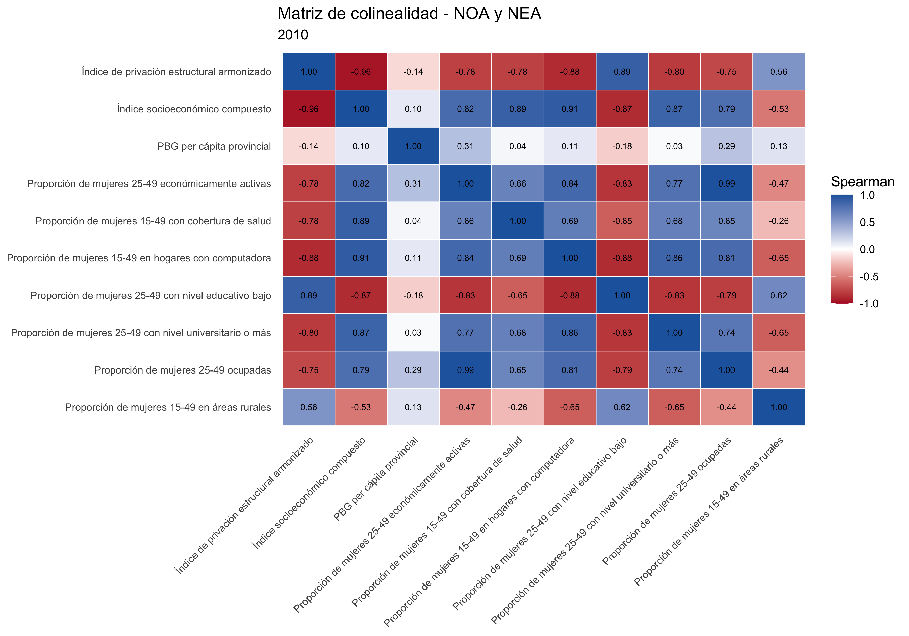
6.2 Panorama comparado de TGF y PMF 40-44
Antes de entrar en el detalle por resultado, conviene condensar qué covariables llegan mejor posicionadas en esta región cuando se comparan simultáneamente la fecundidad reciente (TGF) y la descendencia casi completada (PMF 40-44). La tabla siguiente no reemplaza el análisis posterior; funciona como mapa de lectura para no repetir, sin necesidad, la misma información en dos bloques enteros.
| Covariable | Familia | PMF 40-44 | TGF |
|---|---|---|---|
| PBG per cápita provincial | Producto e ingreso | ρ=0,068; R²=-0,001; ΔMoran=0,003 | ρ=0,211; R²=0,024; ΔMoran=0,021 |
| Proporción de mujeres 15-49 con cobertura de salud | Salud y protección social | ρ=0,568; R²=0,273; ΔMoran=0,081 | ρ=0,498; R²=0,249; ΔMoran=0,093 |
| Proporción de mujeres 15-49 en hogares con computadora | Condiciones materiales | ρ=0,777; R²=0,548; ΔMoran=0,061 | ρ=0,632; R²=0,360; ΔMoran=0,174 |
| Proporción de mujeres 15-49 en áreas rurales | Contexto territorial | ρ=0,525; R²=0,248; ΔMoran=-0,029 | ρ=0,212; R²=0,056; ΔMoran=-0,015 |
| Proporción de mujeres 25-49 con nivel educativo bajo | Educación | ρ=0,769; R²=0,557; ΔMoran=0,051 | ρ=0,661; R²=0,401; ΔMoran=0,199 |
| Proporción de mujeres 25-49 con nivel universitario o más | Educación | ρ=0,819; R²=0,461; ΔMoran=0,124 | ρ=0,549; R²=0,213; ΔMoran=0,083 |
| Proporción de mujeres 25-49 económicamente activas | Mercado laboral | ρ=0,676; R²=0,380; ΔMoran=-0,048 | ρ=0,632; R²=0,376; ΔMoran=0,188 |
| Proporción de mujeres 25-49 ocupadas | Mercado laboral | ρ=0,628; R²=0,328; ΔMoran=-0,042 | ρ=0,605; R²=0,353; ΔMoran=0,170 |
| Índice de privación estructural armonizado | Pobreza estructural | ρ=0,728; R²=0,489; ΔMoran=0,072 | ρ=0,593; R²=0,344; ΔMoran=0,160 |
| Índice socioeconómico compuesto | Nivel socioeconómico | ρ=0,769; R²=0,550; ΔMoran=0,064 | ρ=0,617; R²=0,370; ΔMoran=0,146 |
6.3 Tasa global de fecundidad (TGF)
| Censo | Media | Mediana | Mínimo | Máximo | Unidades espaciales |
|---|---|---|---|---|---|
| 2010 | 2.995 | 2.918 | 2.044 | 5.246 | 193 |
| 2022 | 1.796 | 1.812 | 1.044 | 2.914 | 193 |
| Censo | Indicador | Moran I |
|---|---|---|
| 2010 | Tasa global de fecundidad (TGF) | 0.4433 |
| 2022 | Tasa global de fecundidad (TGF) | 0.4785 |
6.3.1 Mapas del resultado y LISA
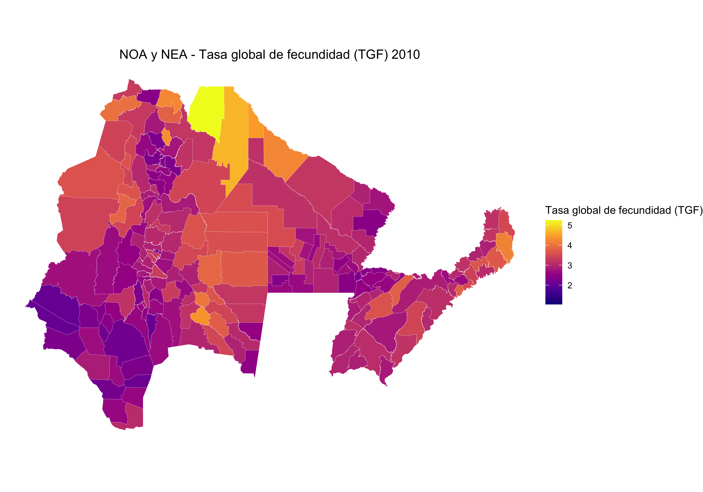
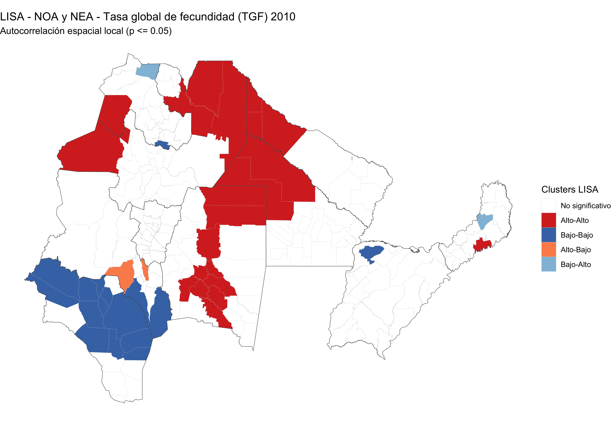
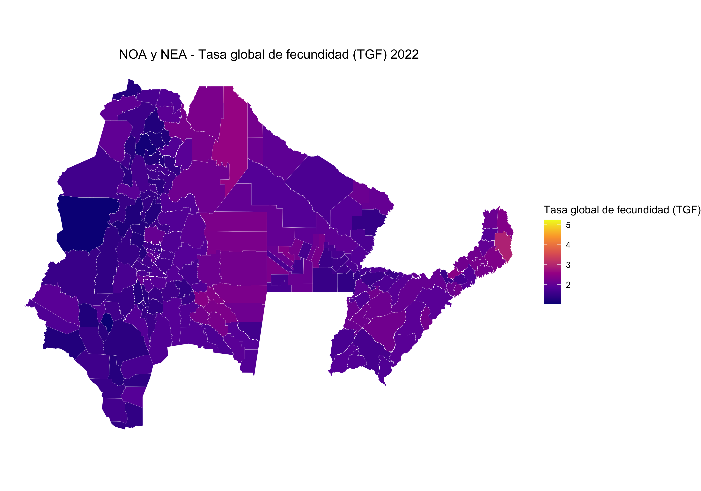
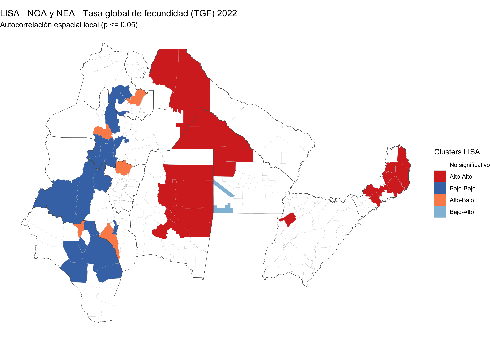
6.3.2 Correlaciones y ajuste bivariado
| Covariable | Censo | Dirección | Pearson | Spearman | Beta estandarizado | R² ajustado | Moran covariable | Moran de residuos | Reducción Moran |
|---|---|---|---|---|---|---|---|---|---|
| Proporción de mujeres 25-49 con nivel universitario o más | 2010 | Inversa | -0.494 | -0.638 | -0.494 | 0.240 | 0.327 | 0.362 | 0.081 |
| Proporción de mujeres 25-49 con nivel educativo bajo | 2010 | Directa | 0.659 | 0.699 | 0.659 | 0.431 | 0.508 | 0.318 | 0.126 |
| Proporción de mujeres 25-49 económicamente activas | 2010 | Inversa | -0.590 | -0.619 | -0.590 | 0.345 | 0.516 | 0.351 | 0.092 |
| Proporción de mujeres 25-49 ocupadas | 2010 | Inversa | -0.575 | -0.592 | -0.575 | 0.327 | 0.496 | 0.344 | 0.099 |
| Proporción de mujeres 15-49 con cobertura de salud | 2010 | Inversa | -0.475 | -0.473 | -0.475 | 0.221 | 0.675 | 0.370 | 0.074 |
| Índice de privación estructural armonizado | 2010 | Directa | 0.667 | 0.667 | 0.667 | 0.442 | 0.572 | 0.264 | 0.180 |
| Proporción de mujeres 15-49 en hogares con computadora | 2010 | Inversa | -0.678 | -0.707 | -0.678 | 0.457 | 0.459 | 0.256 | 0.187 |
| Proporción de mujeres 15-49 en áreas rurales | 2010 | Directa | 0.333 | 0.375 | 0.333 | 0.106 | 0.087 | 0.476 | -0.033 |
| PBG per cápita provincial | 2010 | Inversa | -0.202 | -0.217 | -0.202 | 0.036 | 0.850 | 0.409 | 0.034 |
| Índice socioeconómico compuesto | 2010 | Inversa | -0.655 | -0.659 | -0.655 | 0.426 | 0.582 | 0.307 | 0.137 |
| Proporción de mujeres 25-49 con nivel universitario o más | 2022 | Inversa | -0.436 | -0.459 | -0.436 | 0.186 | 0.415 | 0.394 | 0.085 |
| Proporción de mujeres 25-49 con nivel educativo bajo | 2022 | Directa | 0.612 | 0.623 | 0.612 | 0.371 | 0.614 | 0.207 | 0.272 |
| Proporción de mujeres 25-49 económicamente activas | 2022 | Inversa | -0.641 | -0.644 | -0.641 | 0.407 | 0.583 | 0.196 | 0.283 |
| Proporción de mujeres 25-49 ocupadas | 2022 | Inversa | -0.618 | -0.618 | -0.618 | 0.379 | 0.580 | 0.237 | 0.241 |
| Proporción de mujeres 15-49 con cobertura de salud | 2022 | Inversa | -0.530 | -0.524 | -0.530 | 0.277 | 0.595 | 0.365 | 0.113 |
| Índice de privación estructural armonizado | 2022 | Directa | 0.500 | 0.519 | 0.500 | 0.246 | 0.626 | 0.338 | 0.141 |
| Proporción de mujeres 15-49 en hogares con computadora | 2022 | Inversa | -0.517 | -0.556 | -0.517 | 0.263 | 0.537 | 0.319 | 0.160 |
| Proporción de mujeres 15-49 en áreas rurales | 2022 | Directa | -0.106 | 0.049 | -0.106 | 0.006 | 0.140 | 0.475 | 0.003 |
| PBG per cápita provincial | 2022 | Inversa | -0.131 | -0.205 | -0.131 | 0.012 | 0.868 | 0.471 | 0.008 |
| Índice socioeconómico compuesto | 2022 | Inversa | -0.564 | -0.575 | -0.564 | 0.315 | 0.614 | 0.324 | 0.155 |
6.3.3 Persistencia intercensal dentro de la región
| Covariable | Familia | Signo estable | Variación de la magnitud de Spearman | Cambio R² ajustado |
|---|---|---|---|---|
| Proporción de mujeres 25-49 con nivel universitario o más | Educación | Sí | 0.179 | 0.055 |
| Proporción de mujeres 25-49 con nivel educativo bajo | Educación | Sí | 0.076 | 0.060 |
| Proporción de mujeres 25-49 económicamente activas | Mercado laboral | Sí | 0.024 | 0.062 |
| Proporción de mujeres 25-49 ocupadas | Mercado laboral | Sí | 0.025 | 0.052 |
| Proporción de mujeres 15-49 con cobertura de salud | Salud y protección social | Sí | 0.051 | 0.055 |
| Índice de privación estructural armonizado | Pobreza estructural | Sí | 0.148 | 0.196 |
| Proporción de mujeres 15-49 en hogares con computadora | Condiciones materiales | Sí | 0.151 | 0.194 |
| Proporción de mujeres 15-49 en áreas rurales | Contexto territorial | Sí | 0.327 | 0.100 |
| PBG per cápita provincial | Producto e ingreso | Sí | 0.012 | 0.024 |
| Índice socioeconómico compuesto | Nivel socioeconómico | Sí | 0.084 | 0.111 |
6.3.4 Selección preliminar para Tasa global de fecundidad (TGF)
| Covariable | Familia | Magnitud media de Spearman | R² medio | Reducción Moran media | Signo estable | Variación de la magnitud de Spearman |
|---|---|---|---|---|---|---|
| Proporción de mujeres 25-49 con nivel educativo bajo | Educación | 0.661 | 0.401 | 0.199 | Sí | 0.076 |
| Proporción de mujeres 15-49 en hogares con computadora | Condiciones materiales | 0.632 | 0.360 | 0.174 | Sí | 0.151 |
| Proporción de mujeres 25-49 económicamente activas | Mercado laboral | 0.632 | 0.376 | 0.188 | Sí | 0.024 |
| Proporción de mujeres 25-49 ocupadas | Mercado laboral | 0.605 | 0.353 | 0.170 | Sí | 0.025 |
| Índice socioeconómico compuesto | Nivel socioeconómico | 0.617 | 0.370 | 0.146 | Sí | 0.084 |
| Índice de privación estructural armonizado | Pobreza estructural | 0.593 | 0.344 | 0.160 | Sí | 0.148 |
| Proporción de mujeres 25-49 con nivel universitario o más | Educación | 0.549 | 0.213 | 0.083 | Sí | 0.179 |
| Proporción de mujeres 15-49 con cobertura de salud | Salud y protección social | 0.498 | 0.249 | 0.093 | Sí | 0.051 |
| Proporción de mujeres 15-49 en áreas rurales | Contexto territorial | 0.212 | 0.056 | -0.015 | Sí | 0.327 |
| PBG per cápita provincial | Producto e ingreso | 0.211 | 0.024 | 0.021 | Sí | 0.012 |
6.3.5 Lectura variable por variable
6.3.5.1 Proporción de mujeres 25-49 con nivel universitario o más
| Censo | Dirección | Pearson | Spearman | Beta estandarizado | R² ajustado | Moran covariable | Moran de residuos | Reducción Moran |
|---|---|---|---|---|---|---|---|---|
| 2010 | Inversa | -0.494 | -0.638 | -0.494 | 0.240 | 0.327 | 0.362 | 0.081 |
| 2022 | Inversa | -0.436 | -0.459 | -0.436 | 0.186 | 0.415 | 0.394 | 0.085 |
6.3.5.1.1 Censo 2010
En 2010, la relación con Tasa global de fecundidad (TGF) es inversa y de magnitud moderada-alta. Las medidas bivariadas son coherentes entre sí: Pearson = -0,494, Spearman = -0,638 y beta estandarizado = -0,494. El ajuste lineal simple alcanza un R² ajustado de 0,240. El Moran de residuos queda en 0,362, con una reducción de 0,081 puntos respecto del Moran del resultado; por eso esta covariable absorbe una fracción más bien acotada de la estructura espacial regional. Tomando como referencia el cuartil superior e inferior de los valores observados en la región, los valores relativamente altos aparecen con mayor frecuencia en La Rioja, Tucuman, Chaco, mientras que los relativamente bajos lo hacen en Santiago del Estero, Corrientes, Jujuy. En el mapa LISA, los núcleos Alto-Alto aparecen especialmente en La Rioja, Tucuman, Catamarca, mientras que los núcleos Bajo-Bajo se concentran sobre todo en Santiago del Estero, Jujuy. Esta lectura se refiere únicamente a las unidades con asociación local estadísticamente significativa.

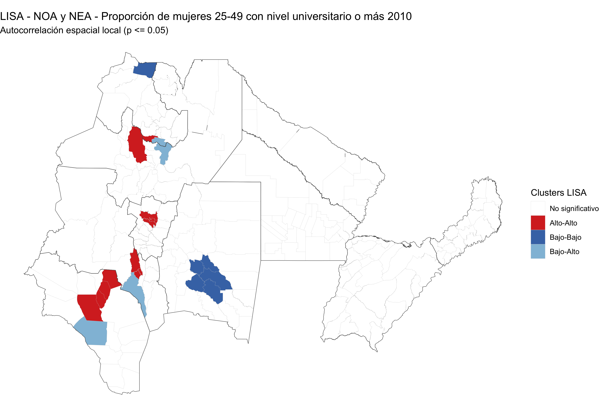
6.3.5.1.2 Censo 2022
En 2022, la relación con Tasa global de fecundidad (TGF) es inversa y de magnitud moderada. Las medidas bivariadas son coherentes entre sí: Pearson = -0,436, Spearman = -0,459 y beta estandarizado = -0,436. El ajuste lineal simple alcanza un R² ajustado de 0,186. El Moran de residuos queda en 0,394, con una reducción de 0,085 puntos respecto del Moran del resultado; por eso esta covariable absorbe una fracción más bien acotada de la estructura espacial regional. Tomando como referencia el cuartil superior e inferior de los valores observados en la región, los valores relativamente altos aparecen con mayor frecuencia en La Rioja, Tucuman, Chaco, mientras que los relativamente bajos lo hacen en Santiago del Estero, Chaco, Corrientes. En el mapa LISA, los núcleos Alto-Alto aparecen especialmente en La Rioja, Tucuman, Jujuy, mientras que los núcleos Bajo-Bajo se concentran sobre todo en Santiago del Estero, Chaco. Esta lectura se refiere únicamente a las unidades con asociación local estadísticamente significativa.


6.3.5.2 Proporción de mujeres 25-49 con nivel educativo bajo
| Censo | Dirección | Pearson | Spearman | Beta estandarizado | R² ajustado | Moran covariable | Moran de residuos | Reducción Moran |
|---|---|---|---|---|---|---|---|---|
| 2010 | Directa | 0.659 | 0.699 | 0.659 | 0.431 | 0.508 | 0.318 | 0.126 |
| 2022 | Directa | 0.612 | 0.623 | 0.612 | 0.371 | 0.614 | 0.207 | 0.272 |
6.3.5.2.1 Censo 2010
En 2010, la relación con Tasa global de fecundidad (TGF) es directa y de magnitud moderada-alta. Las medidas bivariadas son coherentes entre sí: Pearson = 0,659, Spearman = 0,699 y beta estandarizado = 0,659. El ajuste lineal simple alcanza un R² ajustado de 0,431. El Moran de residuos queda en 0,318, con una reducción de 0,126 puntos respecto del Moran del resultado; por eso esta covariable absorbe una fracción más bien acotada de la estructura espacial regional. Tomando como referencia el cuartil superior e inferior de los valores observados en la región, los valores relativamente altos aparecen con mayor frecuencia en Santiago del Estero, Misiones, Chaco, mientras que los relativamente bajos lo hacen en La Rioja, Salta, Catamarca. En el mapa LISA, los núcleos Alto-Alto aparecen especialmente en Santiago del Estero, Jujuy, Misiones, mientras que los núcleos Bajo-Bajo se concentran sobre todo en La Rioja, Salta, Jujuy. Esta lectura se refiere únicamente a las unidades con asociación local estadísticamente significativa.

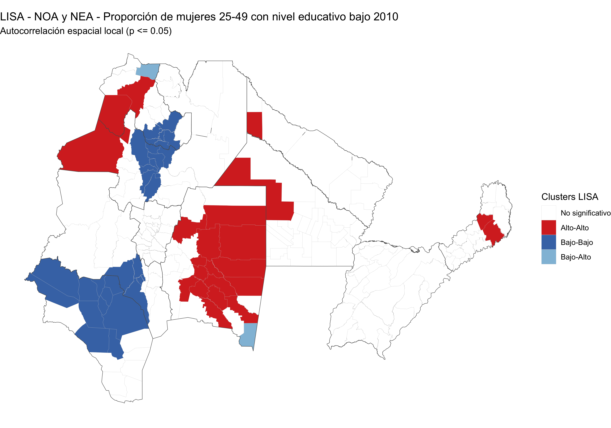
6.3.5.2.2 Censo 2022
En 2022, la relación con Tasa global de fecundidad (TGF) es directa y de magnitud moderada-alta. Las medidas bivariadas son coherentes entre sí: Pearson = 0,612, Spearman = 0,623 y beta estandarizado = 0,612. El ajuste lineal simple alcanza un R² ajustado de 0,371. El Moran de residuos queda en 0,207, con una reducción de 0,272 puntos respecto del Moran del resultado; por eso esta covariable absorbe una fracción apreciable de la estructura espacial regional. Tomando como referencia el cuartil superior e inferior de los valores observados en la región, los valores relativamente altos aparecen con mayor frecuencia en Santiago del Estero, Misiones, Chaco, mientras que los relativamente bajos lo hacen en La Rioja, Salta, Catamarca. En el mapa LISA, los núcleos Alto-Alto aparecen especialmente en Santiago del Estero, Misiones, Chaco, mientras que los núcleos Bajo-Bajo se concentran sobre todo en La Rioja, Salta, Jujuy. Esta lectura se refiere únicamente a las unidades con asociación local estadísticamente significativa.


6.3.5.3 Proporción de mujeres 25-49 económicamente activas
| Censo | Dirección | Pearson | Spearman | Beta estandarizado | R² ajustado | Moran covariable | Moran de residuos | Reducción Moran |
|---|---|---|---|---|---|---|---|---|
| 2010 | Inversa | -0.590 | -0.619 | -0.590 | 0.345 | 0.516 | 0.351 | 0.092 |
| 2022 | Inversa | -0.641 | -0.644 | -0.641 | 0.407 | 0.583 | 0.196 | 0.283 |
6.3.5.3.1 Censo 2010
En 2010, la relación con Tasa global de fecundidad (TGF) es inversa y de magnitud moderada-alta. Las medidas bivariadas son coherentes entre sí: Pearson = -0,590, Spearman = -0,619 y beta estandarizado = -0,590. El ajuste lineal simple alcanza un R² ajustado de 0,345. El Moran de residuos queda en 0,351, con una reducción de 0,092 puntos respecto del Moran del resultado; por eso esta covariable absorbe una fracción más bien acotada de la estructura espacial regional. Tomando como referencia el cuartil superior e inferior de los valores observados en la región, los valores relativamente altos aparecen con mayor frecuencia en La Rioja, Catamarca, Jujuy, mientras que los relativamente bajos lo hacen en Santiago del Estero, Chaco, Corrientes. En el mapa LISA, los núcleos Alto-Alto aparecen especialmente en La Rioja, Catamarca, Jujuy, mientras que los núcleos Bajo-Bajo se concentran sobre todo en Santiago del Estero, Corrientes, Chaco. Esta lectura se refiere únicamente a las unidades con asociación local estadísticamente significativa.

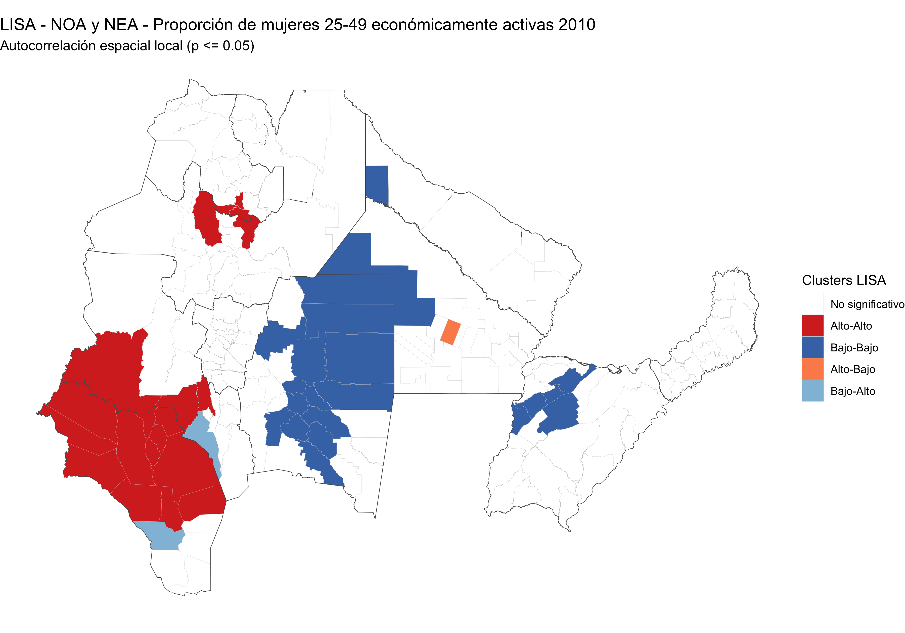
6.3.5.3.2 Censo 2022
En 2022, la relación con Tasa global de fecundidad (TGF) es inversa y de magnitud moderada-alta. Las medidas bivariadas son coherentes entre sí: Pearson = -0,641, Spearman = -0,644 y beta estandarizado = -0,641. El ajuste lineal simple alcanza un R² ajustado de 0,407. El Moran de residuos queda en 0,196, con una reducción de 0,283 puntos respecto del Moran del resultado; por eso esta covariable absorbe una fracción apreciable de la estructura espacial regional. Tomando como referencia el cuartil superior e inferior de los valores observados en la región, los valores relativamente altos aparecen con mayor frecuencia en La Rioja, Catamarca, Jujuy, mientras que los relativamente bajos lo hacen en Santiago del Estero, Corrientes, Chaco. En el mapa LISA, los núcleos Alto-Alto aparecen especialmente en La Rioja, Catamarca, Salta, mientras que los núcleos Bajo-Bajo se concentran sobre todo en Santiago del Estero, Corrientes, Formosa. Esta lectura se refiere únicamente a las unidades con asociación local estadísticamente significativa.
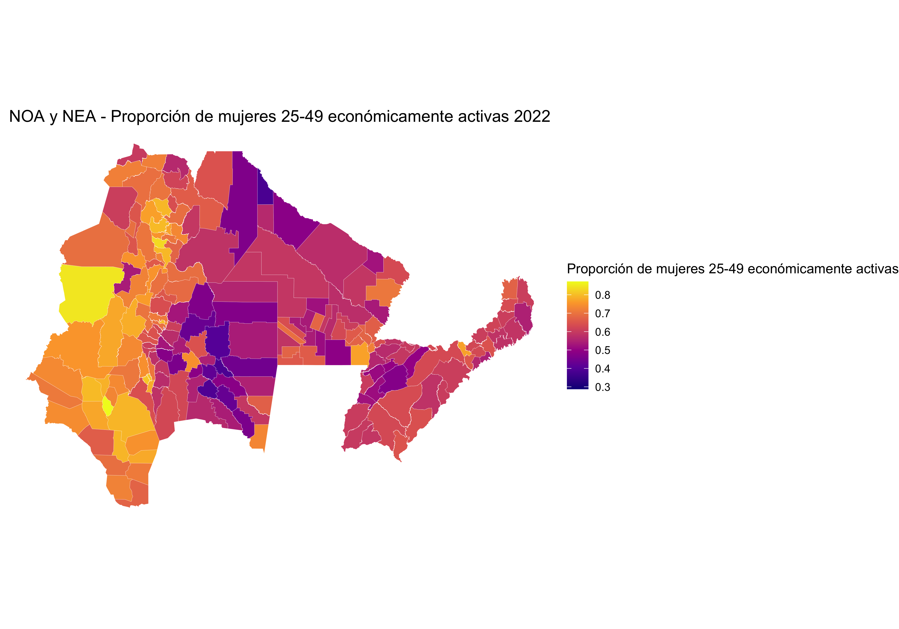

6.3.5.4 Proporción de mujeres 25-49 ocupadas
| Censo | Dirección | Pearson | Spearman | Beta estandarizado | R² ajustado | Moran covariable | Moran de residuos | Reducción Moran |
|---|---|---|---|---|---|---|---|---|
| 2010 | Inversa | -0.575 | -0.592 | -0.575 | 0.327 | 0.496 | 0.344 | 0.099 |
| 2022 | Inversa | -0.618 | -0.618 | -0.618 | 0.379 | 0.580 | 0.237 | 0.241 |
6.3.5.4.1 Censo 2010
En 2010, la relación con Tasa global de fecundidad (TGF) es inversa y de magnitud moderada-alta. Las medidas bivariadas son coherentes entre sí: Pearson = -0,575, Spearman = -0,592 y beta estandarizado = -0,575. El ajuste lineal simple alcanza un R² ajustado de 0,327. El Moran de residuos queda en 0,344, con una reducción de 0,099 puntos respecto del Moran del resultado; por eso esta covariable absorbe una fracción más bien acotada de la estructura espacial regional. Tomando como referencia el cuartil superior e inferior de los valores observados en la región, los valores relativamente altos aparecen con mayor frecuencia en La Rioja, Catamarca, Jujuy, mientras que los relativamente bajos lo hacen en Santiago del Estero, Corrientes, Chaco. En el mapa LISA, los núcleos Alto-Alto aparecen especialmente en La Rioja, Catamarca, Jujuy, mientras que los núcleos Bajo-Bajo se concentran sobre todo en Santiago del Estero, Corrientes, Chaco. Esta lectura se refiere únicamente a las unidades con asociación local estadísticamente significativa.

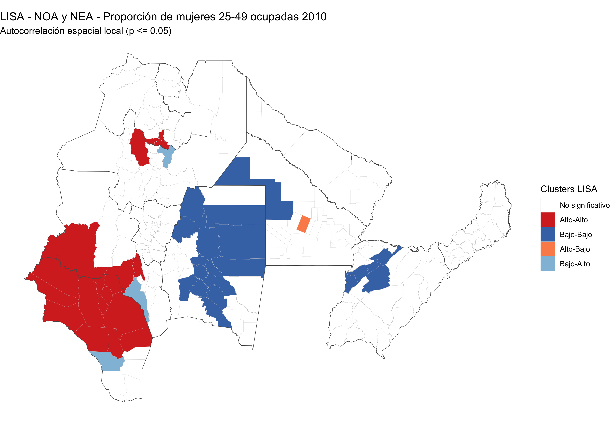
6.3.5.4.2 Censo 2022
En 2022, la relación con Tasa global de fecundidad (TGF) es inversa y de magnitud moderada-alta. Las medidas bivariadas son coherentes entre sí: Pearson = -0,618, Spearman = -0,618 y beta estandarizado = -0,618. El ajuste lineal simple alcanza un R² ajustado de 0,379. El Moran de residuos queda en 0,237, con una reducción de 0,241 puntos respecto del Moran del resultado; por eso esta covariable absorbe una fracción apreciable de la estructura espacial regional. Tomando como referencia el cuartil superior e inferior de los valores observados en la región, los valores relativamente altos aparecen con mayor frecuencia en La Rioja, Catamarca, Jujuy, mientras que los relativamente bajos lo hacen en Santiago del Estero, Corrientes, Chaco. En el mapa LISA, los núcleos Alto-Alto aparecen especialmente en La Rioja, Catamarca, Jujuy, mientras que los núcleos Bajo-Bajo se concentran sobre todo en Santiago del Estero, Corrientes, Chaco. Esta lectura se refiere únicamente a las unidades con asociación local estadísticamente significativa.

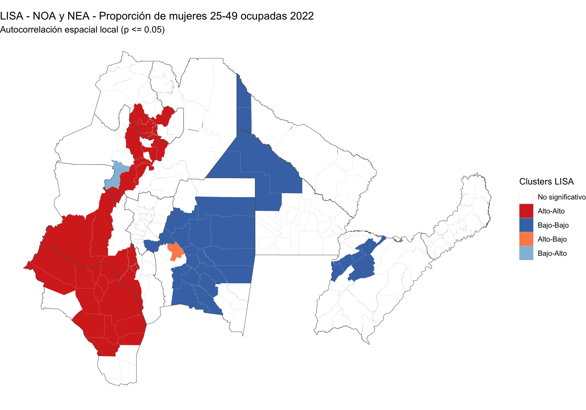
6.3.5.5 Proporción de mujeres 15-49 con cobertura de salud
| Censo | Dirección | Pearson | Spearman | Beta estandarizado | R² ajustado | Moran covariable | Moran de residuos | Reducción Moran |
|---|---|---|---|---|---|---|---|---|
| 2010 | Inversa | -0.475 | -0.473 | -0.475 | 0.221 | 0.675 | 0.370 | 0.074 |
| 2022 | Inversa | -0.530 | -0.524 | -0.530 | 0.277 | 0.595 | 0.365 | 0.113 |
6.3.5.5.1 Censo 2010
En 2010, la relación con Tasa global de fecundidad (TGF) es inversa y de magnitud moderada. Las medidas bivariadas son coherentes entre sí: Pearson = -0,475, Spearman = -0,473 y beta estandarizado = -0,475. El ajuste lineal simple alcanza un R² ajustado de 0,221. El Moran de residuos queda en 0,370, con una reducción de 0,074 puntos respecto del Moran del resultado; por eso esta covariable absorbe una fracción más bien acotada de la estructura espacial regional. Tomando como referencia el cuartil superior e inferior de los valores observados en la región, los valores relativamente altos aparecen con mayor frecuencia en La Rioja, Catamarca, Misiones, mientras que los relativamente bajos lo hacen en Santiago del Estero, Chaco, Formosa. En el mapa LISA, los núcleos Alto-Alto aparecen especialmente en Catamarca, La Rioja, Tucuman, mientras que los núcleos Bajo-Bajo se concentran sobre todo en Chaco, Santiago del Estero, Formosa. Esta lectura se refiere únicamente a las unidades con asociación local estadísticamente significativa.

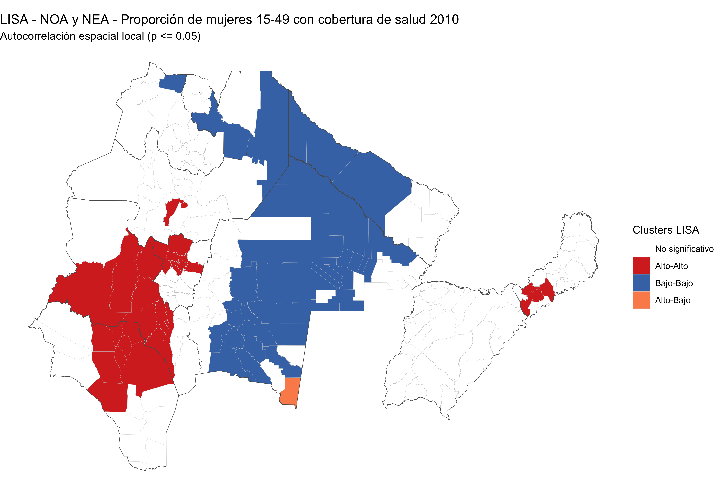
6.3.5.5.2 Censo 2022
En 2022, la relación con Tasa global de fecundidad (TGF) es inversa y de magnitud moderada-alta. Las medidas bivariadas son coherentes entre sí: Pearson = -0,530, Spearman = -0,524 y beta estandarizado = -0,530. El ajuste lineal simple alcanza un R² ajustado de 0,277. El Moran de residuos queda en 0,365, con una reducción de 0,113 puntos respecto del Moran del resultado; por eso esta covariable absorbe una fracción más bien acotada de la estructura espacial regional. Tomando como referencia el cuartil superior e inferior de los valores observados en la región, los valores relativamente altos aparecen con mayor frecuencia en Tucuman, La Rioja, Catamarca, mientras que los relativamente bajos lo hacen en Santiago del Estero, Chaco, Formosa. En el mapa LISA, los núcleos Alto-Alto aparecen especialmente en Tucuman, Catamarca, Chaco, mientras que los núcleos Bajo-Bajo se concentran sobre todo en Santiago del Estero, Chaco, Formosa. Esta lectura se refiere únicamente a las unidades con asociación local estadísticamente significativa.


6.3.5.6 Índice de privación estructural armonizado
| Censo | Dirección | Pearson | Spearman | Beta estandarizado | R² ajustado | Moran covariable | Moran de residuos | Reducción Moran |
|---|---|---|---|---|---|---|---|---|
| 2010 | Directa | 0.667 | 0.667 | 0.667 | 0.442 | 0.572 | 0.264 | 0.180 |
| 2022 | Directa | 0.500 | 0.519 | 0.500 | 0.246 | 0.626 | 0.338 | 0.141 |
6.3.5.6.1 Censo 2010
En 2010, la relación con Tasa global de fecundidad (TGF) es directa y de magnitud moderada-alta. Las medidas bivariadas son coherentes entre sí: Pearson = 0,667, Spearman = 0,667 y beta estandarizado = 0,667. El ajuste lineal simple alcanza un R² ajustado de 0,442. El Moran de residuos queda en 0,264, con una reducción de 0,180 puntos respecto del Moran del resultado; por eso esta covariable absorbe una fracción apreciable de la estructura espacial regional. Tomando como referencia el cuartil superior e inferior de los valores observados en la región, los valores relativamente altos aparecen con mayor frecuencia en Santiago del Estero, Chaco, Formosa, mientras que los relativamente bajos lo hacen en La Rioja, Catamarca, Corrientes. En el mapa LISA, los núcleos Alto-Alto aparecen especialmente en Santiago del Estero, Chaco, Formosa, mientras que los núcleos Bajo-Bajo se concentran sobre todo en La Rioja, Catamarca, Corrientes. Esta lectura se refiere únicamente a las unidades con asociación local estadísticamente significativa.

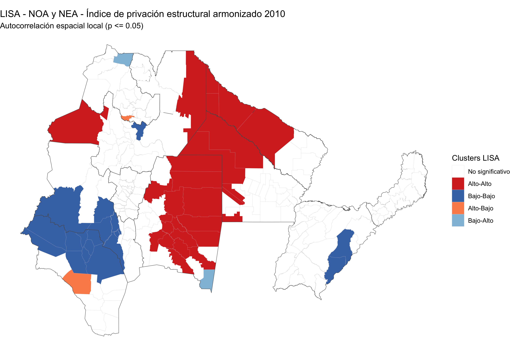
6.3.5.6.2 Censo 2022
En 2022, la relación con Tasa global de fecundidad (TGF) es directa y de magnitud moderada-alta. Las medidas bivariadas son coherentes entre sí: Pearson = 0,500, Spearman = 0,519 y beta estandarizado = 0,500. El ajuste lineal simple alcanza un R² ajustado de 0,246. El Moran de residuos queda en 0,338, con una reducción de 0,141 puntos respecto del Moran del resultado; por eso esta covariable absorbe una fracción más bien acotada de la estructura espacial regional. Tomando como referencia el cuartil superior e inferior de los valores observados en la región, los valores relativamente altos aparecen con mayor frecuencia en Santiago del Estero, Chaco, Formosa, mientras que los relativamente bajos lo hacen en La Rioja, Catamarca, Corrientes. En el mapa LISA, los núcleos Alto-Alto aparecen especialmente en Santiago del Estero, Chaco, Formosa, mientras que los núcleos Bajo-Bajo se concentran sobre todo en Catamarca, La Rioja, Corrientes. Esta lectura se refiere únicamente a las unidades con asociación local estadísticamente significativa.
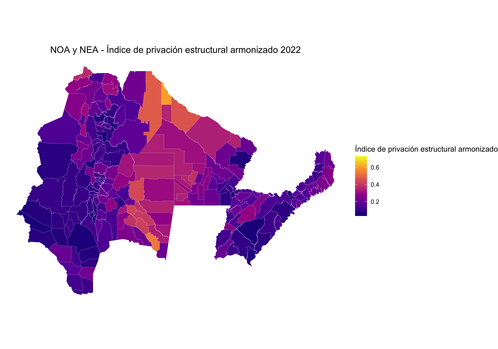
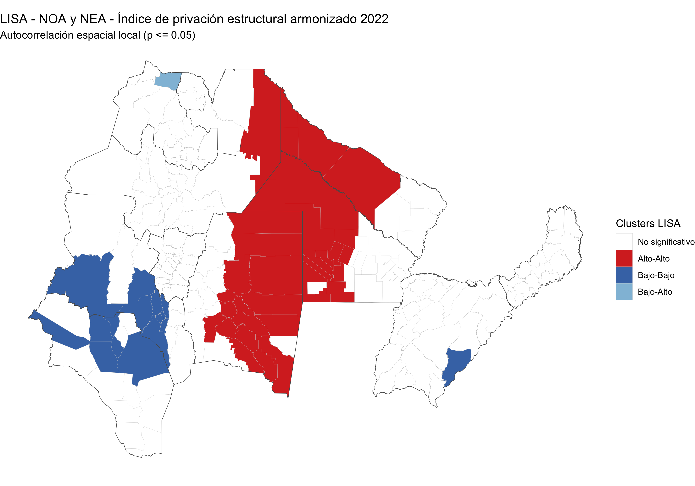
6.3.5.7 Proporción de mujeres 15-49 en hogares con computadora
| Censo | Dirección | Pearson | Spearman | Beta estandarizado | R² ajustado | Moran covariable | Moran de residuos | Reducción Moran |
|---|---|---|---|---|---|---|---|---|
| 2010 | Inversa | -0.678 | -0.707 | -0.678 | 0.457 | 0.459 | 0.256 | 0.187 |
| 2022 | Inversa | -0.517 | -0.556 | -0.517 | 0.263 | 0.537 | 0.319 | 0.160 |
6.3.5.7.1 Censo 2010
En 2010, la relación con Tasa global de fecundidad (TGF) es inversa y de magnitud alta. Las medidas bivariadas son coherentes entre sí: Pearson = -0,678, Spearman = -0,707 y beta estandarizado = -0,678. El ajuste lineal simple alcanza un R² ajustado de 0,457. El Moran de residuos queda en 0,256, con una reducción de 0,187 puntos respecto del Moran del resultado; por eso esta covariable absorbe una fracción apreciable de la estructura espacial regional. Tomando como referencia el cuartil superior e inferior de los valores observados en la región, los valores relativamente altos aparecen con mayor frecuencia en La Rioja, Corrientes, Catamarca, mientras que los relativamente bajos lo hacen en Santiago del Estero, Salta, Chaco. En el mapa LISA, los núcleos Alto-Alto aparecen especialmente en La Rioja, Tucuman, Catamarca, mientras que los núcleos Bajo-Bajo se concentran sobre todo en Santiago del Estero, Chaco, Formosa. Esta lectura se refiere únicamente a las unidades con asociación local estadísticamente significativa.

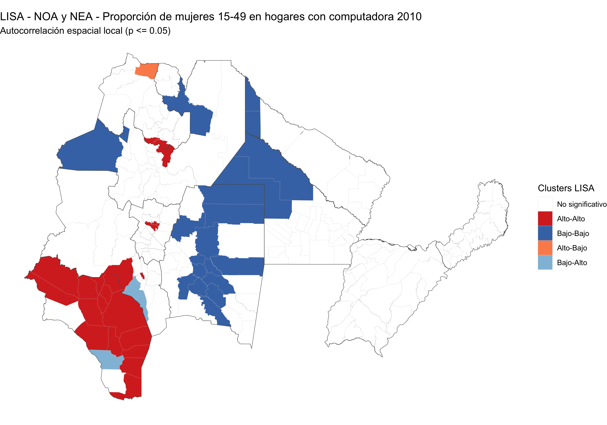
6.3.5.7.2 Censo 2022
En 2022, la relación con Tasa global de fecundidad (TGF) es inversa y de magnitud moderada-alta. Las medidas bivariadas son coherentes entre sí: Pearson = -0,517, Spearman = -0,556 y beta estandarizado = -0,517. El ajuste lineal simple alcanza un R² ajustado de 0,263. El Moran de residuos queda en 0,319, con una reducción de 0,160 puntos respecto del Moran del resultado; por eso esta covariable absorbe una fracción apreciable de la estructura espacial regional. Tomando como referencia el cuartil superior e inferior de los valores observados en la región, los valores relativamente altos aparecen con mayor frecuencia en La Rioja, Salta, Chaco, mientras que los relativamente bajos lo hacen en Santiago del Estero, Corrientes, Jujuy. En el mapa LISA, los núcleos Alto-Alto aparecen especialmente en La Rioja, Salta, Catamarca, mientras que los núcleos Bajo-Bajo se concentran sobre todo en Santiago del Estero, Formosa, Jujuy. Esta lectura se refiere únicamente a las unidades con asociación local estadísticamente significativa.
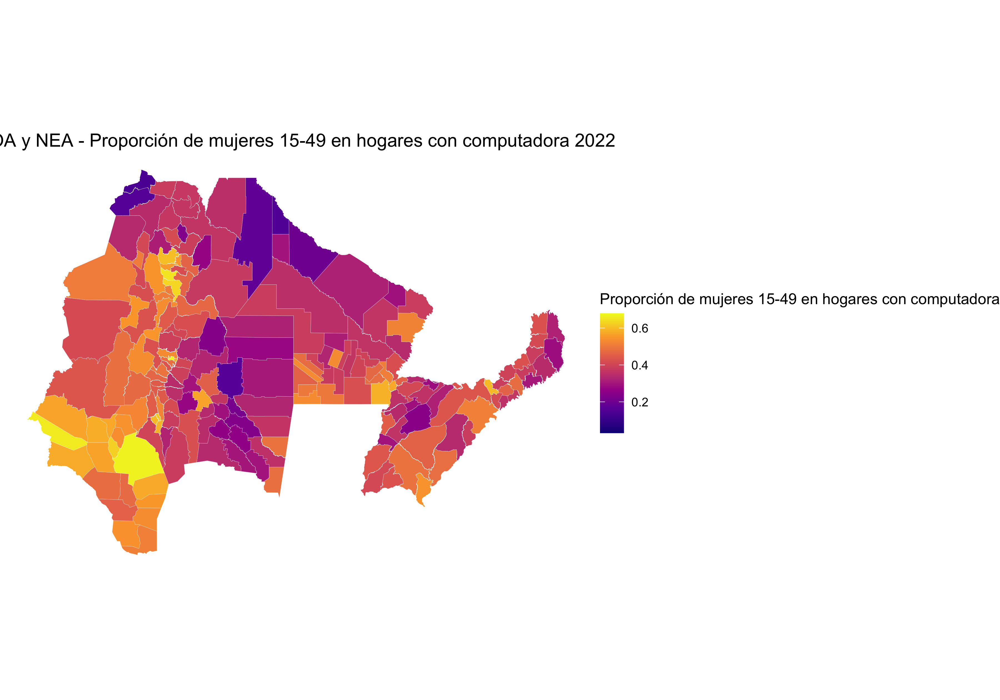

6.3.5.8 Proporción de mujeres 15-49 en áreas rurales
| Censo | Dirección | Pearson | Spearman | Beta estandarizado | R² ajustado | Moran covariable | Moran de residuos | Reducción Moran |
|---|---|---|---|---|---|---|---|---|
| 2010 | Directa | 0.333 | 0.375 | 0.333 | 0.106 | 0.087 | 0.476 | -0.033 |
| 2022 | Directa | -0.106 | 0.049 | -0.106 | 0.006 | 0.140 | 0.475 | 0.003 |
6.3.5.8.1 Censo 2010
En 2010, la relación con Tasa global de fecundidad (TGF) es directa y de magnitud moderada. Las medidas bivariadas son coherentes entre sí: Pearson = 0,333, Spearman = 0,375 y beta estandarizado = 0,333. El ajuste lineal simple alcanza un R² ajustado de 0,106. El Moran de residuos queda en 0,476, con una reducción de -0,033 puntos respecto del Moran del resultado; por eso esta covariable absorbe una fracción más bien acotada de la estructura espacial regional. Tomando como referencia el cuartil superior e inferior de los valores observados en la región, los valores relativamente altos aparecen con mayor frecuencia en Santiago del Estero, Salta, Catamarca, mientras que los relativamente bajos lo hacen en Salta, Chaco, La Rioja. En el mapa LISA, los núcleos Alto-Alto aparecen especialmente en Catamarca, Santiago del Estero, mientras que los núcleos Bajo-Bajo se concentran sobre todo en Chaco, Jujuy, Salta. Esta lectura se refiere únicamente a las unidades con asociación local estadísticamente significativa.
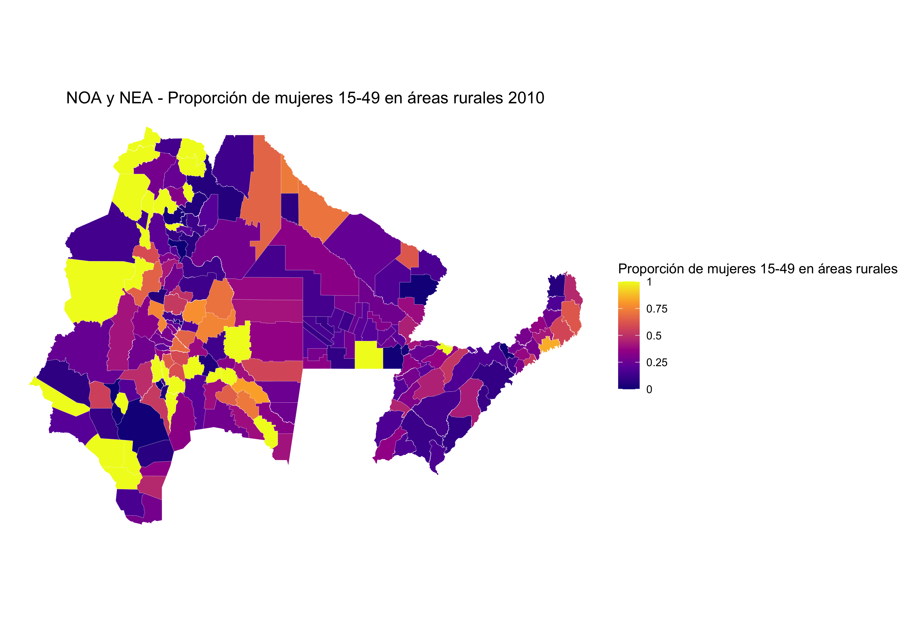
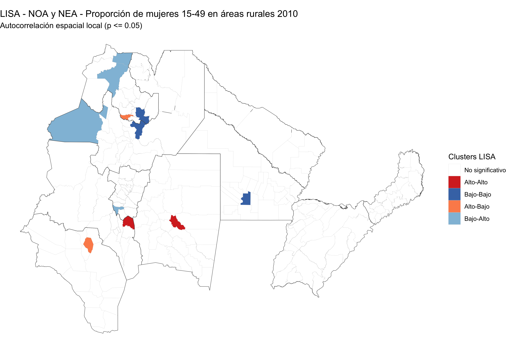
6.3.5.8.2 Censo 2022
En 2022, la relación con Tasa global de fecundidad (TGF) es directa y de magnitud baja. Las medidas bivariadas son coherentes entre sí: Pearson = -0,106, Spearman = 0,049 y beta estandarizado = -0,106. El ajuste lineal simple alcanza un R² ajustado de 0,006. El Moran de residuos queda en 0,475, con una reducción de 0,003 puntos respecto del Moran del resultado; por eso esta covariable absorbe una fracción más bien acotada de la estructura espacial regional. Tomando como referencia el cuartil superior e inferior de los valores observados en la región, los valores relativamente altos aparecen con mayor frecuencia en Santiago del Estero, Catamarca, Jujuy, mientras que los relativamente bajos lo hacen en Chaco, Corrientes, La Rioja. En el mapa LISA, los núcleos Alto-Alto aparecen especialmente en Catamarca, Santiago del Estero, mientras que los núcleos Bajo-Bajo se concentran sobre todo en O’Higgins. Esta lectura se refiere únicamente a las unidades con asociación local estadísticamente significativa.


6.3.5.9 PBG per cápita provincial
| Censo | Dirección | Pearson | Spearman | Beta estandarizado | R² ajustado | Moran covariable | Moran de residuos | Reducción Moran |
|---|---|---|---|---|---|---|---|---|
| 2010 | Inversa | -0.202 | -0.217 | -0.202 | 0.036 | 0.850 | 0.409 | 0.034 |
| 2022 | Inversa | -0.131 | -0.205 | -0.131 | 0.012 | 0.868 | 0.471 | 0.008 |
6.3.5.9.1 Censo 2010
En 2010, la relación con Tasa global de fecundidad (TGF) es inversa y de magnitud baja. Las medidas bivariadas son coherentes entre sí: Pearson = -0,202, Spearman = -0,217 y beta estandarizado = -0,202. El ajuste lineal simple alcanza un R² ajustado de 0,036. El Moran de residuos queda en 0,409, con una reducción de 0,034 puntos respecto del Moran del resultado; por eso esta covariable absorbe una fracción más bien acotada de la estructura espacial regional. Tomando como referencia el cuartil superior e inferior de los valores observados en la región, los valores relativamente altos aparecen con mayor frecuencia en Santiago del Estero, La Rioja, Catamarca, mientras que los relativamente bajos lo hacen en Corrientes, Misiones, Formosa. En el mapa LISA, los núcleos Alto-Alto aparecen especialmente en Catamarca, La Rioja, Santiago del Estero, mientras que los núcleos Bajo-Bajo se concentran sobre todo en Misiones, Corrientes, Formosa. Esta lectura se refiere únicamente a las unidades con asociación local estadísticamente significativa.

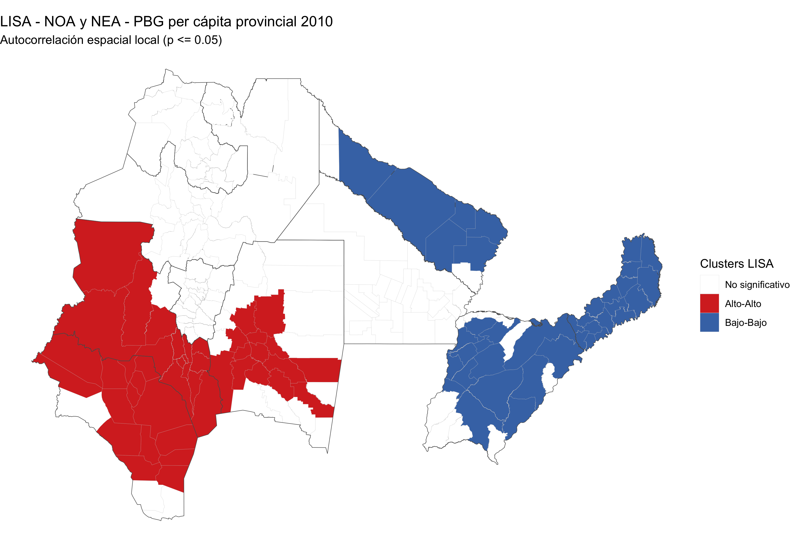
6.3.5.9.2 Censo 2022
En 2022, la relación con Tasa global de fecundidad (TGF) es inversa y de magnitud baja. Las medidas bivariadas son coherentes entre sí: Pearson = -0,131, Spearman = -0,205 y beta estandarizado = -0,131. El ajuste lineal simple alcanza un R² ajustado de 0,012. El Moran de residuos queda en 0,471, con una reducción de 0,008 puntos respecto del Moran del resultado; por eso esta covariable absorbe una fracción más bien acotada de la estructura espacial regional. Tomando como referencia el cuartil superior e inferior de los valores observados en la región, los valores relativamente altos aparecen con mayor frecuencia en Santiago del Estero, La Rioja, Catamarca, mientras que los relativamente bajos lo hacen en Corrientes, Misiones, Formosa. En el mapa LISA, los núcleos Alto-Alto aparecen especialmente en Santiago del Estero, Chaco, Catamarca, mientras que los núcleos Bajo-Bajo se concentran sobre todo en Corrientes, Misiones, Formosa. Esta lectura se refiere únicamente a las unidades con asociación local estadísticamente significativa.
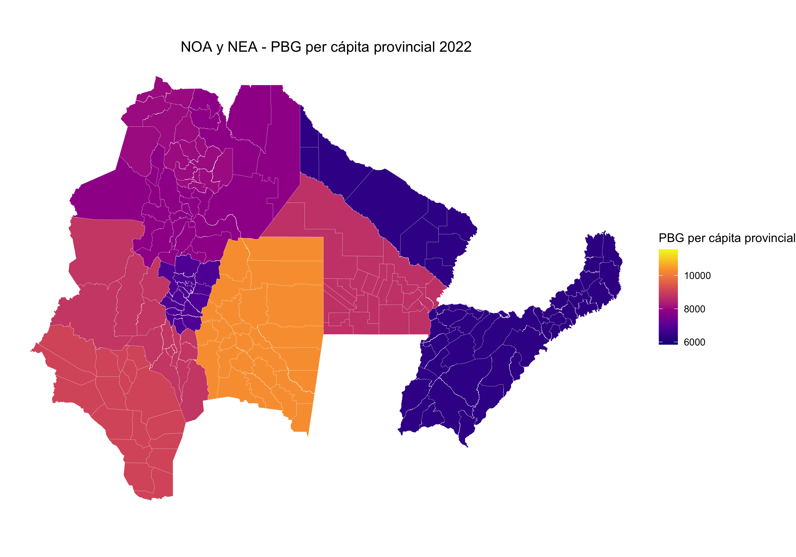
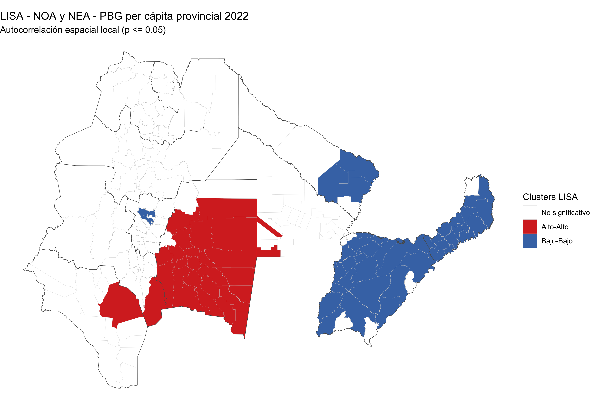
6.3.5.10 Índice socioeconómico compuesto
| Censo | Dirección | Pearson | Spearman | Beta estandarizado | R² ajustado | Moran covariable | Moran de residuos | Reducción Moran |
|---|---|---|---|---|---|---|---|---|
| 2010 | Inversa | -0.655 | -0.659 | -0.655 | 0.426 | 0.582 | 0.307 | 0.137 |
| 2022 | Inversa | -0.564 | -0.575 | -0.564 | 0.315 | 0.614 | 0.324 | 0.155 |
6.3.5.10.1 Censo 2010
En 2010, la relación con Tasa global de fecundidad (TGF) es inversa y de magnitud moderada-alta. Las medidas bivariadas son coherentes entre sí: Pearson = -0,655, Spearman = -0,659 y beta estandarizado = -0,655. El ajuste lineal simple alcanza un R² ajustado de 0,426. El Moran de residuos queda en 0,307, con una reducción de 0,137 puntos respecto del Moran del resultado; por eso esta covariable absorbe una fracción más bien acotada de la estructura espacial regional. Tomando como referencia el cuartil superior e inferior de los valores observados en la región, los valores relativamente altos aparecen con mayor frecuencia en La Rioja, Catamarca, Tucuman, mientras que los relativamente bajos lo hacen en Santiago del Estero, Chaco, Formosa. En el mapa LISA, los núcleos Alto-Alto aparecen especialmente en La Rioja, Catamarca, Tucuman, mientras que los núcleos Bajo-Bajo se concentran sobre todo en Santiago del Estero, Chaco, Formosa. Esta lectura se refiere únicamente a las unidades con asociación local estadísticamente significativa.


6.3.5.10.2 Censo 2022
En 2022, la relación con Tasa global de fecundidad (TGF) es inversa y de magnitud moderada-alta. Las medidas bivariadas son coherentes entre sí: Pearson = -0,564, Spearman = -0,575 y beta estandarizado = -0,564. El ajuste lineal simple alcanza un R² ajustado de 0,315. El Moran de residuos queda en 0,324, con una reducción de 0,155 puntos respecto del Moran del resultado; por eso esta covariable absorbe una fracción apreciable de la estructura espacial regional. Tomando como referencia el cuartil superior e inferior de los valores observados en la región, los valores relativamente altos aparecen con mayor frecuencia en La Rioja, Catamarca, Corrientes, mientras que los relativamente bajos lo hacen en Santiago del Estero, Chaco, Formosa. En el mapa LISA, los núcleos Alto-Alto aparecen especialmente en La Rioja, Catamarca, Salta, mientras que los núcleos Bajo-Bajo se concentran sobre todo en Santiago del Estero, Chaco, Formosa. Esta lectura se refiere únicamente a las unidades con asociación local estadísticamente significativa.
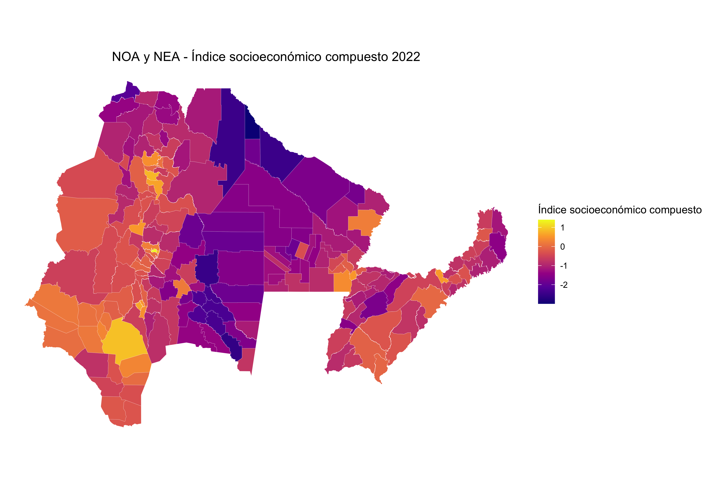
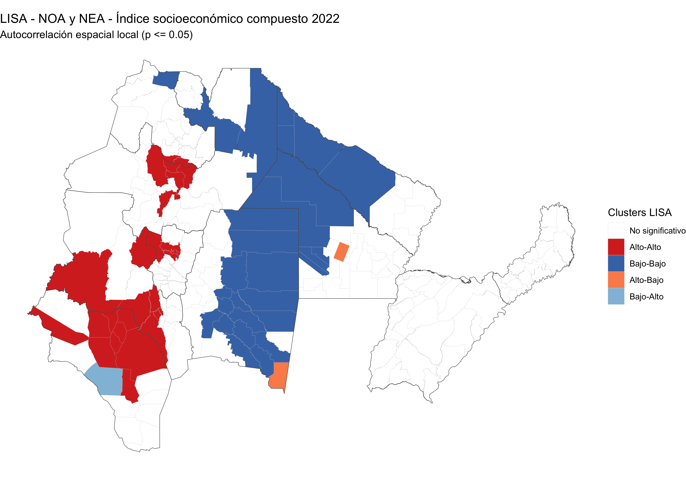
6.4 Paridez media final (40-44)
| Censo | Media | Mediana | Mínimo | Máximo | Unidades espaciales |
|---|---|---|---|---|---|
| 2010 | 3.833 | 3.751 | 2.691 | 5.890 | 193 |
| 2022 | 3.047 | 2.970 | 2.259 | 4.519 | 193 |
| Censo | Indicador | Moran I |
|---|---|---|
| 2010 | Paridez media final (40-44) | 0.4110 |
| 2022 | Paridez media final (40-44) | 0.4491 |
6.4.1 Mapas del resultado y LISA
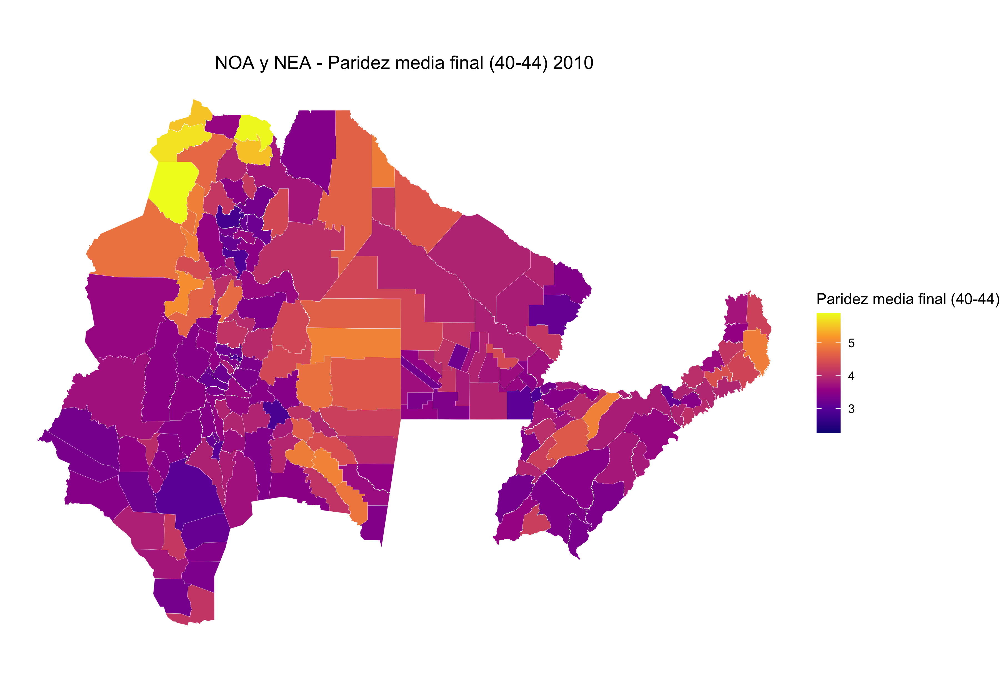
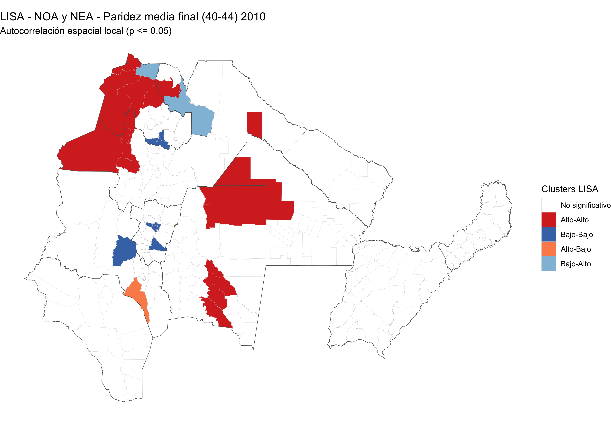
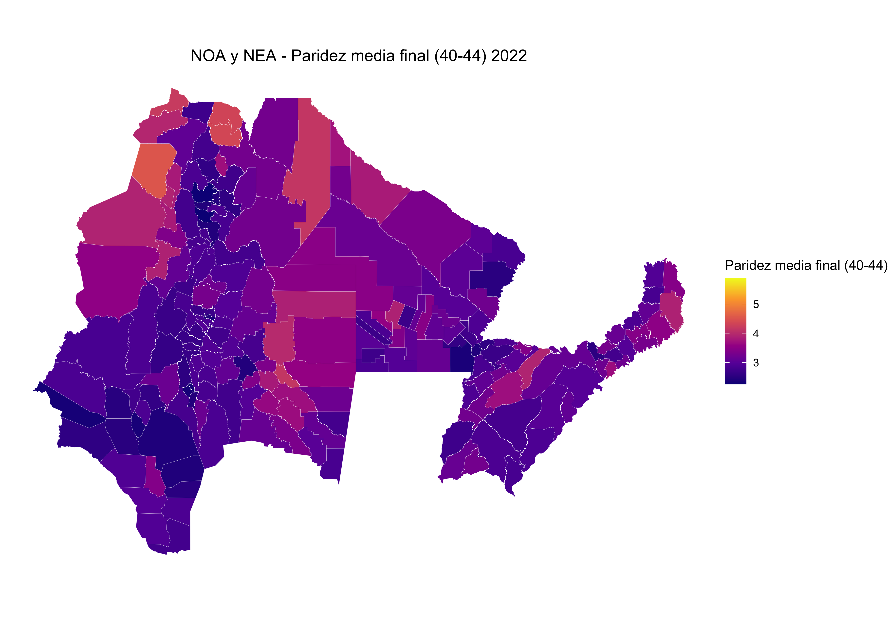
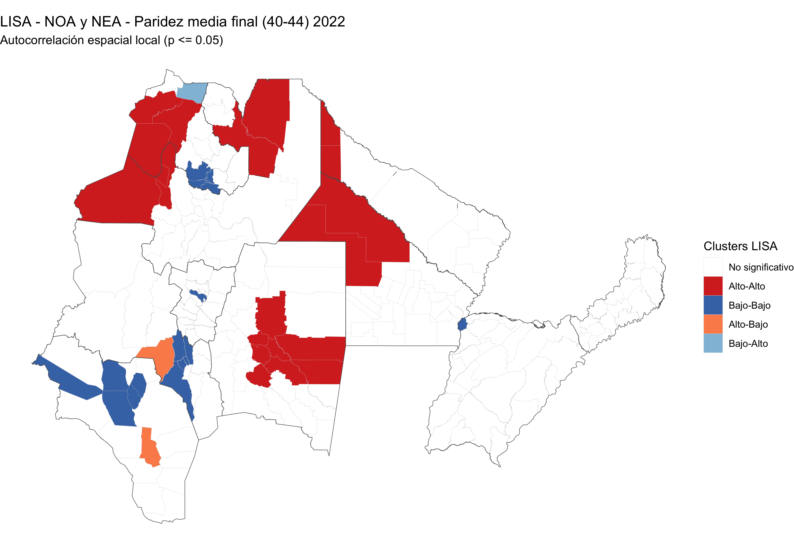
6.4.2 Correlaciones y ajuste bivariado
| Covariable | Censo | Dirección | Pearson | Spearman | Beta estandarizado | R² ajustado | Moran covariable | Moran de residuos | Reducción Moran |
|---|---|---|---|---|---|---|---|---|---|
| Proporción de mujeres 25-49 con nivel universitario o más | 2010 | Inversa | -0.655 | -0.818 | -0.655 | 0.426 | 0.327 | 0.328 | 0.083 |
| Proporción de mujeres 25-49 con nivel educativo bajo | 2010 | Directa | 0.742 | 0.742 | 0.742 | 0.549 | 0.508 | 0.386 | 0.025 |
| Proporción de mujeres 25-49 económicamente activas | 2010 | Inversa | -0.600 | -0.666 | -0.600 | 0.357 | 0.516 | 0.505 | -0.094 |
| Proporción de mujeres 25-49 ocupadas | 2010 | Inversa | -0.563 | -0.623 | -0.563 | 0.313 | 0.496 | 0.488 | -0.077 |
| Proporción de mujeres 15-49 con cobertura de salud | 2010 | Inversa | -0.502 | -0.538 | -0.502 | 0.248 | 0.675 | 0.377 | 0.034 |
| Índice de privación estructural armonizado | 2010 | Directa | 0.716 | 0.735 | 0.716 | 0.510 | 0.572 | 0.369 | 0.042 |
| Proporción de mujeres 15-49 en hogares con computadora | 2010 | Inversa | -0.741 | -0.788 | -0.741 | 0.546 | 0.459 | 0.400 | 0.011 |
| Proporción de mujeres 15-49 en áreas rurales | 2010 | Directa | 0.534 | 0.555 | 0.534 | 0.282 | 0.087 | 0.417 | -0.006 |
| PBG per cápita provincial | 2010 | Inversa | -0.083 | -0.078 | -0.083 | 0.002 | 0.850 | 0.405 | 0.006 |
| Índice socioeconómico compuesto | 2010 | Inversa | -0.729 | -0.751 | -0.729 | 0.529 | 0.582 | 0.412 | -0.001 |
| Proporción de mujeres 25-49 con nivel universitario o más | 2022 | Inversa | -0.706 | -0.820 | -0.706 | 0.496 | 0.415 | 0.285 | 0.164 |
| Proporción de mujeres 25-49 con nivel educativo bajo | 2022 | Directa | 0.754 | 0.796 | 0.754 | 0.566 | 0.614 | 0.371 | 0.078 |
| Proporción de mujeres 25-49 económicamente activas | 2022 | Inversa | -0.637 | -0.685 | -0.637 | 0.403 | 0.583 | 0.451 | -0.001 |
| Proporción de mujeres 25-49 ocupadas | 2022 | Inversa | -0.588 | -0.633 | -0.588 | 0.342 | 0.580 | 0.456 | -0.007 |
| Proporción de mujeres 15-49 con cobertura de salud | 2022 | Inversa | -0.548 | -0.599 | -0.548 | 0.297 | 0.595 | 0.320 | 0.129 |
| Índice de privación estructural armonizado | 2022 | Directa | 0.686 | 0.721 | 0.686 | 0.468 | 0.626 | 0.347 | 0.102 |
| Proporción de mujeres 15-49 en hogares con computadora | 2022 | Inversa | -0.743 | -0.766 | -0.743 | 0.549 | 0.537 | 0.337 | 0.112 |
| Proporción de mujeres 15-49 en áreas rurales | 2022 | Directa | 0.468 | 0.495 | 0.468 | 0.215 | 0.140 | 0.501 | -0.052 |
| PBG per cápita provincial | 2022 | Inversa | 0.033 | -0.058 | 0.033 | -0.004 | 0.868 | 0.448 | 0.001 |
| Índice socioeconómico compuesto | 2022 | Inversa | -0.758 | -0.787 | -0.758 | 0.572 | 0.614 | 0.319 | 0.130 |
6.4.3 Persistencia intercensal dentro de la región
| Covariable | Familia | Signo estable | Variación de la magnitud de Spearman | Cambio R² ajustado |
|---|---|---|---|---|
| Proporción de mujeres 25-49 con nivel universitario o más | Educación | Sí | 0.002 | 0.070 |
| Proporción de mujeres 25-49 con nivel educativo bajo | Educación | Sí | 0.054 | 0.017 |
| Proporción de mujeres 25-49 económicamente activas | Mercado laboral | Sí | 0.019 | 0.046 |
| Proporción de mujeres 25-49 ocupadas | Mercado laboral | Sí | 0.011 | 0.029 |
| Proporción de mujeres 15-49 con cobertura de salud | Salud y protección social | Sí | 0.061 | 0.048 |
| Índice de privación estructural armonizado | Pobreza estructural | Sí | 0.014 | 0.042 |
| Proporción de mujeres 15-49 en hogares con computadora | Condiciones materiales | Sí | 0.021 | 0.003 |
| Proporción de mujeres 15-49 en áreas rurales | Contexto territorial | Sí | 0.060 | 0.067 |
| PBG per cápita provincial | Producto e ingreso | Sí | 0.020 | 0.006 |
| Índice socioeconómico compuesto | Nivel socioeconómico | Sí | 0.036 | 0.043 |
6.4.4 Selección preliminar para Paridez media final (40-44)
| Covariable | Familia | Magnitud media de Spearman | R² medio | Reducción Moran media | Signo estable | Variación de la magnitud de Spearman |
|---|---|---|---|---|---|---|
| Proporción de mujeres 25-49 con nivel universitario o más | Educación | 0.819 | 0.461 | 0.124 | Sí | 0.002 |
| Proporción de mujeres 15-49 en hogares con computadora | Condiciones materiales | 0.777 | 0.548 | 0.061 | Sí | 0.021 |
| Índice socioeconómico compuesto | Nivel socioeconómico | 0.769 | 0.550 | 0.064 | Sí | 0.036 |
| Proporción de mujeres 25-49 con nivel educativo bajo | Educación | 0.769 | 0.557 | 0.051 | Sí | 0.054 |
| Índice de privación estructural armonizado | Pobreza estructural | 0.728 | 0.489 | 0.072 | Sí | 0.014 |
| Proporción de mujeres 25-49 económicamente activas | Mercado laboral | 0.676 | 0.380 | -0.048 | Sí | 0.019 |
| Proporción de mujeres 25-49 ocupadas | Mercado laboral | 0.628 | 0.328 | -0.042 | Sí | 0.011 |
| Proporción de mujeres 15-49 con cobertura de salud | Salud y protección social | 0.568 | 0.273 | 0.081 | Sí | 0.061 |
| Proporción de mujeres 15-49 en áreas rurales | Contexto territorial | 0.525 | 0.248 | -0.029 | Sí | 0.060 |
| PBG per cápita provincial | Producto e ingreso | 0.068 | -0.001 | 0.003 | Sí | 0.020 |
6.4.5 Lectura variable por variable
6.4.5.1 Proporción de mujeres 25-49 con nivel universitario o más
| Censo | Dirección | Pearson | Spearman | Beta estandarizado | R² ajustado | Moran covariable | Moran de residuos | Reducción Moran |
|---|---|---|---|---|---|---|---|---|
| 2010 | Inversa | -0.655 | -0.818 | -0.655 | 0.426 | 0.327 | 0.328 | 0.083 |
| 2022 | Inversa | -0.706 | -0.820 | -0.706 | 0.496 | 0.415 | 0.285 | 0.164 |
6.4.5.1.1 Censo 2010
En 2010, la relación con Paridez media final (40-44) es inversa y de magnitud alta. Las medidas bivariadas son coherentes entre sí: Pearson = -0,655, Spearman = -0,818 y beta estandarizado = -0,655. El ajuste lineal simple alcanza un R² ajustado de 0,426. El Moran de residuos queda en 0,328, con una reducción de 0,083 puntos respecto del Moran del resultado; por eso esta covariable absorbe una fracción más bien acotada de la estructura espacial regional. Tomando como referencia el cuartil superior e inferior de los valores observados en la región, los valores relativamente altos aparecen con mayor frecuencia en La Rioja, Tucuman, Chaco, mientras que los relativamente bajos lo hacen en Santiago del Estero, Corrientes, Jujuy. En el mapa LISA, los núcleos Alto-Alto aparecen especialmente en La Rioja, Tucuman, Catamarca, mientras que los núcleos Bajo-Bajo se concentran sobre todo en Santiago del Estero, Jujuy. Esta lectura se refiere únicamente a las unidades con asociación local estadísticamente significativa.
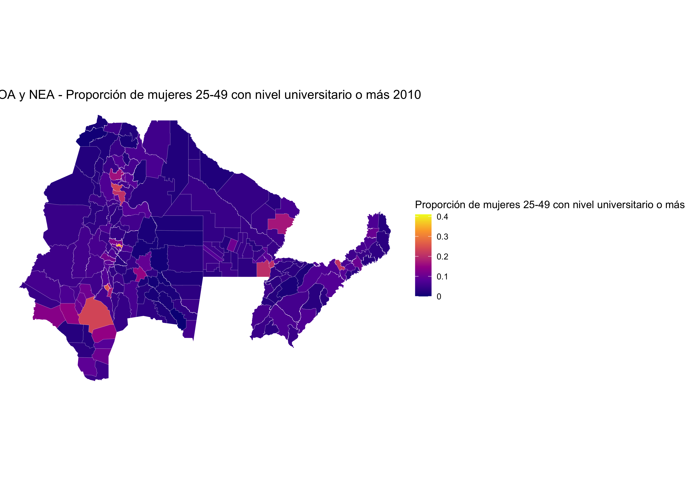

6.4.5.1.2 Censo 2022
En 2022, la relación con Paridez media final (40-44) es inversa y de magnitud alta. Las medidas bivariadas son coherentes entre sí: Pearson = -0,706, Spearman = -0,820 y beta estandarizado = -0,706. El ajuste lineal simple alcanza un R² ajustado de 0,496. El Moran de residuos queda en 0,285, con una reducción de 0,164 puntos respecto del Moran del resultado; por eso esta covariable absorbe una fracción apreciable de la estructura espacial regional. Tomando como referencia el cuartil superior e inferior de los valores observados en la región, los valores relativamente altos aparecen con mayor frecuencia en La Rioja, Tucuman, Chaco, mientras que los relativamente bajos lo hacen en Santiago del Estero, Chaco, Corrientes. En el mapa LISA, los núcleos Alto-Alto aparecen especialmente en La Rioja, Tucuman, Jujuy, mientras que los núcleos Bajo-Bajo se concentran sobre todo en Santiago del Estero, Chaco. Esta lectura se refiere únicamente a las unidades con asociación local estadísticamente significativa.
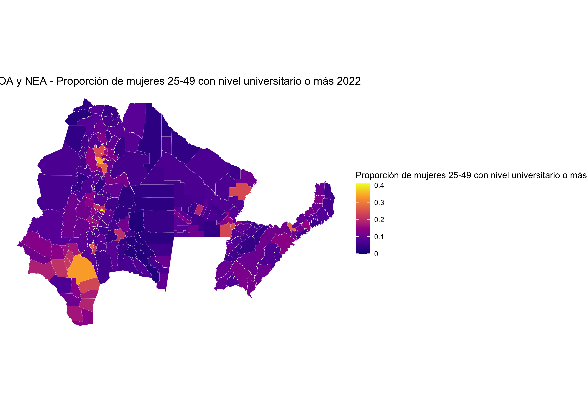
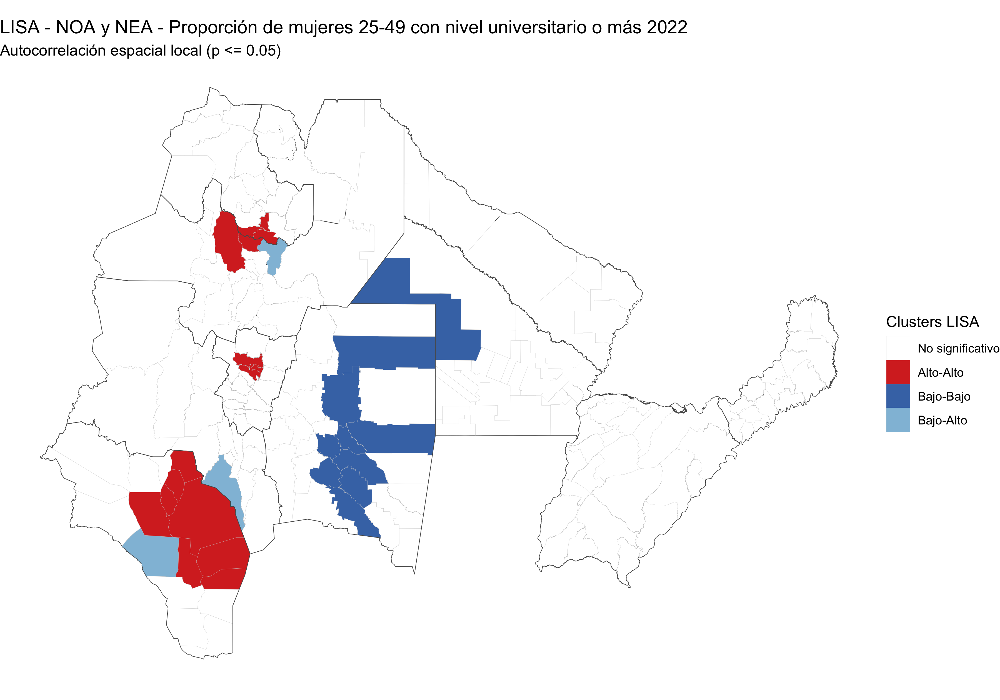
6.4.5.2 Proporción de mujeres 25-49 con nivel educativo bajo
| Censo | Dirección | Pearson | Spearman | Beta estandarizado | R² ajustado | Moran covariable | Moran de residuos | Reducción Moran |
|---|---|---|---|---|---|---|---|---|
| 2010 | Directa | 0.742 | 0.742 | 0.742 | 0.549 | 0.508 | 0.386 | 0.025 |
| 2022 | Directa | 0.754 | 0.796 | 0.754 | 0.566 | 0.614 | 0.371 | 0.078 |
6.4.5.2.1 Censo 2010
En 2010, la relación con Paridez media final (40-44) es directa y de magnitud alta. Las medidas bivariadas son coherentes entre sí: Pearson = 0,742, Spearman = 0,742 y beta estandarizado = 0,742. El ajuste lineal simple alcanza un R² ajustado de 0,549. El Moran de residuos queda en 0,386, con una reducción de 0,025 puntos respecto del Moran del resultado; por eso esta covariable absorbe una fracción más bien acotada de la estructura espacial regional. Tomando como referencia el cuartil superior e inferior de los valores observados en la región, los valores relativamente altos aparecen con mayor frecuencia en Santiago del Estero, Misiones, Chaco, mientras que los relativamente bajos lo hacen en La Rioja, Salta, Catamarca. En el mapa LISA, los núcleos Alto-Alto aparecen especialmente en Santiago del Estero, Jujuy, Misiones, mientras que los núcleos Bajo-Bajo se concentran sobre todo en La Rioja, Salta, Jujuy. Esta lectura se refiere únicamente a las unidades con asociación local estadísticamente significativa.
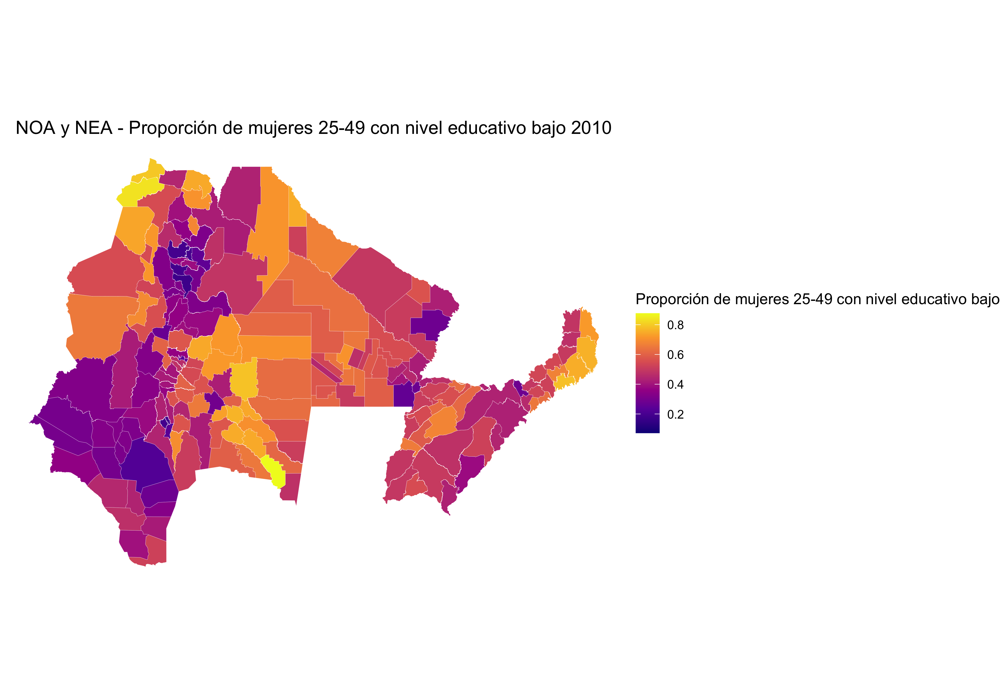

6.4.5.2.2 Censo 2022
En 2022, la relación con Paridez media final (40-44) es directa y de magnitud alta. Las medidas bivariadas son coherentes entre sí: Pearson = 0,754, Spearman = 0,796 y beta estandarizado = 0,754. El ajuste lineal simple alcanza un R² ajustado de 0,566. El Moran de residuos queda en 0,371, con una reducción de 0,078 puntos respecto del Moran del resultado; por eso esta covariable absorbe una fracción más bien acotada de la estructura espacial regional. Tomando como referencia el cuartil superior e inferior de los valores observados en la región, los valores relativamente altos aparecen con mayor frecuencia en Santiago del Estero, Misiones, Chaco, mientras que los relativamente bajos lo hacen en La Rioja, Salta, Catamarca. En el mapa LISA, los núcleos Alto-Alto aparecen especialmente en Santiago del Estero, Misiones, Chaco, mientras que los núcleos Bajo-Bajo se concentran sobre todo en La Rioja, Salta, Jujuy. Esta lectura se refiere únicamente a las unidades con asociación local estadísticamente significativa.
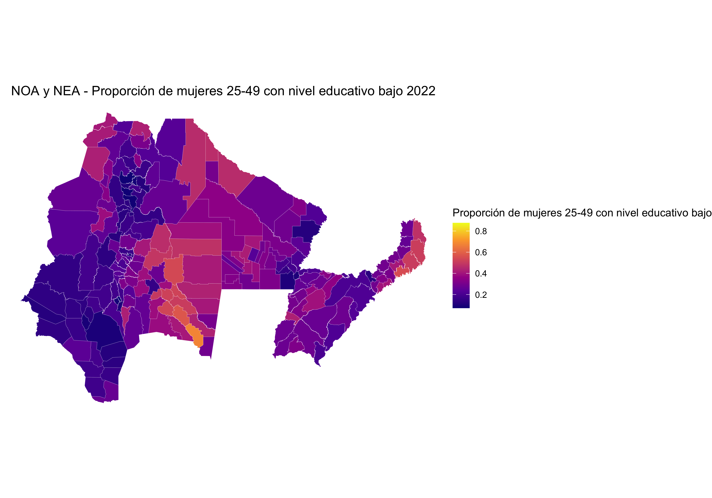
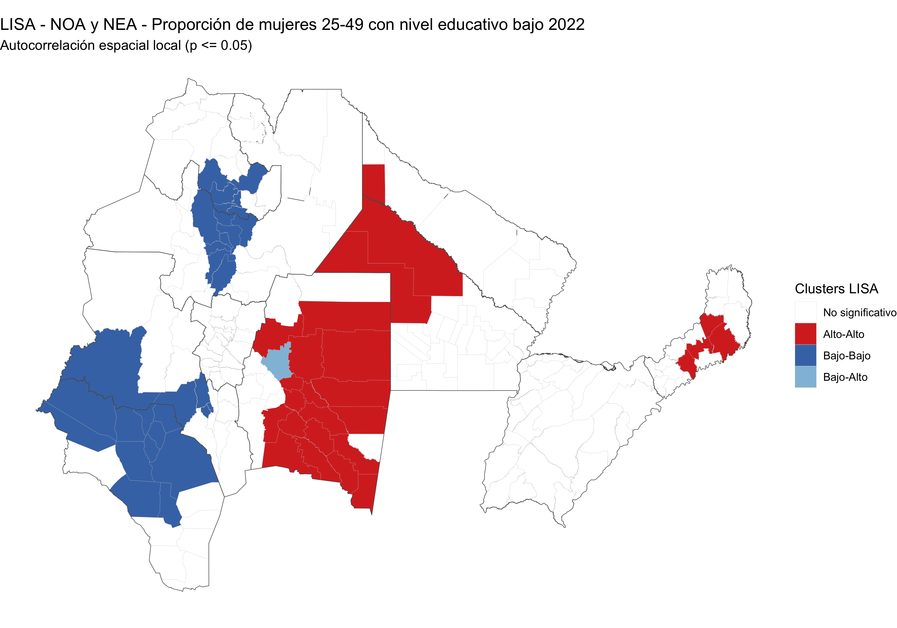
6.4.5.3 Proporción de mujeres 25-49 económicamente activas
| Censo | Dirección | Pearson | Spearman | Beta estandarizado | R² ajustado | Moran covariable | Moran de residuos | Reducción Moran |
|---|---|---|---|---|---|---|---|---|
| 2010 | Inversa | -0.600 | -0.666 | -0.600 | 0.357 | 0.516 | 0.505 | -0.094 |
| 2022 | Inversa | -0.637 | -0.685 | -0.637 | 0.403 | 0.583 | 0.451 | -0.001 |
6.4.5.3.1 Censo 2010
En 2010, la relación con Paridez media final (40-44) es inversa y de magnitud moderada-alta. Las medidas bivariadas son coherentes entre sí: Pearson = -0,600, Spearman = -0,666 y beta estandarizado = -0,600. El ajuste lineal simple alcanza un R² ajustado de 0,357. El Moran de residuos queda en 0,505, con una reducción de -0,094 puntos respecto del Moran del resultado; por eso esta covariable absorbe una fracción más bien acotada de la estructura espacial regional. Tomando como referencia el cuartil superior e inferior de los valores observados en la región, los valores relativamente altos aparecen con mayor frecuencia en La Rioja, Catamarca, Jujuy, mientras que los relativamente bajos lo hacen en Santiago del Estero, Chaco, Corrientes. En el mapa LISA, los núcleos Alto-Alto aparecen especialmente en La Rioja, Catamarca, Jujuy, mientras que los núcleos Bajo-Bajo se concentran sobre todo en Santiago del Estero, Corrientes, Chaco. Esta lectura se refiere únicamente a las unidades con asociación local estadísticamente significativa.
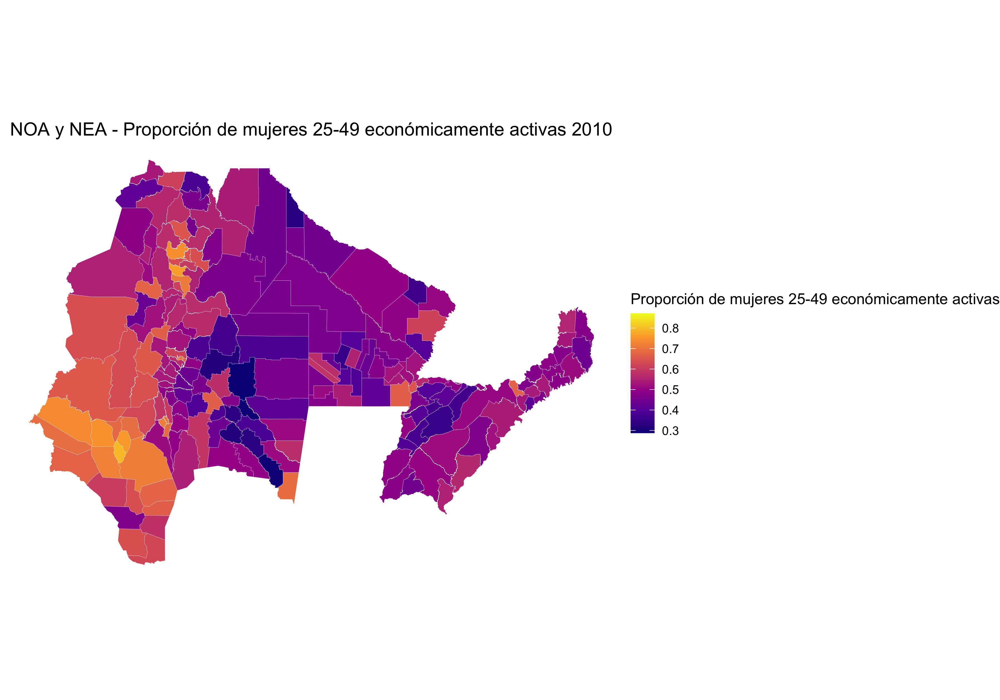

6.4.5.3.2 Censo 2022
En 2022, la relación con Paridez media final (40-44) es inversa y de magnitud moderada-alta. Las medidas bivariadas son coherentes entre sí: Pearson = -0,637, Spearman = -0,685 y beta estandarizado = -0,637. El ajuste lineal simple alcanza un R² ajustado de 0,403. El Moran de residuos queda en 0,451, con una reducción de -0,001 puntos respecto del Moran del resultado; por eso esta covariable absorbe una fracción más bien acotada de la estructura espacial regional. Tomando como referencia el cuartil superior e inferior de los valores observados en la región, los valores relativamente altos aparecen con mayor frecuencia en La Rioja, Catamarca, Jujuy, mientras que los relativamente bajos lo hacen en Santiago del Estero, Corrientes, Chaco. En el mapa LISA, los núcleos Alto-Alto aparecen especialmente en La Rioja, Catamarca, Salta, mientras que los núcleos Bajo-Bajo se concentran sobre todo en Santiago del Estero, Corrientes, Formosa. Esta lectura se refiere únicamente a las unidades con asociación local estadísticamente significativa.

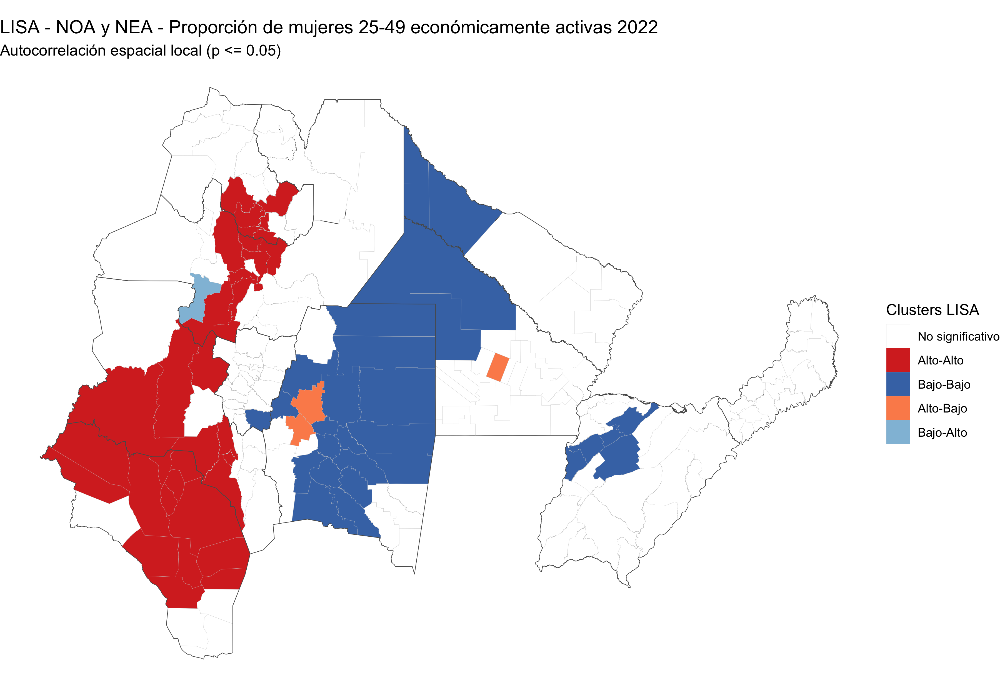
6.4.5.4 Proporción de mujeres 25-49 ocupadas
| Censo | Dirección | Pearson | Spearman | Beta estandarizado | R² ajustado | Moran covariable | Moran de residuos | Reducción Moran |
|---|---|---|---|---|---|---|---|---|
| 2010 | Inversa | -0.563 | -0.623 | -0.563 | 0.313 | 0.496 | 0.488 | -0.077 |
| 2022 | Inversa | -0.588 | -0.633 | -0.588 | 0.342 | 0.580 | 0.456 | -0.007 |
6.4.5.4.1 Censo 2010
En 2010, la relación con Paridez media final (40-44) es inversa y de magnitud moderada-alta. Las medidas bivariadas son coherentes entre sí: Pearson = -0,563, Spearman = -0,623 y beta estandarizado = -0,563. El ajuste lineal simple alcanza un R² ajustado de 0,313. El Moran de residuos queda en 0,488, con una reducción de -0,077 puntos respecto del Moran del resultado; por eso esta covariable absorbe una fracción más bien acotada de la estructura espacial regional. Tomando como referencia el cuartil superior e inferior de los valores observados en la región, los valores relativamente altos aparecen con mayor frecuencia en La Rioja, Catamarca, Jujuy, mientras que los relativamente bajos lo hacen en Santiago del Estero, Corrientes, Chaco. En el mapa LISA, los núcleos Alto-Alto aparecen especialmente en La Rioja, Catamarca, Jujuy, mientras que los núcleos Bajo-Bajo se concentran sobre todo en Santiago del Estero, Corrientes, Chaco. Esta lectura se refiere únicamente a las unidades con asociación local estadísticamente significativa.
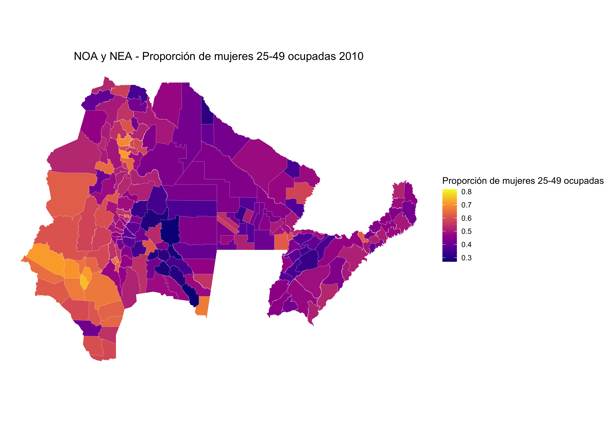

6.4.5.4.2 Censo 2022
En 2022, la relación con Paridez media final (40-44) es inversa y de magnitud moderada-alta. Las medidas bivariadas son coherentes entre sí: Pearson = -0,588, Spearman = -0,633 y beta estandarizado = -0,588. El ajuste lineal simple alcanza un R² ajustado de 0,342. El Moran de residuos queda en 0,456, con una reducción de -0,007 puntos respecto del Moran del resultado; por eso esta covariable absorbe una fracción más bien acotada de la estructura espacial regional. Tomando como referencia el cuartil superior e inferior de los valores observados en la región, los valores relativamente altos aparecen con mayor frecuencia en La Rioja, Catamarca, Jujuy, mientras que los relativamente bajos lo hacen en Santiago del Estero, Corrientes, Chaco. En el mapa LISA, los núcleos Alto-Alto aparecen especialmente en La Rioja, Catamarca, Jujuy, mientras que los núcleos Bajo-Bajo se concentran sobre todo en Santiago del Estero, Corrientes, Chaco. Esta lectura se refiere únicamente a las unidades con asociación local estadísticamente significativa.
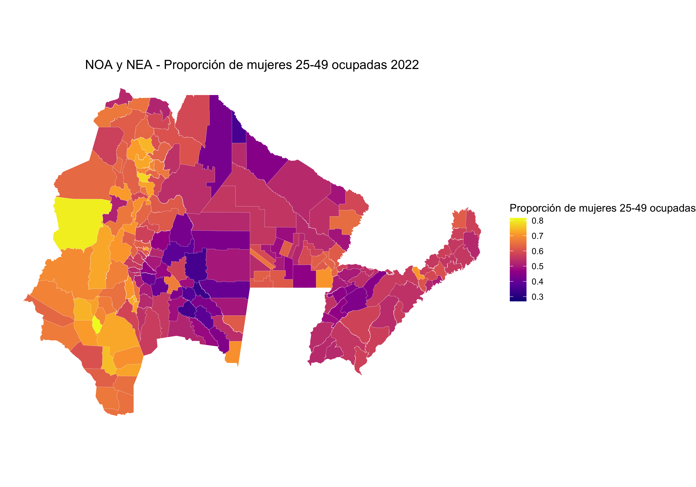

6.4.5.5 Proporción de mujeres 15-49 con cobertura de salud
| Censo | Dirección | Pearson | Spearman | Beta estandarizado | R² ajustado | Moran covariable | Moran de residuos | Reducción Moran |
|---|---|---|---|---|---|---|---|---|
| 2010 | Inversa | -0.502 | -0.538 | -0.502 | 0.248 | 0.675 | 0.377 | 0.034 |
| 2022 | Inversa | -0.548 | -0.599 | -0.548 | 0.297 | 0.595 | 0.320 | 0.129 |
6.4.5.5.1 Censo 2010
En 2010, la relación con Paridez media final (40-44) es inversa y de magnitud moderada-alta. Las medidas bivariadas son coherentes entre sí: Pearson = -0,502, Spearman = -0,538 y beta estandarizado = -0,502. El ajuste lineal simple alcanza un R² ajustado de 0,248. El Moran de residuos queda en 0,377, con una reducción de 0,034 puntos respecto del Moran del resultado; por eso esta covariable absorbe una fracción más bien acotada de la estructura espacial regional. Tomando como referencia el cuartil superior e inferior de los valores observados en la región, los valores relativamente altos aparecen con mayor frecuencia en La Rioja, Catamarca, Misiones, mientras que los relativamente bajos lo hacen en Santiago del Estero, Chaco, Formosa. En el mapa LISA, los núcleos Alto-Alto aparecen especialmente en Catamarca, La Rioja, Tucuman, mientras que los núcleos Bajo-Bajo se concentran sobre todo en Chaco, Santiago del Estero, Formosa. Esta lectura se refiere únicamente a las unidades con asociación local estadísticamente significativa.
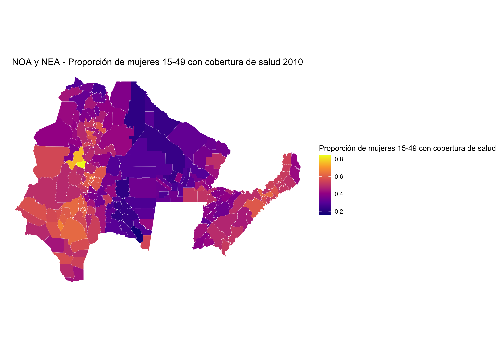

6.4.5.5.2 Censo 2022
En 2022, la relación con Paridez media final (40-44) es inversa y de magnitud moderada-alta. Las medidas bivariadas son coherentes entre sí: Pearson = -0,548, Spearman = -0,599 y beta estandarizado = -0,548. El ajuste lineal simple alcanza un R² ajustado de 0,297. El Moran de residuos queda en 0,320, con una reducción de 0,129 puntos respecto del Moran del resultado; por eso esta covariable absorbe una fracción más bien acotada de la estructura espacial regional. Tomando como referencia el cuartil superior e inferior de los valores observados en la región, los valores relativamente altos aparecen con mayor frecuencia en Tucuman, La Rioja, Catamarca, mientras que los relativamente bajos lo hacen en Santiago del Estero, Chaco, Formosa. En el mapa LISA, los núcleos Alto-Alto aparecen especialmente en Tucuman, Catamarca, Chaco, mientras que los núcleos Bajo-Bajo se concentran sobre todo en Santiago del Estero, Chaco, Formosa. Esta lectura se refiere únicamente a las unidades con asociación local estadísticamente significativa.
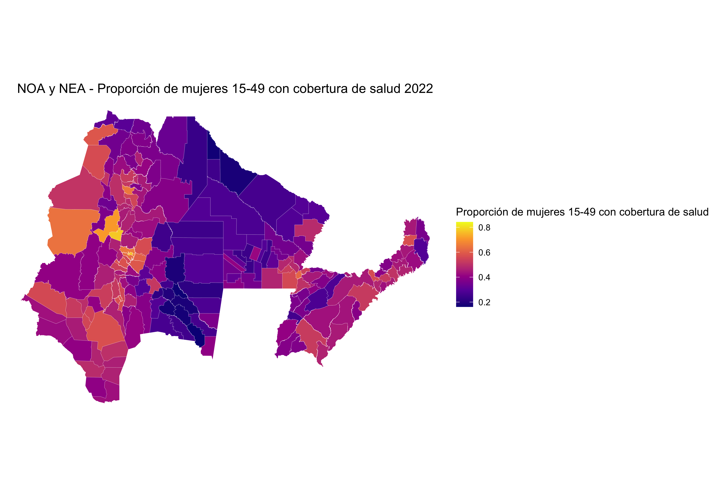
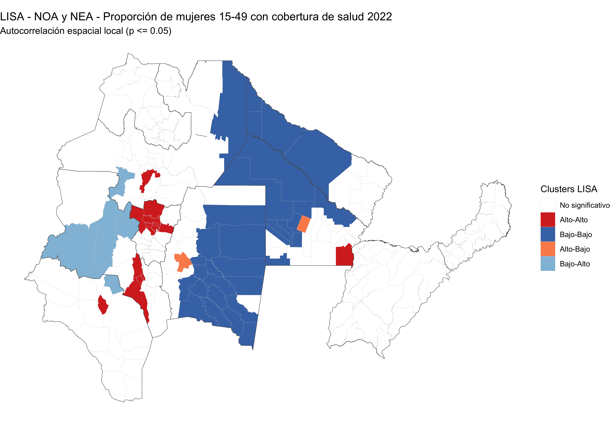
6.4.5.6 Índice de privación estructural armonizado
| Censo | Dirección | Pearson | Spearman | Beta estandarizado | R² ajustado | Moran covariable | Moran de residuos | Reducción Moran |
|---|---|---|---|---|---|---|---|---|
| 2010 | Directa | 0.716 | 0.735 | 0.716 | 0.510 | 0.572 | 0.369 | 0.042 |
| 2022 | Directa | 0.686 | 0.721 | 0.686 | 0.468 | 0.626 | 0.347 | 0.102 |
6.4.5.6.1 Censo 2010
En 2010, la relación con Paridez media final (40-44) es directa y de magnitud alta. Las medidas bivariadas son coherentes entre sí: Pearson = 0,716, Spearman = 0,735 y beta estandarizado = 0,716. El ajuste lineal simple alcanza un R² ajustado de 0,510. El Moran de residuos queda en 0,369, con una reducción de 0,042 puntos respecto del Moran del resultado; por eso esta covariable absorbe una fracción más bien acotada de la estructura espacial regional. Tomando como referencia el cuartil superior e inferior de los valores observados en la región, los valores relativamente altos aparecen con mayor frecuencia en Santiago del Estero, Chaco, Formosa, mientras que los relativamente bajos lo hacen en La Rioja, Catamarca, Corrientes. En el mapa LISA, los núcleos Alto-Alto aparecen especialmente en Santiago del Estero, Chaco, Formosa, mientras que los núcleos Bajo-Bajo se concentran sobre todo en La Rioja, Catamarca, Corrientes. Esta lectura se refiere únicamente a las unidades con asociación local estadísticamente significativa.
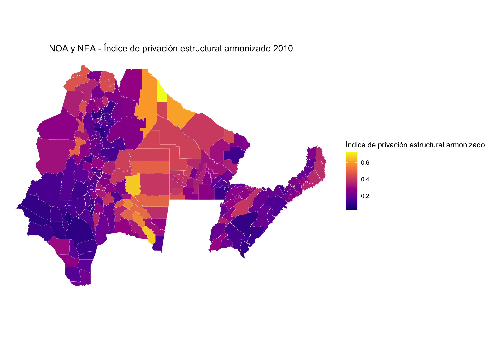

6.4.5.6.2 Censo 2022
En 2022, la relación con Paridez media final (40-44) es directa y de magnitud alta. Las medidas bivariadas son coherentes entre sí: Pearson = 0,686, Spearman = 0,721 y beta estandarizado = 0,686. El ajuste lineal simple alcanza un R² ajustado de 0,468. El Moran de residuos queda en 0,347, con una reducción de 0,102 puntos respecto del Moran del resultado; por eso esta covariable absorbe una fracción más bien acotada de la estructura espacial regional. Tomando como referencia el cuartil superior e inferior de los valores observados en la región, los valores relativamente altos aparecen con mayor frecuencia en Santiago del Estero, Chaco, Formosa, mientras que los relativamente bajos lo hacen en La Rioja, Catamarca, Corrientes. En el mapa LISA, los núcleos Alto-Alto aparecen especialmente en Santiago del Estero, Chaco, Formosa, mientras que los núcleos Bajo-Bajo se concentran sobre todo en Catamarca, La Rioja, Corrientes. Esta lectura se refiere únicamente a las unidades con asociación local estadísticamente significativa.


6.4.5.7 Proporción de mujeres 15-49 en hogares con computadora
| Censo | Dirección | Pearson | Spearman | Beta estandarizado | R² ajustado | Moran covariable | Moran de residuos | Reducción Moran |
|---|---|---|---|---|---|---|---|---|
| 2010 | Inversa | -0.741 | -0.788 | -0.741 | 0.546 | 0.459 | 0.400 | 0.011 |
| 2022 | Inversa | -0.743 | -0.766 | -0.743 | 0.549 | 0.537 | 0.337 | 0.112 |
6.4.5.7.1 Censo 2010
En 2010, la relación con Paridez media final (40-44) es inversa y de magnitud alta. Las medidas bivariadas son coherentes entre sí: Pearson = -0,741, Spearman = -0,788 y beta estandarizado = -0,741. El ajuste lineal simple alcanza un R² ajustado de 0,546. El Moran de residuos queda en 0,400, con una reducción de 0,011 puntos respecto del Moran del resultado; por eso esta covariable absorbe una fracción más bien acotada de la estructura espacial regional. Tomando como referencia el cuartil superior e inferior de los valores observados en la región, los valores relativamente altos aparecen con mayor frecuencia en La Rioja, Corrientes, Catamarca, mientras que los relativamente bajos lo hacen en Santiago del Estero, Salta, Chaco. En el mapa LISA, los núcleos Alto-Alto aparecen especialmente en La Rioja, Tucuman, Catamarca, mientras que los núcleos Bajo-Bajo se concentran sobre todo en Santiago del Estero, Chaco, Formosa. Esta lectura se refiere únicamente a las unidades con asociación local estadísticamente significativa.
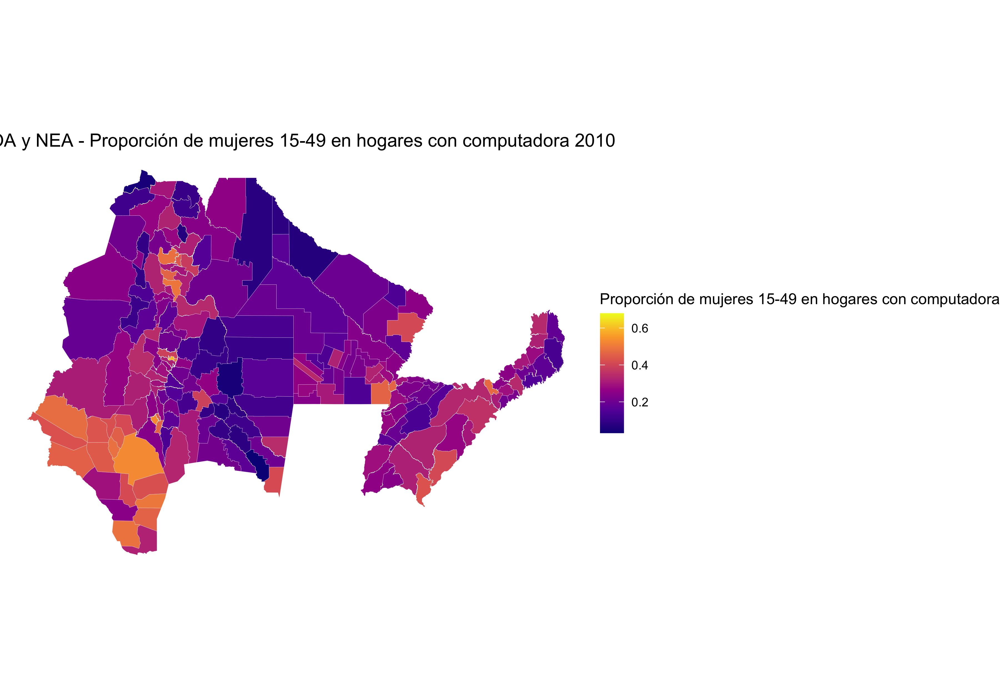

6.4.5.7.2 Censo 2022
En 2022, la relación con Paridez media final (40-44) es inversa y de magnitud alta. Las medidas bivariadas son coherentes entre sí: Pearson = -0,743, Spearman = -0,766 y beta estandarizado = -0,743. El ajuste lineal simple alcanza un R² ajustado de 0,549. El Moran de residuos queda en 0,337, con una reducción de 0,112 puntos respecto del Moran del resultado; por eso esta covariable absorbe una fracción más bien acotada de la estructura espacial regional. Tomando como referencia el cuartil superior e inferior de los valores observados en la región, los valores relativamente altos aparecen con mayor frecuencia en La Rioja, Salta, Chaco, mientras que los relativamente bajos lo hacen en Santiago del Estero, Corrientes, Jujuy. En el mapa LISA, los núcleos Alto-Alto aparecen especialmente en La Rioja, Salta, Catamarca, mientras que los núcleos Bajo-Bajo se concentran sobre todo en Santiago del Estero, Formosa, Jujuy. Esta lectura se refiere únicamente a las unidades con asociación local estadísticamente significativa.

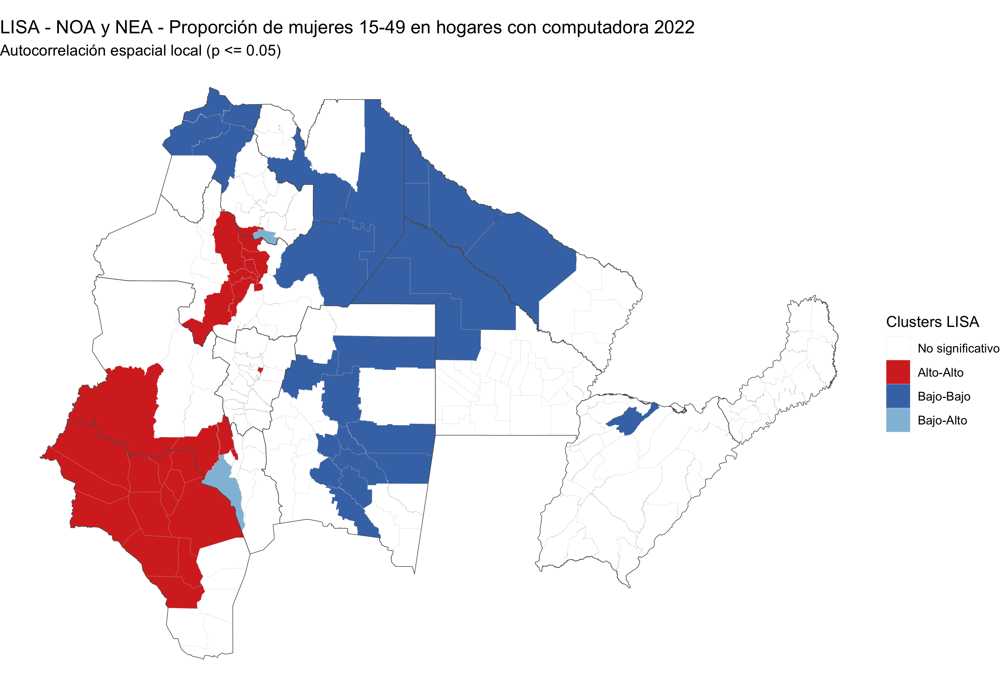
6.4.5.8 Proporción de mujeres 15-49 en áreas rurales
| Censo | Dirección | Pearson | Spearman | Beta estandarizado | R² ajustado | Moran covariable | Moran de residuos | Reducción Moran |
|---|---|---|---|---|---|---|---|---|
| 2010 | Directa | 0.534 | 0.555 | 0.534 | 0.282 | 0.087 | 0.417 | -0.006 |
| 2022 | Directa | 0.468 | 0.495 | 0.468 | 0.215 | 0.140 | 0.501 | -0.052 |
6.4.5.8.1 Censo 2010
En 2010, la relación con Paridez media final (40-44) es directa y de magnitud moderada-alta. Las medidas bivariadas son coherentes entre sí: Pearson = 0,534, Spearman = 0,555 y beta estandarizado = 0,534. El ajuste lineal simple alcanza un R² ajustado de 0,282. El Moran de residuos queda en 0,417, con una reducción de -0,006 puntos respecto del Moran del resultado; por eso esta covariable absorbe una fracción más bien acotada de la estructura espacial regional. Tomando como referencia el cuartil superior e inferior de los valores observados en la región, los valores relativamente altos aparecen con mayor frecuencia en Santiago del Estero, Salta, Catamarca, mientras que los relativamente bajos lo hacen en Salta, Chaco, La Rioja. En el mapa LISA, los núcleos Alto-Alto aparecen especialmente en Catamarca, Santiago del Estero, mientras que los núcleos Bajo-Bajo se concentran sobre todo en Chaco, Jujuy, Salta. Esta lectura se refiere únicamente a las unidades con asociación local estadísticamente significativa.


6.4.5.8.2 Censo 2022
En 2022, la relación con Paridez media final (40-44) es directa y de magnitud moderada. Las medidas bivariadas son coherentes entre sí: Pearson = 0,468, Spearman = 0,495 y beta estandarizado = 0,468. El ajuste lineal simple alcanza un R² ajustado de 0,215. El Moran de residuos queda en 0,501, con una reducción de -0,052 puntos respecto del Moran del resultado; por eso esta covariable absorbe una fracción más bien acotada de la estructura espacial regional. Tomando como referencia el cuartil superior e inferior de los valores observados en la región, los valores relativamente altos aparecen con mayor frecuencia en Santiago del Estero, Catamarca, Jujuy, mientras que los relativamente bajos lo hacen en Chaco, Corrientes, La Rioja. En el mapa LISA, los núcleos Alto-Alto aparecen especialmente en Catamarca, Santiago del Estero, mientras que los núcleos Bajo-Bajo se concentran sobre todo en O’Higgins. Esta lectura se refiere únicamente a las unidades con asociación local estadísticamente significativa.
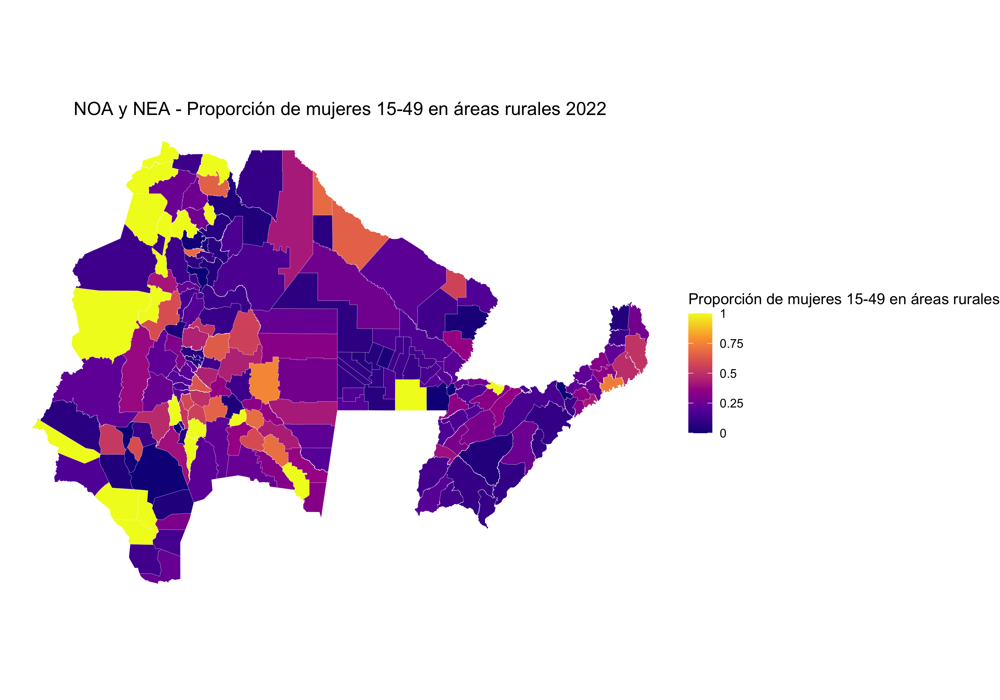
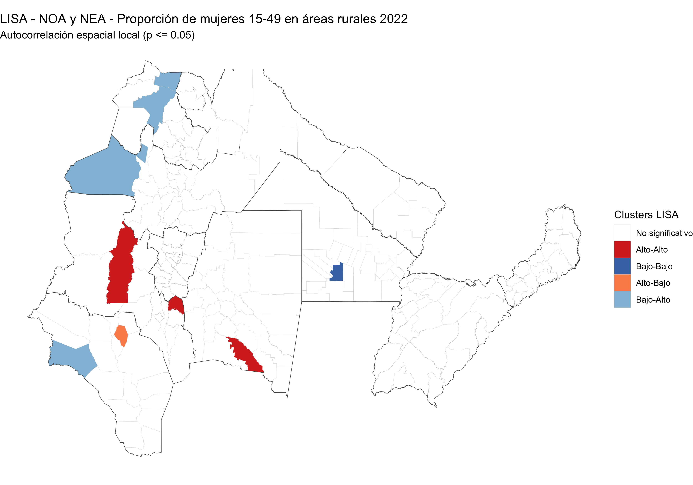
6.4.5.9 PBG per cápita provincial
| Censo | Dirección | Pearson | Spearman | Beta estandarizado | R² ajustado | Moran covariable | Moran de residuos | Reducción Moran |
|---|---|---|---|---|---|---|---|---|
| 2010 | Inversa | -0.083 | -0.078 | -0.083 | 0.002 | 0.850 | 0.405 | 0.006 |
| 2022 | Inversa | 0.033 | -0.058 | 0.033 | -0.004 | 0.868 | 0.448 | 0.001 |
6.4.5.9.1 Censo 2010
En 2010, la relación con Paridez media final (40-44) es inversa y de magnitud baja. Las medidas bivariadas son coherentes entre sí: Pearson = -0,083, Spearman = -0,078 y beta estandarizado = -0,083. El ajuste lineal simple alcanza un R² ajustado de 0,002. El Moran de residuos queda en 0,405, con una reducción de 0,006 puntos respecto del Moran del resultado; por eso esta covariable absorbe una fracción más bien acotada de la estructura espacial regional. Tomando como referencia el cuartil superior e inferior de los valores observados en la región, los valores relativamente altos aparecen con mayor frecuencia en Santiago del Estero, La Rioja, Catamarca, mientras que los relativamente bajos lo hacen en Corrientes, Misiones, Formosa. En el mapa LISA, los núcleos Alto-Alto aparecen especialmente en Catamarca, La Rioja, Santiago del Estero, mientras que los núcleos Bajo-Bajo se concentran sobre todo en Misiones, Corrientes, Formosa. Esta lectura se refiere únicamente a las unidades con asociación local estadísticamente significativa.
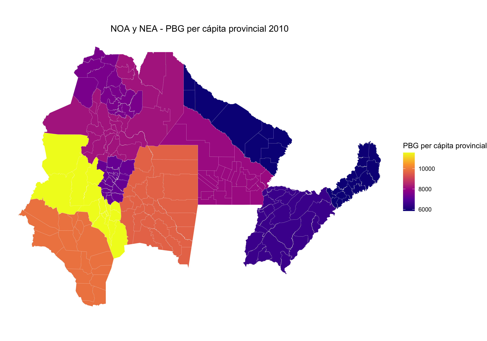

6.4.5.9.2 Censo 2022
En 2022, la relación con Paridez media final (40-44) es inversa y de magnitud baja. Las medidas bivariadas son coherentes entre sí: Pearson = 0,033, Spearman = -0,058 y beta estandarizado = 0,033. El ajuste lineal simple alcanza un R² ajustado de -0,004. El Moran de residuos queda en 0,448, con una reducción de 0,001 puntos respecto del Moran del resultado; por eso esta covariable absorbe una fracción más bien acotada de la estructura espacial regional. Tomando como referencia el cuartil superior e inferior de los valores observados en la región, los valores relativamente altos aparecen con mayor frecuencia en Santiago del Estero, La Rioja, Catamarca, mientras que los relativamente bajos lo hacen en Corrientes, Misiones, Formosa. En el mapa LISA, los núcleos Alto-Alto aparecen especialmente en Santiago del Estero, Chaco, Catamarca, mientras que los núcleos Bajo-Bajo se concentran sobre todo en Corrientes, Misiones, Formosa. Esta lectura se refiere únicamente a las unidades con asociación local estadísticamente significativa.


6.4.5.10 Índice socioeconómico compuesto
| Censo | Dirección | Pearson | Spearman | Beta estandarizado | R² ajustado | Moran covariable | Moran de residuos | Reducción Moran |
|---|---|---|---|---|---|---|---|---|
| 2010 | Inversa | -0.729 | -0.751 | -0.729 | 0.529 | 0.582 | 0.412 | -0.001 |
| 2022 | Inversa | -0.758 | -0.787 | -0.758 | 0.572 | 0.614 | 0.319 | 0.130 |
6.4.5.10.1 Censo 2010
En 2010, la relación con Paridez media final (40-44) es inversa y de magnitud alta. Las medidas bivariadas son coherentes entre sí: Pearson = -0,729, Spearman = -0,751 y beta estandarizado = -0,729. El ajuste lineal simple alcanza un R² ajustado de 0,529. El Moran de residuos queda en 0,412, con una reducción de -0,001 puntos respecto del Moran del resultado; por eso esta covariable absorbe una fracción más bien acotada de la estructura espacial regional. Tomando como referencia el cuartil superior e inferior de los valores observados en la región, los valores relativamente altos aparecen con mayor frecuencia en La Rioja, Catamarca, Tucuman, mientras que los relativamente bajos lo hacen en Santiago del Estero, Chaco, Formosa. En el mapa LISA, los núcleos Alto-Alto aparecen especialmente en La Rioja, Catamarca, Tucuman, mientras que los núcleos Bajo-Bajo se concentran sobre todo en Santiago del Estero, Chaco, Formosa. Esta lectura se refiere únicamente a las unidades con asociación local estadísticamente significativa.
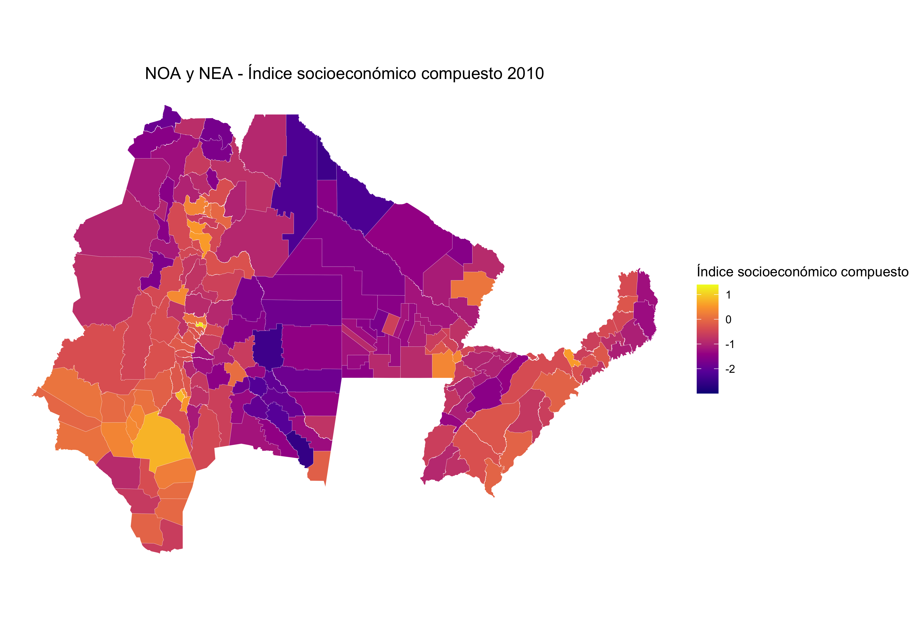
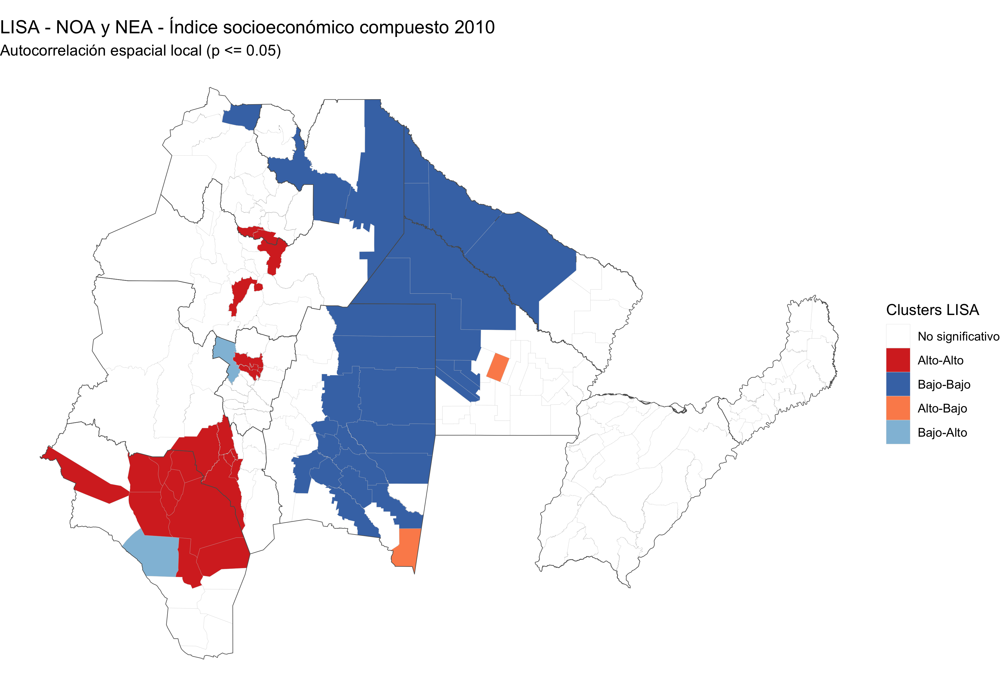
6.4.5.10.2 Censo 2022
En 2022, la relación con Paridez media final (40-44) es inversa y de magnitud alta. Las medidas bivariadas son coherentes entre sí: Pearson = -0,758, Spearman = -0,787 y beta estandarizado = -0,758. El ajuste lineal simple alcanza un R² ajustado de 0,572. El Moran de residuos queda en 0,319, con una reducción de 0,130 puntos respecto del Moran del resultado; por eso esta covariable absorbe una fracción más bien acotada de la estructura espacial regional. Tomando como referencia el cuartil superior e inferior de los valores observados en la región, los valores relativamente altos aparecen con mayor frecuencia en La Rioja, Catamarca, Corrientes, mientras que los relativamente bajos lo hacen en Santiago del Estero, Chaco, Formosa. En el mapa LISA, los núcleos Alto-Alto aparecen especialmente en La Rioja, Catamarca, Salta, mientras que los núcleos Bajo-Bajo se concentran sobre todo en Santiago del Estero, Chaco, Formosa. Esta lectura se refiere únicamente a las unidades con asociación local estadísticamente significativa.


7 Gran Buenos Aires
Se incluyen los partidos del GBA sin CABA. Se recalculan vecindades y Moran sólo sobre esos partidos.
En este recorte se excluyen algunas covariables por falta de sentido sustantivo o por escala de medición: PBG per cápita provincial.
7.1 Colinealidad entre covariables
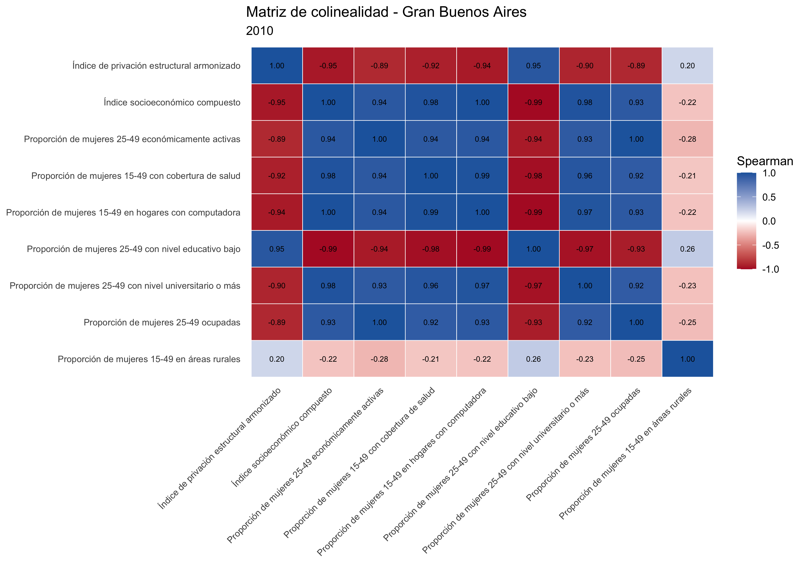
7.2 Panorama comparado de TGF y PMF 40-44
Antes de entrar en el detalle por resultado, conviene condensar qué covariables llegan mejor posicionadas en esta región cuando se comparan simultáneamente la fecundidad reciente (TGF) y la descendencia casi completada (PMF 40-44). La tabla siguiente no reemplaza el análisis posterior; funciona como mapa de lectura para no repetir, sin necesidad, la misma información en dos bloques enteros.
| Covariable | Familia | PMF 40-44 | TGF |
|---|---|---|---|
| Proporción de mujeres 15-49 con cobertura de salud | Salud y protección social | ρ=0,928; R²=0,824; ΔMoran=0,249 | ρ=0,874; R²=0,687; ΔMoran=0,200 |
| Proporción de mujeres 15-49 en hogares con computadora | Condiciones materiales | ρ=0,952; R²=0,879; ΔMoran=0,187 | ρ=0,877; R²=0,702; ΔMoran=0,230 |
| Proporción de mujeres 15-49 en áreas rurales | Contexto territorial | ρ=0,154; R²=-0,044; ΔMoran=-0,006 | ρ=0,113; R²=-0,039; ΔMoran=-0,006 |
| Proporción de mujeres 25-49 con nivel educativo bajo | Educación | ρ=0,947; R²=0,894; ΔMoran=0,269 | ρ=0,894; R²=0,755; ΔMoran=0,290 |
| Proporción de mujeres 25-49 con nivel universitario o más | Educación | ρ=0,922; R²=0,765; ΔMoran=0,240 | ρ=0,820; R²=0,552; ΔMoran=0,237 |
| Proporción de mujeres 25-49 económicamente activas | Mercado laboral | ρ=0,950; R²=0,905; ΔMoran=0,155 | ρ=0,863; R²=0,698; ΔMoran=0,185 |
| Proporción de mujeres 25-49 ocupadas | Mercado laboral | ρ=0,946; R²=0,897; ΔMoran=0,102 | ρ=0,849; R²=0,671; ΔMoran=0,181 |
| Índice de privación estructural armonizado | Pobreza estructural | ρ=0,931; R²=0,842; ΔMoran=0,314 | ρ=0,843; R²=0,695; ΔMoran=0,317 |
| Índice socioeconómico compuesto | Nivel socioeconómico | ρ=0,958; R²=0,869; ΔMoran=0,221 | ρ=0,884; R²=0,684; ΔMoran=0,261 |
7.3 Tasa global de fecundidad (TGF)
| Censo | Media | Mediana | Mínimo | Máximo | Unidades espaciales |
|---|---|---|---|---|---|
| 2010 | 2.615 | 2.629 | 2.107 | 3.391 | 24 |
| 2022 | 1.174 | 1.198 | 0.779 | 1.592 | 24 |
| Censo | Indicador | Moran I |
|---|---|---|
| 2010 | Tasa global de fecundidad (TGF) | 0.2811 |
| 2022 | Tasa global de fecundidad (TGF) | 0.3272 |
7.3.1 Mapas del resultado y LISA
7.3.2 Correlaciones y ajuste bivariado
| Covariable | Censo | Dirección | Pearson | Spearman | Beta estandarizado | R² ajustado | Moran covariable | Moran de residuos | Reducción Moran |
|---|---|---|---|---|---|---|---|---|---|
| Proporción de mujeres 25-49 con nivel universitario o más | 2010 | Inversa | -0.648 | -0.730 | -0.648 | 0.394 | 0.344 | 0.160 | 0.121 |
| Proporción de mujeres 25-49 con nivel educativo bajo | 2010 | Directa | 0.782 | 0.827 | 0.782 | 0.594 | 0.351 | 0.133 | 0.148 |
| Proporción de mujeres 25-49 económicamente activas | 2010 | Inversa | -0.708 | -0.766 | -0.708 | 0.479 | 0.501 | 0.233 | 0.048 |
| Proporción de mujeres 25-49 ocupadas | 2010 | Inversa | -0.696 | -0.737 | -0.696 | 0.460 | 0.508 | 0.240 | 0.041 |
| Proporción de mujeres 15-49 con cobertura de salud | 2010 | Inversa | -0.748 | -0.802 | -0.748 | 0.540 | 0.352 | 0.216 | 0.065 |
| Índice de privación estructural armonizado | 2010 | Directa | 0.740 | 0.772 | 0.740 | 0.527 | 0.372 | 0.068 | 0.213 |
| Proporción de mujeres 15-49 en hogares con computadora | 2010 | Inversa | -0.751 | -0.803 | -0.751 | 0.543 | 0.410 | 0.203 | 0.079 |
| Proporción de mujeres 15-49 en áreas rurales | 2010 | Directa | 0.110 | 0.169 | 0.110 | -0.033 | 0.193 | 0.294 | -0.013 |
| Índice socioeconómico compuesto | 2010 | Inversa | -0.730 | -0.807 | -0.730 | 0.511 | 0.384 | 0.170 | 0.111 |
| Proporción de mujeres 25-49 con nivel universitario o más | 2022 | Inversa | -0.850 | -0.910 | -0.850 | 0.710 | 0.302 | -0.026 | 0.353 |
| Proporción de mujeres 25-49 con nivel educativo bajo | 2022 | Directa | 0.959 | 0.961 | 0.959 | 0.915 | 0.328 | -0.105 | 0.432 |
| Proporción de mujeres 25-49 económicamente activas | 2022 | Inversa | -0.960 | -0.960 | -0.960 | 0.918 | 0.436 | 0.005 | 0.322 |
| Proporción de mujeres 25-49 ocupadas | 2022 | Inversa | -0.942 | -0.961 | -0.942 | 0.882 | 0.446 | 0.007 | 0.321 |
| Proporción de mujeres 15-49 con cobertura de salud | 2022 | Inversa | -0.917 | -0.946 | -0.917 | 0.834 | 0.372 | -0.007 | 0.334 |
| Índice de privación estructural armonizado | 2022 | Directa | 0.932 | 0.913 | 0.932 | 0.863 | 0.421 | -0.094 | 0.422 |
| Proporción de mujeres 15-49 en hogares con computadora | 2022 | Inversa | -0.931 | -0.951 | -0.931 | 0.860 | 0.369 | -0.054 | 0.381 |
| Proporción de mujeres 15-49 en áreas rurales | 2022 | Inversa | -0.008 | -0.058 | -0.008 | -0.045 | 0.184 | 0.325 | 0.002 |
| Índice socioeconómico compuesto | 2022 | Inversa | -0.929 | -0.961 | -0.929 | 0.857 | 0.378 | -0.083 | 0.410 |
7.3.3 Persistencia intercensal dentro de la región
| Covariable | Familia | Signo estable | Variación de la magnitud de Spearman | Cambio R² ajustado |
|---|---|---|---|---|
| Proporción de mujeres 25-49 con nivel universitario o más | Educación | Sí | 0.181 | 0.316 |
| Proporción de mujeres 25-49 con nivel educativo bajo | Educación | Sí | 0.134 | 0.321 |
| Proporción de mujeres 25-49 económicamente activas | Mercado laboral | Sí | 0.194 | 0.439 |
| Proporción de mujeres 25-49 ocupadas | Mercado laboral | Sí | 0.223 | 0.421 |
| Proporción de mujeres 15-49 con cobertura de salud | Salud y protección social | Sí | 0.144 | 0.294 |
| Índice de privación estructural armonizado | Pobreza estructural | Sí | 0.141 | 0.336 |
| Proporción de mujeres 15-49 en hogares con computadora | Condiciones materiales | Sí | 0.148 | 0.317 |
| Proporción de mujeres 15-49 en áreas rurales | Contexto territorial | No | 0.111 | 0.013 |
| Índice socioeconómico compuesto | Nivel socioeconómico | Sí | 0.154 | 0.345 |
7.3.4 Selección preliminar para Tasa global de fecundidad (TGF)
| Covariable | Familia | Magnitud media de Spearman | R² medio | Reducción Moran media | Signo estable | Variación de la magnitud de Spearman |
|---|---|---|---|---|---|---|
| Proporción de mujeres 25-49 con nivel educativo bajo | Educación | 0.894 | 0.755 | 0.290 | Sí | 0.134 |
| Índice socioeconómico compuesto | Nivel socioeconómico | 0.884 | 0.684 | 0.261 | Sí | 0.154 |
| Proporción de mujeres 15-49 en hogares con computadora | Condiciones materiales | 0.877 | 0.702 | 0.230 | Sí | 0.148 |
| Proporción de mujeres 15-49 con cobertura de salud | Salud y protección social | 0.874 | 0.687 | 0.200 | Sí | 0.144 |
| Proporción de mujeres 25-49 económicamente activas | Mercado laboral | 0.863 | 0.698 | 0.185 | Sí | 0.194 |
| Proporción de mujeres 25-49 ocupadas | Mercado laboral | 0.849 | 0.671 | 0.181 | Sí | 0.223 |
| Índice de privación estructural armonizado | Pobreza estructural | 0.843 | 0.695 | 0.317 | Sí | 0.141 |
| Proporción de mujeres 25-49 con nivel universitario o más | Educación | 0.820 | 0.552 | 0.237 | Sí | 0.181 |
| Proporción de mujeres 15-49 en áreas rurales | Contexto territorial | 0.113 | -0.039 | -0.006 | No | 0.111 |
7.3.5 Lectura variable por variable
7.3.5.1 Proporción de mujeres 25-49 con nivel universitario o más
| Censo | Dirección | Pearson | Spearman | Beta estandarizado | R² ajustado | Moran covariable | Moran de residuos | Reducción Moran |
|---|---|---|---|---|---|---|---|---|
| 2010 | Inversa | -0.648 | -0.73 | -0.648 | 0.394 | 0.344 | 0.160 | 0.121 |
| 2022 | Inversa | -0.850 | -0.91 | -0.850 | 0.710 | 0.302 | -0.026 | 0.353 |
7.3.5.1.1 Censo 2010
En 2010, la relación con Tasa global de fecundidad (TGF) es inversa y de magnitud alta. Las medidas bivariadas son coherentes entre sí: Pearson = -0,648, Spearman = -0,730 y beta estandarizado = -0,648. El ajuste lineal simple alcanza un R² ajustado de 0,394. El Moran de residuos queda en 0,160, con una reducción de 0,121 puntos respecto del Moran del resultado; por eso esta covariable absorbe una fracción más bien acotada de la estructura espacial regional. Tomando como referencia el cuartil superior e inferior de los valores observados en la región, los valores relativamente altos aparecen con mayor frecuencia en Avellaneda, Ituzaingí, Morín, mientras que los relativamente bajos lo hacen en Ezeiza, Florencio Varela, Josí C. Paz. En el mapa LISA, los núcleos Alto-Alto aparecen especialmente en San Isidro, Vicente Lípez, mientras que no se detectan núcleos Bajo-Bajo significativos. Esta lectura se refiere únicamente a las unidades con asociación local estadísticamente significativa.

7.3.5.1.2 Censo 2022
En 2022, la relación con Tasa global de fecundidad (TGF) es inversa y de magnitud alta. Las medidas bivariadas son coherentes entre sí: Pearson = -0,850, Spearman = -0,910 y beta estandarizado = -0,850. El ajuste lineal simple alcanza un R² ajustado de 0,710. El Moran de residuos queda en -0,026, con una reducción de 0,353 puntos respecto del Moran del resultado; por eso esta covariable absorbe una fracción apreciable de la estructura espacial regional. Tomando como referencia el cuartil superior e inferior de los valores observados en la región, los valores relativamente altos aparecen con mayor frecuencia en Hurlingham, Ituzaingˇ, Morón, mientras que los relativamente bajos lo hacen en Ezeiza, Florencio Varela, Josť C. Paz. En el mapa LISA, no se detectan núcleos Alto-Alto significativos, mientras que no se detectan núcleos Bajo-Bajo significativos. Esta lectura se refiere únicamente a las unidades con asociación local estadísticamente significativa.
7.3.5.2 Proporción de mujeres 25-49 con nivel educativo bajo
| Censo | Dirección | Pearson | Spearman | Beta estandarizado | R² ajustado | Moran covariable | Moran de residuos | Reducción Moran |
|---|---|---|---|---|---|---|---|---|
| 2010 | Directa | 0.782 | 0.827 | 0.782 | 0.594 | 0.351 | 0.133 | 0.148 |
| 2022 | Directa | 0.959 | 0.961 | 0.959 | 0.915 | 0.328 | -0.105 | 0.432 |
7.3.5.2.1 Censo 2010
En 2010, la relación con Tasa global de fecundidad (TGF) es directa y de magnitud alta. Las medidas bivariadas son coherentes entre sí: Pearson = 0,782, Spearman = 0,827 y beta estandarizado = 0,782. El ajuste lineal simple alcanza un R² ajustado de 0,594. El Moran de residuos queda en 0,133, con una reducción de 0,148 puntos respecto del Moran del resultado; por eso esta covariable absorbe una fracción más bien acotada de la estructura espacial regional. Tomando como referencia el cuartil superior e inferior de los valores observados en la región, los valores relativamente altos aparecen con mayor frecuencia en Ezeiza, Florencio Varela, Josí C. Paz, mientras que los relativamente bajos lo hacen en Avellaneda, Ituzaingí, Morín. En el mapa LISA, no se detectan núcleos Alto-Alto significativos, mientras que los núcleos Bajo-Bajo se concentran sobre todo en General San Martín. Esta lectura se refiere únicamente a las unidades con asociación local estadísticamente significativa.

7.3.5.2.2 Censo 2022
En 2022, la relación con Tasa global de fecundidad (TGF) es directa y de magnitud alta. Las medidas bivariadas son coherentes entre sí: Pearson = 0,959, Spearman = 0,961 y beta estandarizado = 0,959. El ajuste lineal simple alcanza un R² ajustado de 0,915. El Moran de residuos queda en -0,105, con una reducción de 0,432 puntos respecto del Moran del resultado; por eso esta covariable absorbe una fracción apreciable de la estructura espacial regional. Tomando como referencia el cuartil superior e inferior de los valores observados en la región, los valores relativamente altos aparecen con mayor frecuencia en Ezeiza, Florencio Varela, Josť C. Paz, mientras que los relativamente bajos lo hacen en Avellaneda, Ituzaingˇ, Morón. En el mapa LISA, no se detectan núcleos Alto-Alto significativos, mientras que los núcleos Bajo-Bajo se concentran sobre todo en General San Martín, Hurlingham. Esta lectura se refiere únicamente a las unidades con asociación local estadísticamente significativa.


7.3.5.3 Proporción de mujeres 25-49 económicamente activas
| Censo | Dirección | Pearson | Spearman | Beta estandarizado | R² ajustado | Moran covariable | Moran de residuos | Reducción Moran |
|---|---|---|---|---|---|---|---|---|
| 2010 | Inversa | -0.708 | -0.766 | -0.708 | 0.479 | 0.501 | 0.233 | 0.048 |
| 2022 | Inversa | -0.960 | -0.960 | -0.960 | 0.918 | 0.436 | 0.005 | 0.322 |
7.3.5.3.1 Censo 2010
En 2010, la relación con Tasa global de fecundidad (TGF) es inversa y de magnitud alta. Las medidas bivariadas son coherentes entre sí: Pearson = -0,708, Spearman = -0,766 y beta estandarizado = -0,708. El ajuste lineal simple alcanza un R² ajustado de 0,479. El Moran de residuos queda en 0,233, con una reducción de 0,048 puntos respecto del Moran del resultado; por eso esta covariable absorbe una fracción más bien acotada de la estructura espacial regional. Tomando como referencia el cuartil superior e inferior de los valores observados en la región, los valores relativamente altos aparecen con mayor frecuencia en Avellaneda, General San Martín, Lanís, mientras que los relativamente bajos lo hacen en Ezeiza, Florencio Varela, Josí C. Paz. En el mapa LISA, los núcleos Alto-Alto aparecen especialmente en General San Martín, San Isidro, Vicente Lípez, mientras que no se detectan núcleos Bajo-Bajo significativos. Esta lectura se refiere únicamente a las unidades con asociación local estadísticamente significativa.
7.3.5.3.2 Censo 2022
En 2022, la relación con Tasa global de fecundidad (TGF) es inversa y de magnitud alta. Las medidas bivariadas son coherentes entre sí: Pearson = -0,960, Spearman = -0,960 y beta estandarizado = -0,960. El ajuste lineal simple alcanza un R² ajustado de 0,918. El Moran de residuos queda en 0,005, con una reducción de 0,322 puntos respecto del Moran del resultado; por eso esta covariable absorbe una fracción apreciable de la estructura espacial regional. Tomando como referencia el cuartil superior e inferior de los valores observados en la región, los valores relativamente altos aparecen con mayor frecuencia en Avellaneda, General San Martín, Morón, mientras que los relativamente bajos lo hacen en Florencio Varela, Josť C. Paz, La Matanza. En el mapa LISA, los núcleos Alto-Alto aparecen especialmente en General San Martín, San Isidro, mientras que no se detectan núcleos Bajo-Bajo significativos. Esta lectura se refiere únicamente a las unidades con asociación local estadísticamente significativa.

7.3.5.4 Proporción de mujeres 25-49 ocupadas
| Censo | Dirección | Pearson | Spearman | Beta estandarizado | R² ajustado | Moran covariable | Moran de residuos | Reducción Moran |
|---|---|---|---|---|---|---|---|---|
| 2010 | Inversa | -0.696 | -0.737 | -0.696 | 0.460 | 0.508 | 0.240 | 0.041 |
| 2022 | Inversa | -0.942 | -0.961 | -0.942 | 0.882 | 0.446 | 0.007 | 0.321 |
7.3.5.4.1 Censo 2010
En 2010, la relación con Tasa global de fecundidad (TGF) es inversa y de magnitud alta. Las medidas bivariadas son coherentes entre sí: Pearson = -0,696, Spearman = -0,737 y beta estandarizado = -0,696. El ajuste lineal simple alcanza un R² ajustado de 0,460. El Moran de residuos queda en 0,240, con una reducción de 0,041 puntos respecto del Moran del resultado; por eso esta covariable absorbe una fracción más bien acotada de la estructura espacial regional. Tomando como referencia el cuartil superior e inferior de los valores observados en la región, los valores relativamente altos aparecen con mayor frecuencia en Avellaneda, General San Martín, Morín, mientras que los relativamente bajos lo hacen en Ezeiza, Florencio Varela, Josí C. Paz. En el mapa LISA, los núcleos Alto-Alto aparecen especialmente en General San Martín, San Isidro, Vicente Lípez, mientras que no se detectan núcleos Bajo-Bajo significativos. Esta lectura se refiere únicamente a las unidades con asociación local estadísticamente significativa.

7.3.5.4.2 Censo 2022
En 2022, la relación con Tasa global de fecundidad (TGF) es inversa y de magnitud alta. Las medidas bivariadas son coherentes entre sí: Pearson = -0,942, Spearman = -0,961 y beta estandarizado = -0,942. El ajuste lineal simple alcanza un R² ajustado de 0,882. El Moran de residuos queda en 0,007, con una reducción de 0,321 puntos respecto del Moran del resultado; por eso esta covariable absorbe una fracción apreciable de la estructura espacial regional. Tomando como referencia el cuartil superior e inferior de los valores observados en la región, los valores relativamente altos aparecen con mayor frecuencia en Avellaneda, Morón, San Fernando, mientras que los relativamente bajos lo hacen en Esteban Echeverrķa, Florencio Varela, Josť C. Paz. En el mapa LISA, los núcleos Alto-Alto aparecen especialmente en General San Martín, San Isidro, mientras que no se detectan núcleos Bajo-Bajo significativos. Esta lectura se refiere únicamente a las unidades con asociación local estadísticamente significativa.

7.3.5.5 Proporción de mujeres 15-49 con cobertura de salud
| Censo | Dirección | Pearson | Spearman | Beta estandarizado | R² ajustado | Moran covariable | Moran de residuos | Reducción Moran |
|---|---|---|---|---|---|---|---|---|
| 2010 | Inversa | -0.748 | -0.802 | -0.748 | 0.540 | 0.352 | 0.216 | 0.065 |
| 2022 | Inversa | -0.917 | -0.946 | -0.917 | 0.834 | 0.372 | -0.007 | 0.334 |
7.3.5.5.1 Censo 2010
En 2010, la relación con Tasa global de fecundidad (TGF) es inversa y de magnitud alta. Las medidas bivariadas son coherentes entre sí: Pearson = -0,748, Spearman = -0,802 y beta estandarizado = -0,748. El ajuste lineal simple alcanza un R² ajustado de 0,540. El Moran de residuos queda en 0,216, con una reducción de 0,065 puntos respecto del Moran del resultado; por eso esta covariable absorbe una fracción más bien acotada de la estructura espacial regional. Tomando como referencia el cuartil superior e inferior de los valores observados en la región, los valores relativamente altos aparecen con mayor frecuencia en Avellaneda, Ituzaingí, Lanís, mientras que los relativamente bajos lo hacen en Florencio Varela, Josí C. Paz, La Matanza. En el mapa LISA, los núcleos Alto-Alto aparecen especialmente en General San Martín, San Isidro, mientras que no se detectan núcleos Bajo-Bajo significativos. Esta lectura se refiere únicamente a las unidades con asociación local estadísticamente significativa.

7.3.5.5.2 Censo 2022
En 2022, la relación con Tasa global de fecundidad (TGF) es inversa y de magnitud alta. Las medidas bivariadas son coherentes entre sí: Pearson = -0,917, Spearman = -0,946 y beta estandarizado = -0,917. El ajuste lineal simple alcanza un R² ajustado de 0,834. El Moran de residuos queda en -0,007, con una reducción de 0,334 puntos respecto del Moran del resultado; por eso esta covariable absorbe una fracción apreciable de la estructura espacial regional. Tomando como referencia el cuartil superior e inferior de los valores observados en la región, los valores relativamente altos aparecen con mayor frecuencia en Ituzaingˇ, Lanús, Morón, mientras que los relativamente bajos lo hacen en Florencio Varela, Josť C. Paz, La Matanza. En el mapa LISA, los núcleos Alto-Alto aparecen especialmente en General San Martín, San Isidro, mientras que no se detectan núcleos Bajo-Bajo significativos. Esta lectura se refiere únicamente a las unidades con asociación local estadísticamente significativa.
7.3.5.6 Índice de privación estructural armonizado
| Censo | Dirección | Pearson | Spearman | Beta estandarizado | R² ajustado | Moran covariable | Moran de residuos | Reducción Moran |
|---|---|---|---|---|---|---|---|---|
| 2010 | Directa | 0.740 | 0.772 | 0.740 | 0.527 | 0.372 | 0.068 | 0.213 |
| 2022 | Directa | 0.932 | 0.913 | 0.932 | 0.863 | 0.421 | -0.094 | 0.422 |
7.3.5.6.1 Censo 2010
En 2010, la relación con Tasa global de fecundidad (TGF) es directa y de magnitud alta. Las medidas bivariadas son coherentes entre sí: Pearson = 0,740, Spearman = 0,772 y beta estandarizado = 0,740. El ajuste lineal simple alcanza un R² ajustado de 0,527. El Moran de residuos queda en 0,068, con una reducción de 0,213 puntos respecto del Moran del resultado; por eso esta covariable absorbe una fracción apreciable de la estructura espacial regional. Tomando como referencia el cuartil superior e inferior de los valores observados en la región, los valores relativamente altos aparecen con mayor frecuencia en Ezeiza, Florencio Varela, Josí C. Paz, mientras que los relativamente bajos lo hacen en Avellaneda, Morín, San Fernando. En el mapa LISA, no se detectan núcleos Alto-Alto significativos, mientras que los núcleos Bajo-Bajo se concentran sobre todo en General San Martín. Esta lectura se refiere únicamente a las unidades con asociación local estadísticamente significativa.

7.3.5.6.2 Censo 2022
En 2022, la relación con Tasa global de fecundidad (TGF) es directa y de magnitud alta. Las medidas bivariadas son coherentes entre sí: Pearson = 0,932, Spearman = 0,913 y beta estandarizado = 0,932. El ajuste lineal simple alcanza un R² ajustado de 0,863. El Moran de residuos queda en -0,094, con una reducción de 0,422 puntos respecto del Moran del resultado; por eso esta covariable absorbe una fracción apreciable de la estructura espacial regional. Tomando como referencia el cuartil superior e inferior de los valores observados en la región, los valores relativamente altos aparecen con mayor frecuencia en Ezeiza, Florencio Varela, Josť C. Paz, mientras que los relativamente bajos lo hacen en Avellaneda, Morón, San Fernando. En el mapa LISA, no se detectan núcleos Alto-Alto significativos, mientras que los núcleos Bajo-Bajo se concentran sobre todo en General San Martín. Esta lectura se refiere únicamente a las unidades con asociación local estadísticamente significativa.

7.3.5.7 Proporción de mujeres 15-49 en hogares con computadora
| Censo | Dirección | Pearson | Spearman | Beta estandarizado | R² ajustado | Moran covariable | Moran de residuos | Reducción Moran |
|---|---|---|---|---|---|---|---|---|
| 2010 | Inversa | -0.751 | -0.803 | -0.751 | 0.543 | 0.410 | 0.203 | 0.079 |
| 2022 | Inversa | -0.931 | -0.951 | -0.931 | 0.860 | 0.369 | -0.054 | 0.381 |
7.3.5.7.1 Censo 2010
En 2010, la relación con Tasa global de fecundidad (TGF) es inversa y de magnitud alta. Las medidas bivariadas son coherentes entre sí: Pearson = -0,751, Spearman = -0,803 y beta estandarizado = -0,751. El ajuste lineal simple alcanza un R² ajustado de 0,543. El Moran de residuos queda en 0,203, con una reducción de 0,079 puntos respecto del Moran del resultado; por eso esta covariable absorbe una fracción más bien acotada de la estructura espacial regional. Tomando como referencia el cuartil superior e inferior de los valores observados en la región, los valores relativamente altos aparecen con mayor frecuencia en Avellaneda, Ituzaingí, Lanís, mientras que los relativamente bajos lo hacen en Ezeiza, Florencio Varela, Josí C. Paz. En el mapa LISA, los núcleos Alto-Alto aparecen especialmente en General San Martín, San Isidro, Vicente Lípez, mientras que no se detectan núcleos Bajo-Bajo significativos. Esta lectura se refiere únicamente a las unidades con asociación local estadísticamente significativa.


7.3.5.7.2 Censo 2022
En 2022, la relación con Tasa global de fecundidad (TGF) es inversa y de magnitud alta. Las medidas bivariadas son coherentes entre sí: Pearson = -0,931, Spearman = -0,951 y beta estandarizado = -0,931. El ajuste lineal simple alcanza un R² ajustado de 0,860. El Moran de residuos queda en -0,054, con una reducción de 0,381 puntos respecto del Moran del resultado; por eso esta covariable absorbe una fracción apreciable de la estructura espacial regional. Tomando como referencia el cuartil superior e inferior de los valores observados en la región, los valores relativamente altos aparecen con mayor frecuencia en Avellaneda, Ituzaingˇ, Morón, mientras que los relativamente bajos lo hacen en Ezeiza, Florencio Varela, Josť C. Paz. En el mapa LISA, los núcleos Alto-Alto aparecen especialmente en General San Martín, San Isidro, mientras que no se detectan núcleos Bajo-Bajo significativos. Esta lectura se refiere únicamente a las unidades con asociación local estadísticamente significativa.
7.3.5.8 Proporción de mujeres 15-49 en áreas rurales
| Censo | Dirección | Pearson | Spearman | Beta estandarizado | R² ajustado | Moran covariable | Moran de residuos | Reducción Moran |
|---|---|---|---|---|---|---|---|---|
| 2010 | Directa | 0.110 | 0.169 | 0.110 | -0.033 | 0.193 | 0.294 | -0.013 |
| 2022 | Inversa | -0.008 | -0.058 | -0.008 | -0.045 | 0.184 | 0.325 | 0.002 |
7.3.5.8.1 Censo 2010
En 2010, la relación con Tasa global de fecundidad (TGF) es directa y de magnitud baja. Las medidas bivariadas son coherentes entre sí: Pearson = 0,110, Spearman = 0,169 y beta estandarizado = 0,110. El ajuste lineal simple alcanza un R² ajustado de -0,033. El Moran de residuos queda en 0,294, con una reducción de -0,013 puntos respecto del Moran del resultado; por eso esta covariable absorbe una fracción más bien acotada de la estructura espacial regional. Tomando como referencia el cuartil superior e inferior de los valores observados en la región, los valores relativamente altos aparecen con mayor frecuencia en Berazategui, Esteban Echeverría, Ezeiza, mientras que los relativamente bajos lo hacen en Almirante Brown, Avellaneda, Florencio Varela. En el mapa LISA, los núcleos Alto-Alto aparecen especialmente en San Fernando, mientras que no se detectan núcleos Bajo-Bajo significativos. Esta lectura se refiere únicamente a las unidades con asociación local estadísticamente significativa.
7.3.5.8.2 Censo 2022
En 2022, la relación con Tasa global de fecundidad (TGF) es inversa y de magnitud baja. Las medidas bivariadas son coherentes entre sí: Pearson = -0,008, Spearman = -0,058 y beta estandarizado = -0,008. El ajuste lineal simple alcanza un R² ajustado de -0,045. El Moran de residuos queda en 0,325, con una reducción de 0,002 puntos respecto del Moran del resultado; por eso esta covariable absorbe una fracción más bien acotada de la estructura espacial regional. Tomando como referencia el cuartil superior e inferior de los valores observados en la región, los valores relativamente altos aparecen con mayor frecuencia en Almirante Brown, Avellaneda, Berazategui, mientras que los relativamente bajos lo hacen en Almirante Brown, Avellaneda, Berazategui. En el mapa LISA, los núcleos Alto-Alto aparecen especialmente en San Fernando, mientras que no se detectan núcleos Bajo-Bajo significativos. Esta lectura se refiere únicamente a las unidades con asociación local estadísticamente significativa.

7.3.5.9 Índice socioeconómico compuesto
| Censo | Dirección | Pearson | Spearman | Beta estandarizado | R² ajustado | Moran covariable | Moran de residuos | Reducción Moran |
|---|---|---|---|---|---|---|---|---|
| 2010 | Inversa | -0.730 | -0.807 | -0.730 | 0.511 | 0.384 | 0.170 | 0.111 |
| 2022 | Inversa | -0.929 | -0.961 | -0.929 | 0.857 | 0.378 | -0.083 | 0.410 |
7.3.5.9.1 Censo 2010
En 2010, la relación con Tasa global de fecundidad (TGF) es inversa y de magnitud alta. Las medidas bivariadas son coherentes entre sí: Pearson = -0,730, Spearman = -0,807 y beta estandarizado = -0,730. El ajuste lineal simple alcanza un R² ajustado de 0,511. El Moran de residuos queda en 0,170, con una reducción de 0,111 puntos respecto del Moran del resultado; por eso esta covariable absorbe una fracción más bien acotada de la estructura espacial regional. Tomando como referencia el cuartil superior e inferior de los valores observados en la región, los valores relativamente altos aparecen con mayor frecuencia en Avellaneda, Ituzaingí, Morín, mientras que los relativamente bajos lo hacen en Ezeiza, Florencio Varela, Josí C. Paz. En el mapa LISA, los núcleos Alto-Alto aparecen especialmente en General San Martín, San Isidro, Vicente Lípez, mientras que no se detectan núcleos Bajo-Bajo significativos. Esta lectura se refiere únicamente a las unidades con asociación local estadísticamente significativa.

7.3.5.9.2 Censo 2022
En 2022, la relación con Tasa global de fecundidad (TGF) es inversa y de magnitud alta. Las medidas bivariadas son coherentes entre sí: Pearson = -0,929, Spearman = -0,961 y beta estandarizado = -0,929. El ajuste lineal simple alcanza un R² ajustado de 0,857. El Moran de residuos queda en -0,083, con una reducción de 0,410 puntos respecto del Moran del resultado; por eso esta covariable absorbe una fracción apreciable de la estructura espacial regional. Tomando como referencia el cuartil superior e inferior de los valores observados en la región, los valores relativamente altos aparecen con mayor frecuencia en Avellaneda, Ituzaingˇ, Morón, mientras que los relativamente bajos lo hacen en Ezeiza, Florencio Varela, Josť C. Paz. En el mapa LISA, los núcleos Alto-Alto aparecen especialmente en General San Martín, San Isidro, mientras que no se detectan núcleos Bajo-Bajo significativos. Esta lectura se refiere únicamente a las unidades con asociación local estadísticamente significativa.

7.4 Paridez media final (40-44)
| Censo | Media | Mediana | Mínimo | Máximo | Unidades espaciales |
|---|---|---|---|---|---|
| 2010 | 2.574 | 2.578 | 1.768 | 3.254 | 24 |
| 2022 | 2.266 | 2.298 | 1.618 | 2.796 | 24 |
| Censo | Indicador | Moran I |
|---|---|---|
| 2010 | Paridez media final (40-44) | 0.4132 |
| 2022 | Paridez media final (40-44) | 0.3728 |
7.4.1 Mapas del resultado y LISA
7.4.2 Correlaciones y ajuste bivariado
| Covariable | Censo | Dirección | Pearson | Spearman | Beta estandarizado | R² ajustado | Moran covariable | Moran de residuos | Reducción Moran |
|---|---|---|---|---|---|---|---|---|---|
| Proporción de mujeres 25-49 con nivel universitario o más | 2010 | Inversa | -0.853 | -0.930 | -0.853 | 0.715 | 0.344 | 0.173 | 0.240 |
| Proporción de mujeres 25-49 con nivel educativo bajo | 2010 | Directa | 0.940 | 0.943 | 0.940 | 0.878 | 0.351 | 0.017 | 0.396 |
| Proporción de mujeres 25-49 económicamente activas | 2010 | Inversa | -0.936 | -0.939 | -0.936 | 0.871 | 0.501 | 0.319 | 0.094 |
| Proporción de mujeres 25-49 ocupadas | 2010 | Inversa | -0.934 | -0.934 | -0.934 | 0.867 | 0.508 | 0.404 | 0.009 |
| Proporción de mujeres 15-49 con cobertura de salud | 2010 | Inversa | -0.882 | -0.903 | -0.882 | 0.768 | 0.352 | 0.122 | 0.291 |
| Índice de privación estructural armonizado | 2010 | Directa | 0.918 | 0.923 | 0.918 | 0.835 | 0.372 | 0.071 | 0.342 |
| Proporción de mujeres 15-49 en hogares con computadora | 2010 | Inversa | -0.914 | -0.938 | -0.914 | 0.828 | 0.410 | 0.166 | 0.247 |
| Proporción de mujeres 15-49 en áreas rurales | 2010 | Directa | 0.049 | 0.289 | 0.049 | -0.043 | 0.193 | 0.423 | -0.009 |
| Índice socioeconómico compuesto | 2010 | Inversa | -0.908 | -0.945 | -0.908 | 0.817 | 0.384 | 0.145 | 0.268 |
| Proporción de mujeres 25-49 con nivel universitario o más | 2022 | Inversa | -0.907 | -0.915 | -0.907 | 0.815 | 0.302 | 0.132 | 0.240 |
| Proporción de mujeres 25-49 con nivel educativo bajo | 2022 | Directa | 0.956 | 0.952 | 0.956 | 0.910 | 0.328 | 0.230 | 0.143 |
| Proporción de mujeres 25-49 económicamente activas | 2022 | Inversa | -0.971 | -0.960 | -0.971 | 0.939 | 0.436 | 0.157 | 0.216 |
| Proporción de mujeres 25-49 ocupadas | 2022 | Inversa | -0.964 | -0.958 | -0.964 | 0.926 | 0.446 | 0.178 | 0.194 |
| Proporción de mujeres 15-49 con cobertura de salud | 2022 | Inversa | -0.941 | -0.953 | -0.941 | 0.880 | 0.372 | 0.166 | 0.207 |
| Índice de privación estructural armonizado | 2022 | Directa | 0.925 | 0.939 | 0.925 | 0.849 | 0.421 | 0.086 | 0.286 |
| Proporción de mujeres 15-49 en hogares con computadora | 2022 | Inversa | -0.966 | -0.965 | -0.966 | 0.929 | 0.369 | 0.246 | 0.127 |
| Proporción de mujeres 15-49 en áreas rurales | 2022 | Inversa | 0.014 | -0.018 | 0.014 | -0.045 | 0.184 | 0.376 | -0.003 |
| Índice socioeconómico compuesto | 2022 | Inversa | -0.961 | -0.971 | -0.961 | 0.920 | 0.378 | 0.199 | 0.174 |
7.4.3 Persistencia intercensal dentro de la región
| Covariable | Familia | Signo estable | Variación de la magnitud de Spearman | Cambio R² ajustado |
|---|---|---|---|---|
| Proporción de mujeres 25-49 con nivel universitario o más | Educación | Sí | 0.015 | 0.100 |
| Proporción de mujeres 25-49 con nivel educativo bajo | Educación | Sí | 0.010 | 0.031 |
| Proporción de mujeres 25-49 económicamente activas | Mercado laboral | Sí | 0.021 | 0.068 |
| Proporción de mujeres 25-49 ocupadas | Mercado laboral | Sí | 0.024 | 0.060 |
| Proporción de mujeres 15-49 con cobertura de salud | Salud y protección social | Sí | 0.050 | 0.112 |
| Índice de privación estructural armonizado | Pobreza estructural | Sí | 0.017 | 0.015 |
| Proporción de mujeres 15-49 en hogares con computadora | Condiciones materiales | Sí | 0.027 | 0.101 |
| Proporción de mujeres 15-49 en áreas rurales | Contexto territorial | No | 0.271 | 0.002 |
| Índice socioeconómico compuesto | Nivel socioeconómico | Sí | 0.026 | 0.103 |
7.4.4 Selección preliminar para Paridez media final (40-44)
| Covariable | Familia | Magnitud media de Spearman | R² medio | Reducción Moran media | Signo estable | Variación de la magnitud de Spearman |
|---|---|---|---|---|---|---|
| Índice socioeconómico compuesto | Nivel socioeconómico | 0.958 | 0.869 | 0.221 | Sí | 0.026 |
| Proporción de mujeres 25-49 económicamente activas | Mercado laboral | 0.950 | 0.905 | 0.155 | Sí | 0.021 |
| Proporción de mujeres 25-49 con nivel educativo bajo | Educación | 0.947 | 0.894 | 0.269 | Sí | 0.010 |
| Índice de privación estructural armonizado | Pobreza estructural | 0.931 | 0.842 | 0.314 | Sí | 0.017 |
| Proporción de mujeres 15-49 en hogares con computadora | Condiciones materiales | 0.952 | 0.879 | 0.187 | Sí | 0.027 |
| Proporción de mujeres 25-49 ocupadas | Mercado laboral | 0.946 | 0.897 | 0.102 | Sí | 0.024 |
| Proporción de mujeres 15-49 con cobertura de salud | Salud y protección social | 0.928 | 0.824 | 0.249 | Sí | 0.050 |
| Proporción de mujeres 25-49 con nivel universitario o más | Educación | 0.922 | 0.765 | 0.240 | Sí | 0.015 |
| Proporción de mujeres 15-49 en áreas rurales | Contexto territorial | 0.154 | -0.044 | -0.006 | No | 0.271 |
7.4.5 Lectura variable por variable
7.4.5.1 Proporción de mujeres 25-49 con nivel universitario o más
| Censo | Dirección | Pearson | Spearman | Beta estandarizado | R² ajustado | Moran covariable | Moran de residuos | Reducción Moran |
|---|---|---|---|---|---|---|---|---|
| 2010 | Inversa | -0.853 | -0.930 | -0.853 | 0.715 | 0.344 | 0.173 | 0.24 |
| 2022 | Inversa | -0.907 | -0.915 | -0.907 | 0.815 | 0.302 | 0.132 | 0.24 |
7.4.5.1.1 Censo 2010
En 2010, la relación con Paridez media final (40-44) es inversa y de magnitud alta. Las medidas bivariadas son coherentes entre sí: Pearson = -0,853, Spearman = -0,930 y beta estandarizado = -0,853. El ajuste lineal simple alcanza un R² ajustado de 0,715. El Moran de residuos queda en 0,173, con una reducción de 0,240 puntos respecto del Moran del resultado; por eso esta covariable absorbe una fracción apreciable de la estructura espacial regional. Tomando como referencia el cuartil superior e inferior de los valores observados en la región, los valores relativamente altos aparecen con mayor frecuencia en Avellaneda, Ituzaingí, Morín, mientras que los relativamente bajos lo hacen en Ezeiza, Florencio Varela, Josí C. Paz. En el mapa LISA, los núcleos Alto-Alto aparecen especialmente en San Isidro, Vicente Lípez, mientras que no se detectan núcleos Bajo-Bajo significativos. Esta lectura se refiere únicamente a las unidades con asociación local estadísticamente significativa.

7.4.5.1.2 Censo 2022
En 2022, la relación con Paridez media final (40-44) es inversa y de magnitud alta. Las medidas bivariadas son coherentes entre sí: Pearson = -0,907, Spearman = -0,915 y beta estandarizado = -0,907. El ajuste lineal simple alcanza un R² ajustado de 0,815. El Moran de residuos queda en 0,132, con una reducción de 0,240 puntos respecto del Moran del resultado; por eso esta covariable absorbe una fracción apreciable de la estructura espacial regional. Tomando como referencia el cuartil superior e inferior de los valores observados en la región, los valores relativamente altos aparecen con mayor frecuencia en Hurlingham, Ituzaingˇ, Morón, mientras que los relativamente bajos lo hacen en Ezeiza, Florencio Varela, Josť C. Paz. En el mapa LISA, no se detectan núcleos Alto-Alto significativos, mientras que no se detectan núcleos Bajo-Bajo significativos. Esta lectura se refiere únicamente a las unidades con asociación local estadísticamente significativa.


7.4.5.2 Proporción de mujeres 25-49 con nivel educativo bajo
| Censo | Dirección | Pearson | Spearman | Beta estandarizado | R² ajustado | Moran covariable | Moran de residuos | Reducción Moran |
|---|---|---|---|---|---|---|---|---|
| 2010 | Directa | 0.940 | 0.943 | 0.940 | 0.878 | 0.351 | 0.017 | 0.396 |
| 2022 | Directa | 0.956 | 0.952 | 0.956 | 0.910 | 0.328 | 0.230 | 0.143 |
7.4.5.2.1 Censo 2010
En 2010, la relación con Paridez media final (40-44) es directa y de magnitud alta. Las medidas bivariadas son coherentes entre sí: Pearson = 0,940, Spearman = 0,943 y beta estandarizado = 0,940. El ajuste lineal simple alcanza un R² ajustado de 0,878. El Moran de residuos queda en 0,017, con una reducción de 0,396 puntos respecto del Moran del resultado; por eso esta covariable absorbe una fracción apreciable de la estructura espacial regional. Tomando como referencia el cuartil superior e inferior de los valores observados en la región, los valores relativamente altos aparecen con mayor frecuencia en Ezeiza, Florencio Varela, Josí C. Paz, mientras que los relativamente bajos lo hacen en Avellaneda, Ituzaingí, Morín. En el mapa LISA, no se detectan núcleos Alto-Alto significativos, mientras que los núcleos Bajo-Bajo se concentran sobre todo en General San Martín. Esta lectura se refiere únicamente a las unidades con asociación local estadísticamente significativa.

7.4.5.2.2 Censo 2022
En 2022, la relación con Paridez media final (40-44) es directa y de magnitud alta. Las medidas bivariadas son coherentes entre sí: Pearson = 0,956, Spearman = 0,952 y beta estandarizado = 0,956. El ajuste lineal simple alcanza un R² ajustado de 0,910. El Moran de residuos queda en 0,230, con una reducción de 0,143 puntos respecto del Moran del resultado; por eso esta covariable absorbe una fracción más bien acotada de la estructura espacial regional. Tomando como referencia el cuartil superior e inferior de los valores observados en la región, los valores relativamente altos aparecen con mayor frecuencia en Ezeiza, Florencio Varela, Josť C. Paz, mientras que los relativamente bajos lo hacen en Avellaneda, Ituzaingˇ, Morón. En el mapa LISA, no se detectan núcleos Alto-Alto significativos, mientras que los núcleos Bajo-Bajo se concentran sobre todo en General San Martín, Hurlingham. Esta lectura se refiere únicamente a las unidades con asociación local estadísticamente significativa.
7.4.5.3 Proporción de mujeres 25-49 económicamente activas
| Censo | Dirección | Pearson | Spearman | Beta estandarizado | R² ajustado | Moran covariable | Moran de residuos | Reducción Moran |
|---|---|---|---|---|---|---|---|---|
| 2010 | Inversa | -0.936 | -0.939 | -0.936 | 0.871 | 0.501 | 0.319 | 0.094 |
| 2022 | Inversa | -0.971 | -0.960 | -0.971 | 0.939 | 0.436 | 0.157 | 0.216 |
7.4.5.3.1 Censo 2010
En 2010, la relación con Paridez media final (40-44) es inversa y de magnitud alta. Las medidas bivariadas son coherentes entre sí: Pearson = -0,936, Spearman = -0,939 y beta estandarizado = -0,936. El ajuste lineal simple alcanza un R² ajustado de 0,871. El Moran de residuos queda en 0,319, con una reducción de 0,094 puntos respecto del Moran del resultado; por eso esta covariable absorbe una fracción más bien acotada de la estructura espacial regional. Tomando como referencia el cuartil superior e inferior de los valores observados en la región, los valores relativamente altos aparecen con mayor frecuencia en Avellaneda, General San Martín, Lanís, mientras que los relativamente bajos lo hacen en Ezeiza, Florencio Varela, Josí C. Paz. En el mapa LISA, los núcleos Alto-Alto aparecen especialmente en General San Martín, San Isidro, Vicente Lípez, mientras que no se detectan núcleos Bajo-Bajo significativos. Esta lectura se refiere únicamente a las unidades con asociación local estadísticamente significativa.


7.4.5.3.2 Censo 2022
En 2022, la relación con Paridez media final (40-44) es inversa y de magnitud alta. Las medidas bivariadas son coherentes entre sí: Pearson = -0,971, Spearman = -0,960 y beta estandarizado = -0,971. El ajuste lineal simple alcanza un R² ajustado de 0,939. El Moran de residuos queda en 0,157, con una reducción de 0,216 puntos respecto del Moran del resultado; por eso esta covariable absorbe una fracción apreciable de la estructura espacial regional. Tomando como referencia el cuartil superior e inferior de los valores observados en la región, los valores relativamente altos aparecen con mayor frecuencia en Avellaneda, General San Martín, Morón, mientras que los relativamente bajos lo hacen en Florencio Varela, Josť C. Paz, La Matanza. En el mapa LISA, los núcleos Alto-Alto aparecen especialmente en General San Martín, San Isidro, mientras que no se detectan núcleos Bajo-Bajo significativos. Esta lectura se refiere únicamente a las unidades con asociación local estadísticamente significativa.

7.4.5.4 Proporción de mujeres 25-49 ocupadas
| Censo | Dirección | Pearson | Spearman | Beta estandarizado | R² ajustado | Moran covariable | Moran de residuos | Reducción Moran |
|---|---|---|---|---|---|---|---|---|
| 2010 | Inversa | -0.934 | -0.934 | -0.934 | 0.867 | 0.508 | 0.404 | 0.009 |
| 2022 | Inversa | -0.964 | -0.958 | -0.964 | 0.926 | 0.446 | 0.178 | 0.194 |
7.4.5.4.1 Censo 2010
En 2010, la relación con Paridez media final (40-44) es inversa y de magnitud alta. Las medidas bivariadas son coherentes entre sí: Pearson = -0,934, Spearman = -0,934 y beta estandarizado = -0,934. El ajuste lineal simple alcanza un R² ajustado de 0,867. El Moran de residuos queda en 0,404, con una reducción de 0,009 puntos respecto del Moran del resultado; por eso esta covariable absorbe una fracción más bien acotada de la estructura espacial regional. Tomando como referencia el cuartil superior e inferior de los valores observados en la región, los valores relativamente altos aparecen con mayor frecuencia en Avellaneda, General San Martín, Morín, mientras que los relativamente bajos lo hacen en Ezeiza, Florencio Varela, Josí C. Paz. En el mapa LISA, los núcleos Alto-Alto aparecen especialmente en General San Martín, San Isidro, Vicente Lípez, mientras que no se detectan núcleos Bajo-Bajo significativos. Esta lectura se refiere únicamente a las unidades con asociación local estadísticamente significativa.

7.4.5.4.2 Censo 2022
En 2022, la relación con Paridez media final (40-44) es inversa y de magnitud alta. Las medidas bivariadas son coherentes entre sí: Pearson = -0,964, Spearman = -0,958 y beta estandarizado = -0,964. El ajuste lineal simple alcanza un R² ajustado de 0,926. El Moran de residuos queda en 0,178, con una reducción de 0,194 puntos respecto del Moran del resultado; por eso esta covariable absorbe una fracción apreciable de la estructura espacial regional. Tomando como referencia el cuartil superior e inferior de los valores observados en la región, los valores relativamente altos aparecen con mayor frecuencia en Avellaneda, Morón, San Fernando, mientras que los relativamente bajos lo hacen en Esteban Echeverrķa, Florencio Varela, Josť C. Paz. En el mapa LISA, los núcleos Alto-Alto aparecen especialmente en General San Martín, San Isidro, mientras que no se detectan núcleos Bajo-Bajo significativos. Esta lectura se refiere únicamente a las unidades con asociación local estadísticamente significativa.

7.4.5.5 Proporción de mujeres 15-49 con cobertura de salud
| Censo | Dirección | Pearson | Spearman | Beta estandarizado | R² ajustado | Moran covariable | Moran de residuos | Reducción Moran |
|---|---|---|---|---|---|---|---|---|
| 2010 | Inversa | -0.882 | -0.903 | -0.882 | 0.768 | 0.352 | 0.122 | 0.291 |
| 2022 | Inversa | -0.941 | -0.953 | -0.941 | 0.880 | 0.372 | 0.166 | 0.207 |
7.4.5.5.1 Censo 2010
En 2010, la relación con Paridez media final (40-44) es inversa y de magnitud alta. Las medidas bivariadas son coherentes entre sí: Pearson = -0,882, Spearman = -0,903 y beta estandarizado = -0,882. El ajuste lineal simple alcanza un R² ajustado de 0,768. El Moran de residuos queda en 0,122, con una reducción de 0,291 puntos respecto del Moran del resultado; por eso esta covariable absorbe una fracción apreciable de la estructura espacial regional. Tomando como referencia el cuartil superior e inferior de los valores observados en la región, los valores relativamente altos aparecen con mayor frecuencia en Avellaneda, Ituzaingí, Lanís, mientras que los relativamente bajos lo hacen en Florencio Varela, Josí C. Paz, La Matanza. En el mapa LISA, los núcleos Alto-Alto aparecen especialmente en General San Martín, San Isidro, mientras que no se detectan núcleos Bajo-Bajo significativos. Esta lectura se refiere únicamente a las unidades con asociación local estadísticamente significativa.

7.4.5.5.2 Censo 2022
En 2022, la relación con Paridez media final (40-44) es inversa y de magnitud alta. Las medidas bivariadas son coherentes entre sí: Pearson = -0,941, Spearman = -0,953 y beta estandarizado = -0,941. El ajuste lineal simple alcanza un R² ajustado de 0,880. El Moran de residuos queda en 0,166, con una reducción de 0,207 puntos respecto del Moran del resultado; por eso esta covariable absorbe una fracción apreciable de la estructura espacial regional. Tomando como referencia el cuartil superior e inferior de los valores observados en la región, los valores relativamente altos aparecen con mayor frecuencia en Ituzaingˇ, Lanús, Morón, mientras que los relativamente bajos lo hacen en Florencio Varela, Josť C. Paz, La Matanza. En el mapa LISA, los núcleos Alto-Alto aparecen especialmente en General San Martín, San Isidro, mientras que no se detectan núcleos Bajo-Bajo significativos. Esta lectura se refiere únicamente a las unidades con asociación local estadísticamente significativa.


7.4.5.6 Índice de privación estructural armonizado
| Censo | Dirección | Pearson | Spearman | Beta estandarizado | R² ajustado | Moran covariable | Moran de residuos | Reducción Moran |
|---|---|---|---|---|---|---|---|---|
| 2010 | Directa | 0.918 | 0.923 | 0.918 | 0.835 | 0.372 | 0.071 | 0.342 |
| 2022 | Directa | 0.925 | 0.939 | 0.925 | 0.849 | 0.421 | 0.086 | 0.286 |
7.4.5.6.1 Censo 2010
En 2010, la relación con Paridez media final (40-44) es directa y de magnitud alta. Las medidas bivariadas son coherentes entre sí: Pearson = 0,918, Spearman = 0,923 y beta estandarizado = 0,918. El ajuste lineal simple alcanza un R² ajustado de 0,835. El Moran de residuos queda en 0,071, con una reducción de 0,342 puntos respecto del Moran del resultado; por eso esta covariable absorbe una fracción apreciable de la estructura espacial regional. Tomando como referencia el cuartil superior e inferior de los valores observados en la región, los valores relativamente altos aparecen con mayor frecuencia en Ezeiza, Florencio Varela, Josí C. Paz, mientras que los relativamente bajos lo hacen en Avellaneda, Morín, San Fernando. En el mapa LISA, no se detectan núcleos Alto-Alto significativos, mientras que los núcleos Bajo-Bajo se concentran sobre todo en General San Martín. Esta lectura se refiere únicamente a las unidades con asociación local estadísticamente significativa.

7.4.5.6.2 Censo 2022
En 2022, la relación con Paridez media final (40-44) es directa y de magnitud alta. Las medidas bivariadas son coherentes entre sí: Pearson = 0,925, Spearman = 0,939 y beta estandarizado = 0,925. El ajuste lineal simple alcanza un R² ajustado de 0,849. El Moran de residuos queda en 0,086, con una reducción de 0,286 puntos respecto del Moran del resultado; por eso esta covariable absorbe una fracción apreciable de la estructura espacial regional. Tomando como referencia el cuartil superior e inferior de los valores observados en la región, los valores relativamente altos aparecen con mayor frecuencia en Ezeiza, Florencio Varela, Josť C. Paz, mientras que los relativamente bajos lo hacen en Avellaneda, Morón, San Fernando. En el mapa LISA, no se detectan núcleos Alto-Alto significativos, mientras que los núcleos Bajo-Bajo se concentran sobre todo en General San Martín. Esta lectura se refiere únicamente a las unidades con asociación local estadísticamente significativa.

7.4.5.7 Proporción de mujeres 15-49 en hogares con computadora
| Censo | Dirección | Pearson | Spearman | Beta estandarizado | R² ajustado | Moran covariable | Moran de residuos | Reducción Moran |
|---|---|---|---|---|---|---|---|---|
| 2010 | Inversa | -0.914 | -0.938 | -0.914 | 0.828 | 0.410 | 0.166 | 0.247 |
| 2022 | Inversa | -0.966 | -0.965 | -0.966 | 0.929 | 0.369 | 0.246 | 0.127 |
7.4.5.7.1 Censo 2010
En 2010, la relación con Paridez media final (40-44) es inversa y de magnitud alta. Las medidas bivariadas son coherentes entre sí: Pearson = -0,914, Spearman = -0,938 y beta estandarizado = -0,914. El ajuste lineal simple alcanza un R² ajustado de 0,828. El Moran de residuos queda en 0,166, con una reducción de 0,247 puntos respecto del Moran del resultado; por eso esta covariable absorbe una fracción apreciable de la estructura espacial regional. Tomando como referencia el cuartil superior e inferior de los valores observados en la región, los valores relativamente altos aparecen con mayor frecuencia en Avellaneda, Ituzaingí, Lanís, mientras que los relativamente bajos lo hacen en Ezeiza, Florencio Varela, Josí C. Paz. En el mapa LISA, los núcleos Alto-Alto aparecen especialmente en General San Martín, San Isidro, Vicente Lípez, mientras que no se detectan núcleos Bajo-Bajo significativos. Esta lectura se refiere únicamente a las unidades con asociación local estadísticamente significativa.
7.4.5.7.2 Censo 2022
En 2022, la relación con Paridez media final (40-44) es inversa y de magnitud alta. Las medidas bivariadas son coherentes entre sí: Pearson = -0,966, Spearman = -0,965 y beta estandarizado = -0,966. El ajuste lineal simple alcanza un R² ajustado de 0,929. El Moran de residuos queda en 0,246, con una reducción de 0,127 puntos respecto del Moran del resultado; por eso esta covariable absorbe una fracción más bien acotada de la estructura espacial regional. Tomando como referencia el cuartil superior e inferior de los valores observados en la región, los valores relativamente altos aparecen con mayor frecuencia en Avellaneda, Ituzaingˇ, Morón, mientras que los relativamente bajos lo hacen en Ezeiza, Florencio Varela, Josť C. Paz. En el mapa LISA, los núcleos Alto-Alto aparecen especialmente en General San Martín, San Isidro, mientras que no se detectan núcleos Bajo-Bajo significativos. Esta lectura se refiere únicamente a las unidades con asociación local estadísticamente significativa.


7.4.5.8 Proporción de mujeres 15-49 en áreas rurales
| Censo | Dirección | Pearson | Spearman | Beta estandarizado | R² ajustado | Moran covariable | Moran de residuos | Reducción Moran |
|---|---|---|---|---|---|---|---|---|
| 2010 | Directa | 0.049 | 0.289 | 0.049 | -0.043 | 0.193 | 0.423 | -0.009 |
| 2022 | Inversa | 0.014 | -0.018 | 0.014 | -0.045 | 0.184 | 0.376 | -0.003 |
7.4.5.8.1 Censo 2010
En 2010, la relación con Paridez media final (40-44) es directa y de magnitud baja. Las medidas bivariadas son coherentes entre sí: Pearson = 0,049, Spearman = 0,289 y beta estandarizado = 0,049. El ajuste lineal simple alcanza un R² ajustado de -0,043. El Moran de residuos queda en 0,423, con una reducción de -0,009 puntos respecto del Moran del resultado; por eso esta covariable absorbe una fracción más bien acotada de la estructura espacial regional. Tomando como referencia el cuartil superior e inferior de los valores observados en la región, los valores relativamente altos aparecen con mayor frecuencia en Berazategui, Esteban Echeverría, Ezeiza, mientras que los relativamente bajos lo hacen en Almirante Brown, Avellaneda, Florencio Varela. En el mapa LISA, los núcleos Alto-Alto aparecen especialmente en San Fernando, mientras que no se detectan núcleos Bajo-Bajo significativos. Esta lectura se refiere únicamente a las unidades con asociación local estadísticamente significativa.


7.4.5.8.2 Censo 2022
En 2022, la relación con Paridez media final (40-44) es inversa y de magnitud baja. Las medidas bivariadas son coherentes entre sí: Pearson = 0,014, Spearman = -0,018 y beta estandarizado = 0,014. El ajuste lineal simple alcanza un R² ajustado de -0,045. El Moran de residuos queda en 0,376, con una reducción de -0,003 puntos respecto del Moran del resultado; por eso esta covariable absorbe una fracción más bien acotada de la estructura espacial regional. Tomando como referencia el cuartil superior e inferior de los valores observados en la región, los valores relativamente altos aparecen con mayor frecuencia en Almirante Brown, Avellaneda, Berazategui, mientras que los relativamente bajos lo hacen en Almirante Brown, Avellaneda, Berazategui. En el mapa LISA, los núcleos Alto-Alto aparecen especialmente en San Fernando, mientras que no se detectan núcleos Bajo-Bajo significativos. Esta lectura se refiere únicamente a las unidades con asociación local estadísticamente significativa.

7.4.5.9 Índice socioeconómico compuesto
| Censo | Dirección | Pearson | Spearman | Beta estandarizado | R² ajustado | Moran covariable | Moran de residuos | Reducción Moran |
|---|---|---|---|---|---|---|---|---|
| 2010 | Inversa | -0.908 | -0.945 | -0.908 | 0.817 | 0.384 | 0.145 | 0.268 |
| 2022 | Inversa | -0.961 | -0.971 | -0.961 | 0.920 | 0.378 | 0.199 | 0.174 |
7.4.5.9.1 Censo 2010
En 2010, la relación con Paridez media final (40-44) es inversa y de magnitud alta. Las medidas bivariadas son coherentes entre sí: Pearson = -0,908, Spearman = -0,945 y beta estandarizado = -0,908. El ajuste lineal simple alcanza un R² ajustado de 0,817. El Moran de residuos queda en 0,145, con una reducción de 0,268 puntos respecto del Moran del resultado; por eso esta covariable absorbe una fracción apreciable de la estructura espacial regional. Tomando como referencia el cuartil superior e inferior de los valores observados en la región, los valores relativamente altos aparecen con mayor frecuencia en Avellaneda, Ituzaingí, Morín, mientras que los relativamente bajos lo hacen en Ezeiza, Florencio Varela, Josí C. Paz. En el mapa LISA, los núcleos Alto-Alto aparecen especialmente en General San Martín, San Isidro, Vicente Lípez, mientras que no se detectan núcleos Bajo-Bajo significativos. Esta lectura se refiere únicamente a las unidades con asociación local estadísticamente significativa.

7.4.5.9.2 Censo 2022
En 2022, la relación con Paridez media final (40-44) es inversa y de magnitud alta. Las medidas bivariadas son coherentes entre sí: Pearson = -0,961, Spearman = -0,971 y beta estandarizado = -0,961. El ajuste lineal simple alcanza un R² ajustado de 0,920. El Moran de residuos queda en 0,199, con una reducción de 0,174 puntos respecto del Moran del resultado; por eso esta covariable absorbe una fracción apreciable de la estructura espacial regional. Tomando como referencia el cuartil superior e inferior de los valores observados en la región, los valores relativamente altos aparecen con mayor frecuencia en Avellaneda, Ituzaingˇ, Morón, mientras que los relativamente bajos lo hacen en Ezeiza, Florencio Varela, Josť C. Paz. En el mapa LISA, los núcleos Alto-Alto aparecen especialmente en General San Martín, San Isidro, mientras que no se detectan núcleos Bajo-Bajo significativos. Esta lectura se refiere únicamente a las unidades con asociación local estadísticamente significativa.

8 CABA
Se trabajan las comunas de CABA como universo espacial propio.
En este recorte se excluyen algunas covariables por falta de sentido sustantivo o por escala de medición: Proporción de mujeres 15-49 en áreas rurales; PBG per cápita provincial.
8.1 Colinealidad entre covariables
8.2 Panorama comparado de TGF y PMF 40-44
Antes de entrar en el detalle por resultado, conviene condensar qué covariables llegan mejor posicionadas en esta región cuando se comparan simultáneamente la fecundidad reciente (TGF) y la descendencia casi completada (PMF 40-44). La tabla siguiente no reemplaza el análisis posterior; funciona como mapa de lectura para no repetir, sin necesidad, la misma información en dos bloques enteros.
| Covariable | Familia | PMF 40-44 | TGF |
|---|---|---|---|
| Proporción de mujeres 15-49 con cobertura de salud | Salud y protección social | ρ=0,893; R²=0,866; ΔMoran=0,183 | ρ=0,761; R²=0,807; ΔMoran=0,182 |
| Proporción de mujeres 15-49 en hogares con computadora | Condiciones materiales | ρ=0,857; R²=0,828; ΔMoran=0,094 | ρ=0,713; R²=0,778; ΔMoran=0,127 |
| Proporción de mujeres 25-49 con nivel educativo bajo | Educación | ρ=0,882; R²=0,910; ΔMoran=0,004 | ρ=0,820; R²=0,889; ΔMoran=0,201 |
| Proporción de mujeres 25-49 con nivel universitario o más | Educación | ρ=0,920; R²=0,832; ΔMoran=0,477 | ρ=0,755; R²=0,707; ΔMoran=0,370 |
| Proporción de mujeres 25-49 económicamente activas | Mercado laboral | ρ=0,804; R²=0,806; ΔMoran=0,172 | ρ=0,741; R²=0,741; ΔMoran=0,176 |
| Proporción de mujeres 25-49 ocupadas | Mercado laboral | ρ=0,855; R²=0,845; ΔMoran=0,183 | ρ=0,775; R²=0,765; ΔMoran=0,204 |
| Índice de privación estructural armonizado | Pobreza estructural | ρ=0,573; R²=0,294; ΔMoran=0,012 | ρ=0,477; R²=0,281; ΔMoran=0,025 |
| Índice socioeconómico compuesto | Nivel socioeconómico | ρ=0,896; R²=0,870; ΔMoran=0,373 | ρ=0,750; R²=0,779; ΔMoran=0,268 |
8.3 Tasa global de fecundidad (TGF)
| Censo | Media | Mediana | Mínimo | Máximo | Unidades espaciales |
|---|---|---|---|---|---|
| 2010 | 1.720 | 1.620 | 1.152 | 2.770 | 15 |
| 2022 | 0.956 | 0.907 | 0.795 | 1.374 | 15 |
| Censo | Indicador | Moran I |
|---|---|---|
| 2010 | Tasa global de fecundidad (TGF) | 0.4239 |
| 2022 | Tasa global de fecundidad (TGF) | 0.3258 |
8.3.1 Mapas del resultado y LISA
8.3.2 Correlaciones y ajuste bivariado
| Covariable | Censo | Dirección | Pearson | Spearman | Beta estandarizado | R² ajustado | Moran covariable | Moran de residuos | Reducción Moran |
|---|---|---|---|---|---|---|---|---|---|
| Proporción de mujeres 25-49 con nivel universitario o más | 2010 | Inversa | -0.918 | -0.932 | -0.918 | 0.830 | 0.467 | 0.012 | 0.411 |
| Proporción de mujeres 25-49 con nivel educativo bajo | 2010 | Directa | 0.948 | 0.904 | 0.948 | 0.892 | 0.393 | 0.449 | -0.025 |
| Proporción de mujeres 25-49 económicamente activas | 2010 | Inversa | -0.820 | -0.679 | -0.820 | 0.648 | 0.492 | 0.194 | 0.230 |
| Proporción de mujeres 25-49 ocupadas | 2010 | Inversa | -0.863 | -0.779 | -0.863 | 0.724 | 0.533 | 0.193 | 0.230 |
| Proporción de mujeres 15-49 con cobertura de salud | 2010 | Inversa | -0.940 | -0.918 | -0.940 | 0.874 | 0.478 | 0.415 | 0.009 |
| Índice de privación estructural armonizado | 2010 | Directa | 0.477 | 0.496 | 0.477 | 0.168 | 0.423 | 0.470 | -0.046 |
| Proporción de mujeres 15-49 en hogares con computadora | 2010 | Inversa | -0.892 | -0.864 | -0.892 | 0.780 | 0.474 | 0.514 | -0.090 |
| Índice socioeconómico compuesto | 2010 | Inversa | -0.935 | -0.907 | -0.935 | 0.864 | 0.476 | 0.261 | 0.163 |
| Proporción de mujeres 25-49 con nivel universitario o más | 2022 | Inversa | -0.784 | -0.579 | -0.784 | 0.585 | 0.489 | -0.003 | 0.329 |
| Proporción de mujeres 25-49 con nivel educativo bajo | 2022 | Directa | 0.945 | 0.736 | 0.945 | 0.885 | 0.376 | -0.101 | 0.427 |
| Proporción de mujeres 25-49 económicamente activas | 2022 | Inversa | -0.920 | -0.804 | -0.920 | 0.834 | 0.499 | 0.203 | 0.123 |
| Proporción de mujeres 25-49 ocupadas | 2022 | Inversa | -0.905 | -0.771 | -0.905 | 0.805 | 0.528 | 0.148 | 0.178 |
| Proporción de mujeres 15-49 con cobertura de salud | 2022 | Inversa | -0.870 | -0.604 | -0.870 | 0.739 | 0.442 | -0.029 | 0.355 |
| Índice de privación estructural armonizado | 2022 | Directa | 0.662 | 0.457 | 0.662 | 0.394 | 0.439 | 0.231 | 0.095 |
| Proporción de mujeres 15-49 en hogares con computadora | 2022 | Inversa | -0.890 | -0.561 | -0.890 | 0.776 | 0.429 | -0.018 | 0.344 |
| Índice socioeconómico compuesto | 2022 | Inversa | -0.846 | -0.593 | -0.846 | 0.694 | 0.464 | -0.047 | 0.373 |
8.3.3 Persistencia intercensal dentro de la región
| Covariable | Familia | Signo estable | Variación de la magnitud de Spearman | Cambio R² ajustado |
|---|---|---|---|---|
| Proporción de mujeres 25-49 con nivel universitario o más | Educación | Sí | 0.354 | 0.245 |
| Proporción de mujeres 25-49 con nivel educativo bajo | Educación | Sí | 0.168 | 0.007 |
| Proporción de mujeres 25-49 económicamente activas | Mercado laboral | Sí | 0.125 | 0.186 |
| Proporción de mujeres 25-49 ocupadas | Mercado laboral | Sí | 0.007 | 0.080 |
| Proporción de mujeres 15-49 con cobertura de salud | Salud y protección social | Sí | 0.314 | 0.135 |
| Índice de privación estructural armonizado | Pobreza estructural | Sí | 0.039 | 0.226 |
| Proporción de mujeres 15-49 en hogares con computadora | Condiciones materiales | Sí | 0.304 | 0.005 |
| Índice socioeconómico compuesto | Nivel socioeconómico | Sí | 0.314 | 0.170 |
8.3.4 Selección preliminar para Tasa global de fecundidad (TGF)
| Covariable | Familia | Magnitud media de Spearman | R² medio | Reducción Moran media | Signo estable | Variación de la magnitud de Spearman |
|---|---|---|---|---|---|---|
| Proporción de mujeres 25-49 con nivel educativo bajo | Educación | 0.820 | 0.889 | 0.201 | Sí | 0.168 |
| Proporción de mujeres 25-49 con nivel universitario o más | Educación | 0.755 | 0.707 | 0.370 | Sí | 0.354 |
| Proporción de mujeres 25-49 ocupadas | Mercado laboral | 0.775 | 0.765 | 0.204 | Sí | 0.007 |
| Proporción de mujeres 15-49 con cobertura de salud | Salud y protección social | 0.761 | 0.807 | 0.182 | Sí | 0.314 |
| Índice socioeconómico compuesto | Nivel socioeconómico | 0.750 | 0.779 | 0.268 | Sí | 0.314 |
| Proporción de mujeres 25-49 económicamente activas | Mercado laboral | 0.741 | 0.741 | 0.176 | Sí | 0.125 |
| Proporción de mujeres 15-49 en hogares con computadora | Condiciones materiales | 0.713 | 0.778 | 0.127 | Sí | 0.304 |
| Índice de privación estructural armonizado | Pobreza estructural | 0.477 | 0.281 | 0.025 | Sí | 0.039 |
8.3.5 Lectura variable por variable
8.3.5.1 Proporción de mujeres 25-49 con nivel universitario o más
| Censo | Dirección | Pearson | Spearman | Beta estandarizado | R² ajustado | Moran covariable | Moran de residuos | Reducción Moran |
|---|---|---|---|---|---|---|---|---|
| 2010 | Inversa | -0.918 | -0.932 | -0.918 | 0.830 | 0.467 | 0.012 | 0.411 |
| 2022 | Inversa | -0.784 | -0.579 | -0.784 | 0.585 | 0.489 | -0.003 | 0.329 |
8.3.5.1.1 Censo 2010
En 2010, la relación con Tasa global de fecundidad (TGF) es inversa y de magnitud alta. Las medidas bivariadas son coherentes entre sí: Pearson = -0,918, Spearman = -0,932 y beta estandarizado = -0,918. El ajuste lineal simple alcanza un R² ajustado de 0,830. El Moran de residuos queda en 0,012, con una reducción de 0,411 puntos respecto del Moran del resultado; por eso esta covariable absorbe una fracción apreciable de la estructura espacial regional. Tomando como referencia el cuartil superior e inferior de los valores observados en la región, los valores relativamente altos aparecen con mayor frecuencia en Comuna 13, Comuna 14, Comuna 2, mientras que los relativamente bajos lo hacen en Comuna 10, Comuna 4, Comuna 8. En el mapa LISA, los núcleos Alto-Alto aparecen especialmente en Comuna 14, Comuna 15, mientras que los núcleos Bajo-Bajo se concentran sobre todo en Comuna 7, Comuna 8, Comuna 9. Esta lectura se refiere únicamente a las unidades con asociación local estadísticamente significativa.

8.3.5.1.2 Censo 2022
En 2022, la relación con Tasa global de fecundidad (TGF) es inversa y de magnitud moderada-alta. Las medidas bivariadas son coherentes entre sí: Pearson = -0,784, Spearman = -0,579 y beta estandarizado = -0,784. El ajuste lineal simple alcanza un R² ajustado de 0,585. El Moran de residuos queda en -0,003, con una reducción de 0,329 puntos respecto del Moran del resultado; por eso esta covariable absorbe una fracción apreciable de la estructura espacial regional. Tomando como referencia el cuartil superior e inferior de los valores observados en la región, los valores relativamente altos aparecen con mayor frecuencia en Comuna 13, Comuna 14, Comuna 2, mientras que los relativamente bajos lo hacen en Comuna 10, Comuna 4, Comuna 8. En el mapa LISA, los núcleos Alto-Alto aparecen especialmente en Comuna 14, Comuna 15, mientras que los núcleos Bajo-Bajo se concentran sobre todo en Comuna 7, Comuna 8, Comuna 9. Esta lectura se refiere únicamente a las unidades con asociación local estadísticamente significativa.


8.3.5.2 Proporción de mujeres 25-49 con nivel educativo bajo
| Censo | Dirección | Pearson | Spearman | Beta estandarizado | R² ajustado | Moran covariable | Moran de residuos | Reducción Moran |
|---|---|---|---|---|---|---|---|---|
| 2010 | Directa | 0.948 | 0.904 | 0.948 | 0.892 | 0.393 | 0.449 | -0.025 |
| 2022 | Directa | 0.945 | 0.736 | 0.945 | 0.885 | 0.376 | -0.101 | 0.427 |
8.3.5.2.1 Censo 2010
En 2010, la relación con Tasa global de fecundidad (TGF) es directa y de magnitud alta. Las medidas bivariadas son coherentes entre sí: Pearson = 0,948, Spearman = 0,904 y beta estandarizado = 0,948. El ajuste lineal simple alcanza un R² ajustado de 0,892. El Moran de residuos queda en 0,449, con una reducción de -0,025 puntos respecto del Moran del resultado; por eso esta covariable absorbe una fracción más bien acotada de la estructura espacial regional. Tomando como referencia el cuartil superior e inferior de los valores observados en la región, los valores relativamente altos aparecen con mayor frecuencia en Comuna 1, Comuna 4, Comuna 7, mientras que los relativamente bajos lo hacen en Comuna 13, Comuna 14, Comuna 2. En el mapa LISA, los núcleos Alto-Alto aparecen especialmente en Comuna 4, Comuna 8, mientras que los núcleos Bajo-Bajo se concentran sobre todo en Comuna 15. Esta lectura se refiere únicamente a las unidades con asociación local estadísticamente significativa.
8.3.5.2.2 Censo 2022
En 2022, la relación con Tasa global de fecundidad (TGF) es directa y de magnitud alta. Las medidas bivariadas son coherentes entre sí: Pearson = 0,945, Spearman = 0,736 y beta estandarizado = 0,945. El ajuste lineal simple alcanza un R² ajustado de 0,885. El Moran de residuos queda en -0,101, con una reducción de 0,427 puntos respecto del Moran del resultado; por eso esta covariable absorbe una fracción apreciable de la estructura espacial regional. Tomando como referencia el cuartil superior e inferior de los valores observados en la región, los valores relativamente altos aparecen con mayor frecuencia en Comuna 1, Comuna 4, Comuna 8, mientras que los relativamente bajos lo hacen en Comuna 12, Comuna 13, Comuna 14. En el mapa LISA, los núcleos Alto-Alto aparecen especialmente en Comuna 4, Comuna 8, mientras que los núcleos Bajo-Bajo se concentran sobre todo en Comuna 15. Esta lectura se refiere únicamente a las unidades con asociación local estadísticamente significativa.


8.3.5.3 Proporción de mujeres 25-49 económicamente activas
| Censo | Dirección | Pearson | Spearman | Beta estandarizado | R² ajustado | Moran covariable | Moran de residuos | Reducción Moran |
|---|---|---|---|---|---|---|---|---|
| 2010 | Inversa | -0.82 | -0.679 | -0.82 | 0.648 | 0.492 | 0.194 | 0.230 |
| 2022 | Inversa | -0.92 | -0.804 | -0.92 | 0.834 | 0.499 | 0.203 | 0.123 |
8.3.5.3.1 Censo 2010
En 2010, la relación con Tasa global de fecundidad (TGF) es inversa y de magnitud moderada-alta. Las medidas bivariadas son coherentes entre sí: Pearson = -0,820, Spearman = -0,679 y beta estandarizado = -0,820. El ajuste lineal simple alcanza un R² ajustado de 0,648. El Moran de residuos queda en 0,194, con una reducción de 0,230 puntos respecto del Moran del resultado; por eso esta covariable absorbe una fracción apreciable de la estructura espacial regional. Tomando como referencia el cuartil superior e inferior de los valores observados en la región, los valores relativamente altos aparecen con mayor frecuencia en Comuna 13, Comuna 15, Comuna 5, mientras que los relativamente bajos lo hacen en Comuna 1, Comuna 4, Comuna 8. En el mapa LISA, los núcleos Alto-Alto aparecen especialmente en Comuna 15, mientras que los núcleos Bajo-Bajo se concentran sobre todo en Comuna 8, Comuna 9. Esta lectura se refiere únicamente a las unidades con asociación local estadísticamente significativa.
8.3.5.3.2 Censo 2022
En 2022, la relación con Tasa global de fecundidad (TGF) es inversa y de magnitud alta. Las medidas bivariadas son coherentes entre sí: Pearson = -0,920, Spearman = -0,804 y beta estandarizado = -0,920. El ajuste lineal simple alcanza un R² ajustado de 0,834. El Moran de residuos queda en 0,203, con una reducción de 0,123 puntos respecto del Moran del resultado; por eso esta covariable absorbe una fracción más bien acotada de la estructura espacial regional. Tomando como referencia el cuartil superior e inferior de los valores observados en la región, los valores relativamente altos aparecen con mayor frecuencia en Comuna 12, Comuna 13, Comuna 15, mientras que los relativamente bajos lo hacen en Comuna 1, Comuna 4, Comuna 8. En el mapa LISA, los núcleos Alto-Alto aparecen especialmente en Comuna 15, mientras que los núcleos Bajo-Bajo se concentran sobre todo en Comuna 4, Comuna 8. Esta lectura se refiere únicamente a las unidades con asociación local estadísticamente significativa.
8.3.5.4 Proporción de mujeres 25-49 ocupadas
| Censo | Dirección | Pearson | Spearman | Beta estandarizado | R² ajustado | Moran covariable | Moran de residuos | Reducción Moran |
|---|---|---|---|---|---|---|---|---|
| 2010 | Inversa | -0.863 | -0.779 | -0.863 | 0.724 | 0.533 | 0.193 | 0.230 |
| 2022 | Inversa | -0.905 | -0.771 | -0.905 | 0.805 | 0.528 | 0.148 | 0.178 |
8.3.5.4.1 Censo 2010
En 2010, la relación con Tasa global de fecundidad (TGF) es inversa y de magnitud alta. Las medidas bivariadas son coherentes entre sí: Pearson = -0,863, Spearman = -0,779 y beta estandarizado = -0,863. El ajuste lineal simple alcanza un R² ajustado de 0,724. El Moran de residuos queda en 0,193, con una reducción de 0,230 puntos respecto del Moran del resultado; por eso esta covariable absorbe una fracción apreciable de la estructura espacial regional. Tomando como referencia el cuartil superior e inferior de los valores observados en la región, los valores relativamente altos aparecen con mayor frecuencia en Comuna 13, Comuna 15, Comuna 5, mientras que los relativamente bajos lo hacen en Comuna 1, Comuna 4, Comuna 8. En el mapa LISA, los núcleos Alto-Alto aparecen especialmente en Comuna 14, Comuna 15, mientras que los núcleos Bajo-Bajo se concentran sobre todo en Comuna 8, Comuna 9. Esta lectura se refiere únicamente a las unidades con asociación local estadísticamente significativa.

8.3.5.4.2 Censo 2022
En 2022, la relación con Tasa global de fecundidad (TGF) es inversa y de magnitud alta. Las medidas bivariadas son coherentes entre sí: Pearson = -0,905, Spearman = -0,771 y beta estandarizado = -0,905. El ajuste lineal simple alcanza un R² ajustado de 0,805. El Moran de residuos queda en 0,148, con una reducción de 0,178 puntos respecto del Moran del resultado; por eso esta covariable absorbe una fracción apreciable de la estructura espacial regional. Tomando como referencia el cuartil superior e inferior de los valores observados en la región, los valores relativamente altos aparecen con mayor frecuencia en Comuna 12, Comuna 13, Comuna 15, mientras que los relativamente bajos lo hacen en Comuna 1, Comuna 4, Comuna 8. En el mapa LISA, los núcleos Alto-Alto aparecen especialmente en Comuna 15, mientras que los núcleos Bajo-Bajo se concentran sobre todo en Comuna 4, Comuna 8. Esta lectura se refiere únicamente a las unidades con asociación local estadísticamente significativa.

8.3.5.5 Proporción de mujeres 15-49 con cobertura de salud
| Censo | Dirección | Pearson | Spearman | Beta estandarizado | R² ajustado | Moran covariable | Moran de residuos | Reducción Moran |
|---|---|---|---|---|---|---|---|---|
| 2010 | Inversa | -0.94 | -0.918 | -0.94 | 0.874 | 0.478 | 0.415 | 0.009 |
| 2022 | Inversa | -0.87 | -0.604 | -0.87 | 0.739 | 0.442 | -0.029 | 0.355 |
8.3.5.5.1 Censo 2010
En 2010, la relación con Tasa global de fecundidad (TGF) es inversa y de magnitud alta. Las medidas bivariadas son coherentes entre sí: Pearson = -0,940, Spearman = -0,918 y beta estandarizado = -0,940. El ajuste lineal simple alcanza un R² ajustado de 0,874. El Moran de residuos queda en 0,415, con una reducción de 0,009 puntos respecto del Moran del resultado; por eso esta covariable absorbe una fracción más bien acotada de la estructura espacial regional. Tomando como referencia el cuartil superior e inferior de los valores observados en la región, los valores relativamente altos aparecen con mayor frecuencia en Comuna 13, Comuna 14, Comuna 2, mientras que los relativamente bajos lo hacen en Comuna 1, Comuna 4, Comuna 7. En el mapa LISA, los núcleos Alto-Alto aparecen especialmente en Comuna 15, mientras que los núcleos Bajo-Bajo se concentran sobre todo en Comuna 4, Comuna 8, Comuna 9. Esta lectura se refiere únicamente a las unidades con asociación local estadísticamente significativa.

8.3.5.5.2 Censo 2022
En 2022, la relación con Tasa global de fecundidad (TGF) es inversa y de magnitud moderada-alta. Las medidas bivariadas son coherentes entre sí: Pearson = -0,870, Spearman = -0,604 y beta estandarizado = -0,870. El ajuste lineal simple alcanza un R² ajustado de 0,739. El Moran de residuos queda en -0,029, con una reducción de 0,355 puntos respecto del Moran del resultado; por eso esta covariable absorbe una fracción apreciable de la estructura espacial regional. Tomando como referencia el cuartil superior e inferior de los valores observados en la región, los valores relativamente altos aparecen con mayor frecuencia en Comuna 12, Comuna 13, Comuna 14, mientras que los relativamente bajos lo hacen en Comuna 1, Comuna 4, Comuna 8. En el mapa LISA, los núcleos Alto-Alto aparecen especialmente en Comuna 15, mientras que los núcleos Bajo-Bajo se concentran sobre todo en Comuna 4, Comuna 8. Esta lectura se refiere únicamente a las unidades con asociación local estadísticamente significativa.


8.3.5.6 Índice de privación estructural armonizado
| Censo | Dirección | Pearson | Spearman | Beta estandarizado | R² ajustado | Moran covariable | Moran de residuos | Reducción Moran |
|---|---|---|---|---|---|---|---|---|
| 2010 | Directa | 0.477 | 0.496 | 0.477 | 0.168 | 0.423 | 0.470 | -0.046 |
| 2022 | Directa | 0.662 | 0.457 | 0.662 | 0.394 | 0.439 | 0.231 | 0.095 |
8.3.5.6.1 Censo 2010
En 2010, la relación con Tasa global de fecundidad (TGF) es directa y de magnitud moderada. Las medidas bivariadas son coherentes entre sí: Pearson = 0,477, Spearman = 0,496 y beta estandarizado = 0,477. El ajuste lineal simple alcanza un R² ajustado de 0,168. El Moran de residuos queda en 0,470, con una reducción de -0,046 puntos respecto del Moran del resultado; por eso esta covariable absorbe una fracción más bien acotada de la estructura espacial regional. Tomando como referencia el cuartil superior e inferior de los valores observados en la región, los valores relativamente altos aparecen con mayor frecuencia en Comuna 1, Comuna 3, Comuna 4, mientras que los relativamente bajos lo hacen en Comuna 11, Comuna 12, Comuna 13. En el mapa LISA, los núcleos Alto-Alto aparecen especialmente en Comuna 1, Comuna 3, Comuna 4, mientras que los núcleos Bajo-Bajo se concentran sobre todo en Comuna 15. Esta lectura se refiere únicamente a las unidades con asociación local estadísticamente significativa.
8.3.5.6.2 Censo 2022
En 2022, la relación con Tasa global de fecundidad (TGF) es directa y de magnitud moderada. Las medidas bivariadas son coherentes entre sí: Pearson = 0,662, Spearman = 0,457 y beta estandarizado = 0,662. El ajuste lineal simple alcanza un R² ajustado de 0,394. El Moran de residuos queda en 0,231, con una reducción de 0,095 puntos respecto del Moran del resultado; por eso esta covariable absorbe una fracción más bien acotada de la estructura espacial regional. Tomando como referencia el cuartil superior e inferior de los valores observados en la región, los valores relativamente altos aparecen con mayor frecuencia en Comuna 1, Comuna 3, Comuna 4, mientras que los relativamente bajos lo hacen en Comuna 11, Comuna 12, Comuna 13. En el mapa LISA, los núcleos Alto-Alto aparecen especialmente en Comuna 4, mientras que los núcleos Bajo-Bajo se concentran sobre todo en Comuna 15. Esta lectura se refiere únicamente a las unidades con asociación local estadísticamente significativa.
8.3.5.7 Proporción de mujeres 15-49 en hogares con computadora
| Censo | Dirección | Pearson | Spearman | Beta estandarizado | R² ajustado | Moran covariable | Moran de residuos | Reducción Moran |
|---|---|---|---|---|---|---|---|---|
| 2010 | Inversa | -0.892 | -0.864 | -0.892 | 0.780 | 0.474 | 0.514 | -0.090 |
| 2022 | Inversa | -0.890 | -0.561 | -0.890 | 0.776 | 0.429 | -0.018 | 0.344 |
8.3.5.7.1 Censo 2010
En 2010, la relación con Tasa global de fecundidad (TGF) es inversa y de magnitud alta. Las medidas bivariadas son coherentes entre sí: Pearson = -0,892, Spearman = -0,864 y beta estandarizado = -0,892. El ajuste lineal simple alcanza un R² ajustado de 0,780. El Moran de residuos queda en 0,514, con una reducción de -0,090 puntos respecto del Moran del resultado; por eso esta covariable absorbe una fracción más bien acotada de la estructura espacial regional. Tomando como referencia el cuartil superior e inferior de los valores observados en la región, los valores relativamente altos aparecen con mayor frecuencia en Comuna 13, Comuna 14, Comuna 2, mientras que los relativamente bajos lo hacen en Comuna 1, Comuna 4, Comuna 7. En el mapa LISA, los núcleos Alto-Alto aparecen especialmente en Comuna 15, mientras que los núcleos Bajo-Bajo se concentran sobre todo en Comuna 4, Comuna 8. Esta lectura se refiere únicamente a las unidades con asociación local estadísticamente significativa.

8.3.5.7.2 Censo 2022
En 2022, la relación con Tasa global de fecundidad (TGF) es inversa y de magnitud moderada-alta. Las medidas bivariadas son coherentes entre sí: Pearson = -0,890, Spearman = -0,561 y beta estandarizado = -0,890. El ajuste lineal simple alcanza un R² ajustado de 0,776. El Moran de residuos queda en -0,018, con una reducción de 0,344 puntos respecto del Moran del resultado; por eso esta covariable absorbe una fracción apreciable de la estructura espacial regional. Tomando como referencia el cuartil superior e inferior de los valores observados en la región, los valores relativamente altos aparecen con mayor frecuencia en Comuna 12, Comuna 13, Comuna 14, mientras que los relativamente bajos lo hacen en Comuna 1, Comuna 4, Comuna 8. En el mapa LISA, los núcleos Alto-Alto aparecen especialmente en Comuna 15, mientras que los núcleos Bajo-Bajo se concentran sobre todo en Comuna 4, Comuna 8. Esta lectura se refiere únicamente a las unidades con asociación local estadísticamente significativa.

8.3.5.8 Índice socioeconómico compuesto
| Censo | Dirección | Pearson | Spearman | Beta estandarizado | R² ajustado | Moran covariable | Moran de residuos | Reducción Moran |
|---|---|---|---|---|---|---|---|---|
| 2010 | Inversa | -0.935 | -0.907 | -0.935 | 0.864 | 0.476 | 0.261 | 0.163 |
| 2022 | Inversa | -0.846 | -0.593 | -0.846 | 0.694 | 0.464 | -0.047 | 0.373 |
8.3.5.8.1 Censo 2010
En 2010, la relación con Tasa global de fecundidad (TGF) es inversa y de magnitud alta. Las medidas bivariadas son coherentes entre sí: Pearson = -0,935, Spearman = -0,907 y beta estandarizado = -0,935. El ajuste lineal simple alcanza un R² ajustado de 0,864. El Moran de residuos queda en 0,261, con una reducción de 0,163 puntos respecto del Moran del resultado; por eso esta covariable absorbe una fracción apreciable de la estructura espacial regional. Tomando como referencia el cuartil superior e inferior de los valores observados en la región, los valores relativamente altos aparecen con mayor frecuencia en Comuna 13, Comuna 14, Comuna 2, mientras que los relativamente bajos lo hacen en Comuna 1, Comuna 4, Comuna 8. En el mapa LISA, los núcleos Alto-Alto aparecen especialmente en Comuna 14, Comuna 15, mientras que los núcleos Bajo-Bajo se concentran sobre todo en Comuna 4, Comuna 8. Esta lectura se refiere únicamente a las unidades con asociación local estadísticamente significativa.

8.3.5.8.2 Censo 2022
En 2022, la relación con Tasa global de fecundidad (TGF) es inversa y de magnitud moderada-alta. Las medidas bivariadas son coherentes entre sí: Pearson = -0,846, Spearman = -0,593 y beta estandarizado = -0,846. El ajuste lineal simple alcanza un R² ajustado de 0,694. El Moran de residuos queda en -0,047, con una reducción de 0,373 puntos respecto del Moran del resultado; por eso esta covariable absorbe una fracción apreciable de la estructura espacial regional. Tomando como referencia el cuartil superior e inferior de los valores observados en la región, los valores relativamente altos aparecen con mayor frecuencia en Comuna 13, Comuna 14, Comuna 2, mientras que los relativamente bajos lo hacen en Comuna 1, Comuna 4, Comuna 8. En el mapa LISA, los núcleos Alto-Alto aparecen especialmente en Comuna 14, Comuna 15, mientras que los núcleos Bajo-Bajo se concentran sobre todo en Comuna 4, Comuna 8. Esta lectura se refiere únicamente a las unidades con asociación local estadísticamente significativa.
8.4 Paridez media final (40-44)
| Censo | Media | Mediana | Mínimo | Máximo | Unidades espaciales |
|---|---|---|---|---|---|
| 2010 | 1.731 | 1.684 | 1.385 | 2.563 | 15 |
| 2022 | 1.580 | 1.480 | 1.261 | 2.477 | 15 |
| Censo | Indicador | Moran I |
|---|---|---|
| 2010 | Paridez media final (40-44) | 0.4270 |
| 2022 | Paridez media final (40-44) | 0.4513 |
8.4.1 Mapas del resultado y LISA
8.4.2 Correlaciones y ajuste bivariado
| Covariable | Censo | Dirección | Pearson | Spearman | Beta estandarizado | R² ajustado | Moran covariable | Moran de residuos | Reducción Moran |
|---|---|---|---|---|---|---|---|---|---|
| Proporción de mujeres 25-49 con nivel universitario o más | 2010 | Inversa | -0.917 | -0.954 | -0.917 | 0.828 | 0.467 | -0.021 | 0.448 |
| Proporción de mujeres 25-49 con nivel educativo bajo | 2010 | Directa | 0.936 | 0.868 | 0.936 | 0.867 | 0.393 | 0.538 | -0.111 |
| Proporción de mujeres 25-49 económicamente activas | 2010 | Inversa | -0.861 | -0.721 | -0.861 | 0.722 | 0.492 | 0.248 | 0.179 |
| Proporción de mujeres 25-49 ocupadas | 2010 | Inversa | -0.894 | -0.818 | -0.894 | 0.784 | 0.533 | 0.252 | 0.175 |
| Proporción de mujeres 15-49 con cobertura de salud | 2010 | Inversa | -0.927 | -0.879 | -0.927 | 0.848 | 0.478 | 0.386 | 0.041 |
| Índice de privación estructural armonizado | 2010 | Directa | 0.436 | 0.454 | 0.436 | 0.128 | 0.423 | 0.450 | -0.023 |
| Proporción de mujeres 15-49 en hogares con computadora | 2010 | Inversa | -0.874 | -0.839 | -0.874 | 0.746 | 0.474 | 0.480 | -0.053 |
| Índice socioeconómico compuesto | 2010 | Inversa | -0.924 | -0.911 | -0.924 | 0.843 | 0.476 | 0.231 | 0.197 |
| Proporción de mujeres 25-49 con nivel universitario o más | 2022 | Inversa | -0.921 | -0.886 | -0.921 | 0.836 | 0.489 | -0.055 | 0.507 |
| Proporción de mujeres 25-49 con nivel educativo bajo | 2022 | Directa | 0.978 | 0.896 | 0.978 | 0.954 | 0.376 | 0.332 | 0.120 |
| Proporción de mujeres 25-49 económicamente activas | 2022 | Inversa | -0.948 | -0.886 | -0.948 | 0.890 | 0.499 | 0.286 | 0.165 |
| Proporción de mujeres 25-49 ocupadas | 2022 | Inversa | -0.955 | -0.893 | -0.955 | 0.906 | 0.528 | 0.261 | 0.191 |
| Proporción de mujeres 15-49 con cobertura de salud | 2022 | Inversa | -0.945 | -0.907 | -0.945 | 0.885 | 0.442 | 0.127 | 0.325 |
| Índice de privación estructural armonizado | 2022 | Directa | 0.706 | 0.693 | 0.706 | 0.460 | 0.439 | 0.405 | 0.046 |
| Proporción de mujeres 15-49 en hogares con computadora | 2022 | Inversa | -0.957 | -0.875 | -0.957 | 0.910 | 0.429 | 0.210 | 0.241 |
| Índice socioeconómico compuesto | 2022 | Inversa | -0.951 | -0.882 | -0.951 | 0.897 | 0.464 | -0.098 | 0.550 |
8.4.3 Persistencia intercensal dentro de la región
| Covariable | Familia | Signo estable | Variación de la magnitud de Spearman | Cambio R² ajustado |
|---|---|---|---|---|
| Proporción de mujeres 25-49 con nivel universitario o más | Educación | Sí | 0.068 | 0.008 |
| Proporción de mujeres 25-49 con nivel educativo bajo | Educación | Sí | 0.029 | 0.087 |
| Proporción de mujeres 25-49 económicamente activas | Mercado laboral | Sí | 0.164 | 0.168 |
| Proporción de mujeres 25-49 ocupadas | Mercado laboral | Sí | 0.075 | 0.122 |
| Proporción de mujeres 15-49 con cobertura de salud | Salud y protección social | Sí | 0.029 | 0.037 |
| Índice de privación estructural armonizado | Pobreza estructural | Sí | 0.239 | 0.332 |
| Proporción de mujeres 15-49 en hogares con computadora | Condiciones materiales | Sí | 0.036 | 0.164 |
| Índice socioeconómico compuesto | Nivel socioeconómico | Sí | 0.029 | 0.054 |
8.4.4 Selección preliminar para Paridez media final (40-44)
| Covariable | Familia | Magnitud media de Spearman | R² medio | Reducción Moran media | Signo estable | Variación de la magnitud de Spearman |
|---|---|---|---|---|---|---|
| Proporción de mujeres 25-49 con nivel universitario o más | Educación | 0.920 | 0.832 | 0.477 | Sí | 0.068 |
| Índice socioeconómico compuesto | Nivel socioeconómico | 0.896 | 0.870 | 0.373 | Sí | 0.029 |
| Proporción de mujeres 25-49 con nivel educativo bajo | Educación | 0.882 | 0.910 | 0.004 | Sí | 0.029 |
| Proporción de mujeres 15-49 con cobertura de salud | Salud y protección social | 0.893 | 0.866 | 0.183 | Sí | 0.029 |
| Proporción de mujeres 15-49 en hogares con computadora | Condiciones materiales | 0.857 | 0.828 | 0.094 | Sí | 0.036 |
| Proporción de mujeres 25-49 ocupadas | Mercado laboral | 0.855 | 0.845 | 0.183 | Sí | 0.075 |
| Proporción de mujeres 25-49 económicamente activas | Mercado laboral | 0.804 | 0.806 | 0.172 | Sí | 0.164 |
| Índice de privación estructural armonizado | Pobreza estructural | 0.573 | 0.294 | 0.012 | Sí | 0.239 |
8.4.5 Lectura variable por variable
8.4.5.1 Proporción de mujeres 25-49 con nivel universitario o más
| Censo | Dirección | Pearson | Spearman | Beta estandarizado | R² ajustado | Moran covariable | Moran de residuos | Reducción Moran |
|---|---|---|---|---|---|---|---|---|
| 2010 | Inversa | -0.917 | -0.954 | -0.917 | 0.828 | 0.467 | -0.021 | 0.448 |
| 2022 | Inversa | -0.921 | -0.886 | -0.921 | 0.836 | 0.489 | -0.055 | 0.507 |
8.4.5.1.1 Censo 2010
En 2010, la relación con Paridez media final (40-44) es inversa y de magnitud alta. Las medidas bivariadas son coherentes entre sí: Pearson = -0,917, Spearman = -0,954 y beta estandarizado = -0,917. El ajuste lineal simple alcanza un R² ajustado de 0,828. El Moran de residuos queda en -0,021, con una reducción de 0,448 puntos respecto del Moran del resultado; por eso esta covariable absorbe una fracción apreciable de la estructura espacial regional. Tomando como referencia el cuartil superior e inferior de los valores observados en la región, los valores relativamente altos aparecen con mayor frecuencia en Comuna 13, Comuna 14, Comuna 2, mientras que los relativamente bajos lo hacen en Comuna 10, Comuna 4, Comuna 8. En el mapa LISA, los núcleos Alto-Alto aparecen especialmente en Comuna 14, Comuna 15, mientras que los núcleos Bajo-Bajo se concentran sobre todo en Comuna 7, Comuna 8, Comuna 9. Esta lectura se refiere únicamente a las unidades con asociación local estadísticamente significativa.

8.4.5.1.2 Censo 2022
En 2022, la relación con Paridez media final (40-44) es inversa y de magnitud alta. Las medidas bivariadas son coherentes entre sí: Pearson = -0,921, Spearman = -0,886 y beta estandarizado = -0,921. El ajuste lineal simple alcanza un R² ajustado de 0,836. El Moran de residuos queda en -0,055, con una reducción de 0,507 puntos respecto del Moran del resultado; por eso esta covariable absorbe una fracción apreciable de la estructura espacial regional. Tomando como referencia el cuartil superior e inferior de los valores observados en la región, los valores relativamente altos aparecen con mayor frecuencia en Comuna 13, Comuna 14, Comuna 2, mientras que los relativamente bajos lo hacen en Comuna 10, Comuna 4, Comuna 8. En el mapa LISA, los núcleos Alto-Alto aparecen especialmente en Comuna 14, Comuna 15, mientras que los núcleos Bajo-Bajo se concentran sobre todo en Comuna 7, Comuna 8, Comuna 9. Esta lectura se refiere únicamente a las unidades con asociación local estadísticamente significativa.
8.4.5.2 Proporción de mujeres 25-49 con nivel educativo bajo
| Censo | Dirección | Pearson | Spearman | Beta estandarizado | R² ajustado | Moran covariable | Moran de residuos | Reducción Moran |
|---|---|---|---|---|---|---|---|---|
| 2010 | Directa | 0.936 | 0.868 | 0.936 | 0.867 | 0.393 | 0.538 | -0.111 |
| 2022 | Directa | 0.978 | 0.896 | 0.978 | 0.954 | 0.376 | 0.332 | 0.120 |
8.4.5.2.1 Censo 2010
En 2010, la relación con Paridez media final (40-44) es directa y de magnitud alta. Las medidas bivariadas son coherentes entre sí: Pearson = 0,936, Spearman = 0,868 y beta estandarizado = 0,936. El ajuste lineal simple alcanza un R² ajustado de 0,867. El Moran de residuos queda en 0,538, con una reducción de -0,111 puntos respecto del Moran del resultado; por eso esta covariable absorbe una fracción más bien acotada de la estructura espacial regional. Tomando como referencia el cuartil superior e inferior de los valores observados en la región, los valores relativamente altos aparecen con mayor frecuencia en Comuna 1, Comuna 4, Comuna 7, mientras que los relativamente bajos lo hacen en Comuna 13, Comuna 14, Comuna 2. En el mapa LISA, los núcleos Alto-Alto aparecen especialmente en Comuna 4, Comuna 8, mientras que los núcleos Bajo-Bajo se concentran sobre todo en Comuna 15. Esta lectura se refiere únicamente a las unidades con asociación local estadísticamente significativa.


8.4.5.2.2 Censo 2022
En 2022, la relación con Paridez media final (40-44) es directa y de magnitud alta. Las medidas bivariadas son coherentes entre sí: Pearson = 0,978, Spearman = 0,896 y beta estandarizado = 0,978. El ajuste lineal simple alcanza un R² ajustado de 0,954. El Moran de residuos queda en 0,332, con una reducción de 0,120 puntos respecto del Moran del resultado; por eso esta covariable absorbe una fracción más bien acotada de la estructura espacial regional. Tomando como referencia el cuartil superior e inferior de los valores observados en la región, los valores relativamente altos aparecen con mayor frecuencia en Comuna 1, Comuna 4, Comuna 8, mientras que los relativamente bajos lo hacen en Comuna 12, Comuna 13, Comuna 14. En el mapa LISA, los núcleos Alto-Alto aparecen especialmente en Comuna 4, Comuna 8, mientras que los núcleos Bajo-Bajo se concentran sobre todo en Comuna 15. Esta lectura se refiere únicamente a las unidades con asociación local estadísticamente significativa.
8.4.5.3 Proporción de mujeres 25-49 económicamente activas
| Censo | Dirección | Pearson | Spearman | Beta estandarizado | R² ajustado | Moran covariable | Moran de residuos | Reducción Moran |
|---|---|---|---|---|---|---|---|---|
| 2010 | Inversa | -0.861 | -0.721 | -0.861 | 0.722 | 0.492 | 0.248 | 0.179 |
| 2022 | Inversa | -0.948 | -0.886 | -0.948 | 0.890 | 0.499 | 0.286 | 0.165 |
8.4.5.3.1 Censo 2010
En 2010, la relación con Paridez media final (40-44) es inversa y de magnitud alta. Las medidas bivariadas son coherentes entre sí: Pearson = -0,861, Spearman = -0,721 y beta estandarizado = -0,861. El ajuste lineal simple alcanza un R² ajustado de 0,722. El Moran de residuos queda en 0,248, con una reducción de 0,179 puntos respecto del Moran del resultado; por eso esta covariable absorbe una fracción apreciable de la estructura espacial regional. Tomando como referencia el cuartil superior e inferior de los valores observados en la región, los valores relativamente altos aparecen con mayor frecuencia en Comuna 13, Comuna 15, Comuna 5, mientras que los relativamente bajos lo hacen en Comuna 1, Comuna 4, Comuna 8. En el mapa LISA, los núcleos Alto-Alto aparecen especialmente en Comuna 15, mientras que los núcleos Bajo-Bajo se concentran sobre todo en Comuna 8, Comuna 9. Esta lectura se refiere únicamente a las unidades con asociación local estadísticamente significativa.


8.4.5.3.2 Censo 2022
En 2022, la relación con Paridez media final (40-44) es inversa y de magnitud alta. Las medidas bivariadas son coherentes entre sí: Pearson = -0,948, Spearman = -0,886 y beta estandarizado = -0,948. El ajuste lineal simple alcanza un R² ajustado de 0,890. El Moran de residuos queda en 0,286, con una reducción de 0,165 puntos respecto del Moran del resultado; por eso esta covariable absorbe una fracción apreciable de la estructura espacial regional. Tomando como referencia el cuartil superior e inferior de los valores observados en la región, los valores relativamente altos aparecen con mayor frecuencia en Comuna 12, Comuna 13, Comuna 15, mientras que los relativamente bajos lo hacen en Comuna 1, Comuna 4, Comuna 8. En el mapa LISA, los núcleos Alto-Alto aparecen especialmente en Comuna 15, mientras que los núcleos Bajo-Bajo se concentran sobre todo en Comuna 4, Comuna 8. Esta lectura se refiere únicamente a las unidades con asociación local estadísticamente significativa.


8.4.5.4 Proporción de mujeres 25-49 ocupadas
| Censo | Dirección | Pearson | Spearman | Beta estandarizado | R² ajustado | Moran covariable | Moran de residuos | Reducción Moran |
|---|---|---|---|---|---|---|---|---|
| 2010 | Inversa | -0.894 | -0.818 | -0.894 | 0.784 | 0.533 | 0.252 | 0.175 |
| 2022 | Inversa | -0.955 | -0.893 | -0.955 | 0.906 | 0.528 | 0.261 | 0.191 |
8.4.5.4.1 Censo 2010
En 2010, la relación con Paridez media final (40-44) es inversa y de magnitud alta. Las medidas bivariadas son coherentes entre sí: Pearson = -0,894, Spearman = -0,818 y beta estandarizado = -0,894. El ajuste lineal simple alcanza un R² ajustado de 0,784. El Moran de residuos queda en 0,252, con una reducción de 0,175 puntos respecto del Moran del resultado; por eso esta covariable absorbe una fracción apreciable de la estructura espacial regional. Tomando como referencia el cuartil superior e inferior de los valores observados en la región, los valores relativamente altos aparecen con mayor frecuencia en Comuna 13, Comuna 15, Comuna 5, mientras que los relativamente bajos lo hacen en Comuna 1, Comuna 4, Comuna 8. En el mapa LISA, los núcleos Alto-Alto aparecen especialmente en Comuna 14, Comuna 15, mientras que los núcleos Bajo-Bajo se concentran sobre todo en Comuna 8, Comuna 9. Esta lectura se refiere únicamente a las unidades con asociación local estadísticamente significativa.

8.4.5.4.2 Censo 2022
En 2022, la relación con Paridez media final (40-44) es inversa y de magnitud alta. Las medidas bivariadas son coherentes entre sí: Pearson = -0,955, Spearman = -0,893 y beta estandarizado = -0,955. El ajuste lineal simple alcanza un R² ajustado de 0,906. El Moran de residuos queda en 0,261, con una reducción de 0,191 puntos respecto del Moran del resultado; por eso esta covariable absorbe una fracción apreciable de la estructura espacial regional. Tomando como referencia el cuartil superior e inferior de los valores observados en la región, los valores relativamente altos aparecen con mayor frecuencia en Comuna 12, Comuna 13, Comuna 15, mientras que los relativamente bajos lo hacen en Comuna 1, Comuna 4, Comuna 8. En el mapa LISA, los núcleos Alto-Alto aparecen especialmente en Comuna 15, mientras que los núcleos Bajo-Bajo se concentran sobre todo en Comuna 4, Comuna 8. Esta lectura se refiere únicamente a las unidades con asociación local estadísticamente significativa.

8.4.5.5 Proporción de mujeres 15-49 con cobertura de salud
| Censo | Dirección | Pearson | Spearman | Beta estandarizado | R² ajustado | Moran covariable | Moran de residuos | Reducción Moran |
|---|---|---|---|---|---|---|---|---|
| 2010 | Inversa | -0.927 | -0.879 | -0.927 | 0.848 | 0.478 | 0.386 | 0.041 |
| 2022 | Inversa | -0.945 | -0.907 | -0.945 | 0.885 | 0.442 | 0.127 | 0.325 |
8.4.5.5.1 Censo 2010
En 2010, la relación con Paridez media final (40-44) es inversa y de magnitud alta. Las medidas bivariadas son coherentes entre sí: Pearson = -0,927, Spearman = -0,879 y beta estandarizado = -0,927. El ajuste lineal simple alcanza un R² ajustado de 0,848. El Moran de residuos queda en 0,386, con una reducción de 0,041 puntos respecto del Moran del resultado; por eso esta covariable absorbe una fracción más bien acotada de la estructura espacial regional. Tomando como referencia el cuartil superior e inferior de los valores observados en la región, los valores relativamente altos aparecen con mayor frecuencia en Comuna 13, Comuna 14, Comuna 2, mientras que los relativamente bajos lo hacen en Comuna 1, Comuna 4, Comuna 7. En el mapa LISA, los núcleos Alto-Alto aparecen especialmente en Comuna 15, mientras que los núcleos Bajo-Bajo se concentran sobre todo en Comuna 4, Comuna 8, Comuna 9. Esta lectura se refiere únicamente a las unidades con asociación local estadísticamente significativa.

8.4.5.5.2 Censo 2022
En 2022, la relación con Paridez media final (40-44) es inversa y de magnitud alta. Las medidas bivariadas son coherentes entre sí: Pearson = -0,945, Spearman = -0,907 y beta estandarizado = -0,945. El ajuste lineal simple alcanza un R² ajustado de 0,885. El Moran de residuos queda en 0,127, con una reducción de 0,325 puntos respecto del Moran del resultado; por eso esta covariable absorbe una fracción apreciable de la estructura espacial regional. Tomando como referencia el cuartil superior e inferior de los valores observados en la región, los valores relativamente altos aparecen con mayor frecuencia en Comuna 12, Comuna 13, Comuna 14, mientras que los relativamente bajos lo hacen en Comuna 1, Comuna 4, Comuna 8. En el mapa LISA, los núcleos Alto-Alto aparecen especialmente en Comuna 15, mientras que los núcleos Bajo-Bajo se concentran sobre todo en Comuna 4, Comuna 8. Esta lectura se refiere únicamente a las unidades con asociación local estadísticamente significativa.
8.4.5.6 Índice de privación estructural armonizado
| Censo | Dirección | Pearson | Spearman | Beta estandarizado | R² ajustado | Moran covariable | Moran de residuos | Reducción Moran |
|---|---|---|---|---|---|---|---|---|
| 2010 | Directa | 0.436 | 0.454 | 0.436 | 0.128 | 0.423 | 0.450 | -0.023 |
| 2022 | Directa | 0.706 | 0.693 | 0.706 | 0.460 | 0.439 | 0.405 | 0.046 |
8.4.5.6.1 Censo 2010
En 2010, la relación con Paridez media final (40-44) es directa y de magnitud moderada. Las medidas bivariadas son coherentes entre sí: Pearson = 0,436, Spearman = 0,454 y beta estandarizado = 0,436. El ajuste lineal simple alcanza un R² ajustado de 0,128. El Moran de residuos queda en 0,450, con una reducción de -0,023 puntos respecto del Moran del resultado; por eso esta covariable absorbe una fracción más bien acotada de la estructura espacial regional. Tomando como referencia el cuartil superior e inferior de los valores observados en la región, los valores relativamente altos aparecen con mayor frecuencia en Comuna 1, Comuna 3, Comuna 4, mientras que los relativamente bajos lo hacen en Comuna 11, Comuna 12, Comuna 13. En el mapa LISA, los núcleos Alto-Alto aparecen especialmente en Comuna 1, Comuna 3, Comuna 4, mientras que los núcleos Bajo-Bajo se concentran sobre todo en Comuna 15. Esta lectura se refiere únicamente a las unidades con asociación local estadísticamente significativa.


8.4.5.6.2 Censo 2022
En 2022, la relación con Paridez media final (40-44) es directa y de magnitud moderada-alta. Las medidas bivariadas son coherentes entre sí: Pearson = 0,706, Spearman = 0,693 y beta estandarizado = 0,706. El ajuste lineal simple alcanza un R² ajustado de 0,460. El Moran de residuos queda en 0,405, con una reducción de 0,046 puntos respecto del Moran del resultado; por eso esta covariable absorbe una fracción más bien acotada de la estructura espacial regional. Tomando como referencia el cuartil superior e inferior de los valores observados en la región, los valores relativamente altos aparecen con mayor frecuencia en Comuna 1, Comuna 3, Comuna 4, mientras que los relativamente bajos lo hacen en Comuna 11, Comuna 12, Comuna 13. En el mapa LISA, los núcleos Alto-Alto aparecen especialmente en Comuna 4, mientras que los núcleos Bajo-Bajo se concentran sobre todo en Comuna 15. Esta lectura se refiere únicamente a las unidades con asociación local estadísticamente significativa.


8.4.5.7 Proporción de mujeres 15-49 en hogares con computadora
| Censo | Dirección | Pearson | Spearman | Beta estandarizado | R² ajustado | Moran covariable | Moran de residuos | Reducción Moran |
|---|---|---|---|---|---|---|---|---|
| 2010 | Inversa | -0.874 | -0.839 | -0.874 | 0.746 | 0.474 | 0.48 | -0.053 |
| 2022 | Inversa | -0.957 | -0.875 | -0.957 | 0.910 | 0.429 | 0.21 | 0.241 |
8.4.5.7.1 Censo 2010
En 2010, la relación con Paridez media final (40-44) es inversa y de magnitud alta. Las medidas bivariadas son coherentes entre sí: Pearson = -0,874, Spearman = -0,839 y beta estandarizado = -0,874. El ajuste lineal simple alcanza un R² ajustado de 0,746. El Moran de residuos queda en 0,480, con una reducción de -0,053 puntos respecto del Moran del resultado; por eso esta covariable absorbe una fracción más bien acotada de la estructura espacial regional. Tomando como referencia el cuartil superior e inferior de los valores observados en la región, los valores relativamente altos aparecen con mayor frecuencia en Comuna 13, Comuna 14, Comuna 2, mientras que los relativamente bajos lo hacen en Comuna 1, Comuna 4, Comuna 7. En el mapa LISA, los núcleos Alto-Alto aparecen especialmente en Comuna 15, mientras que los núcleos Bajo-Bajo se concentran sobre todo en Comuna 4, Comuna 8. Esta lectura se refiere únicamente a las unidades con asociación local estadísticamente significativa.

8.4.5.7.2 Censo 2022
En 2022, la relación con Paridez media final (40-44) es inversa y de magnitud alta. Las medidas bivariadas son coherentes entre sí: Pearson = -0,957, Spearman = -0,875 y beta estandarizado = -0,957. El ajuste lineal simple alcanza un R² ajustado de 0,910. El Moran de residuos queda en 0,210, con una reducción de 0,241 puntos respecto del Moran del resultado; por eso esta covariable absorbe una fracción apreciable de la estructura espacial regional. Tomando como referencia el cuartil superior e inferior de los valores observados en la región, los valores relativamente altos aparecen con mayor frecuencia en Comuna 12, Comuna 13, Comuna 14, mientras que los relativamente bajos lo hacen en Comuna 1, Comuna 4, Comuna 8. En el mapa LISA, los núcleos Alto-Alto aparecen especialmente en Comuna 15, mientras que los núcleos Bajo-Bajo se concentran sobre todo en Comuna 4, Comuna 8. Esta lectura se refiere únicamente a las unidades con asociación local estadísticamente significativa.

8.4.5.8 Índice socioeconómico compuesto
| Censo | Dirección | Pearson | Spearman | Beta estandarizado | R² ajustado | Moran covariable | Moran de residuos | Reducción Moran |
|---|---|---|---|---|---|---|---|---|
| 2010 | Inversa | -0.924 | -0.911 | -0.924 | 0.843 | 0.476 | 0.231 | 0.197 |
| 2022 | Inversa | -0.951 | -0.882 | -0.951 | 0.897 | 0.464 | -0.098 | 0.550 |
8.4.5.8.1 Censo 2010
En 2010, la relación con Paridez media final (40-44) es inversa y de magnitud alta. Las medidas bivariadas son coherentes entre sí: Pearson = -0,924, Spearman = -0,911 y beta estandarizado = -0,924. El ajuste lineal simple alcanza un R² ajustado de 0,843. El Moran de residuos queda en 0,231, con una reducción de 0,197 puntos respecto del Moran del resultado; por eso esta covariable absorbe una fracción apreciable de la estructura espacial regional. Tomando como referencia el cuartil superior e inferior de los valores observados en la región, los valores relativamente altos aparecen con mayor frecuencia en Comuna 13, Comuna 14, Comuna 2, mientras que los relativamente bajos lo hacen en Comuna 1, Comuna 4, Comuna 8. En el mapa LISA, los núcleos Alto-Alto aparecen especialmente en Comuna 14, Comuna 15, mientras que los núcleos Bajo-Bajo se concentran sobre todo en Comuna 4, Comuna 8. Esta lectura se refiere únicamente a las unidades con asociación local estadísticamente significativa.

8.4.5.8.2 Censo 2022
En 2022, la relación con Paridez media final (40-44) es inversa y de magnitud alta. Las medidas bivariadas son coherentes entre sí: Pearson = -0,951, Spearman = -0,882 y beta estandarizado = -0,951. El ajuste lineal simple alcanza un R² ajustado de 0,897. El Moran de residuos queda en -0,098, con una reducción de 0,550 puntos respecto del Moran del resultado; por eso esta covariable absorbe una fracción apreciable de la estructura espacial regional. Tomando como referencia el cuartil superior e inferior de los valores observados en la región, los valores relativamente altos aparecen con mayor frecuencia en Comuna 13, Comuna 14, Comuna 2, mientras que los relativamente bajos lo hacen en Comuna 1, Comuna 4, Comuna 8. En el mapa LISA, los núcleos Alto-Alto aparecen especialmente en Comuna 14, Comuna 15, mientras que los núcleos Bajo-Bajo se concentran sobre todo en Comuna 4, Comuna 8. Esta lectura se refiere únicamente a las unidades con asociación local estadísticamente significativa.


9 Conclusiones regionales comparadas
Leído en conjunto, el análisis regional deja una idea fuerte: la heterogeneidad espacial no desaparece cuando se sale del mapa nacional, pero sí cambia de escala y de mecanismo. Ese punto es crucial para la tesis. No alcanza con saber que una covariable funciona “en Argentina”; hace falta ver si conserva poder explicativo cuando el territorio se convierte en un sistema espacial más pequeño, con vecindades recalculadas y con una estructura interna propia.
9.1 NOA y NEA
Leído como sistema espacial propio, el norte grande sigue siendo el recorte donde la fecundidad reciente conserva mayor intensidad y una estructura territorial más marcada. La TGF media desciende de 2,995 a 1,796, pero el Moran global permanece claramente positivo (0,443 en 2010 y 0,478 en 2022). En otras palabras: no se trata sólo de un nivel alto, sino de un nivel alto geográficamente organizado. Frente a la TGF, las covariables mejor posicionadas son Proporción de mujeres 25-49 con nivel educativo bajo; Proporción de mujeres 15-49 en hogares con computadora; Proporción de mujeres 25-49 económicamente activas. La regularidad no es casual. Se trata, sobre todo, de dimensiones ligadas a privación estructural, gradientes educativos y cobertura, justamente las que en el análisis nacional aparecían asociadas con calendarios más tempranos y fecundidad más intensa.
El contraste con la PMF 40-44 refuerza la lectura anterior. La media regional pasa de 3,833 a 3,047 y el Moran global sigue siendo apreciable (0,411 y 0,449). Que la shortlist de PMF 40-44 se parezca a la de TGF —Proporción de mujeres 25-49 con nivel universitario o más; Proporción de mujeres 15-49 en hogares con computadora; Índice socioeconómico compuesto— sugiere que la desigualdad territorial del norte grande no se agota en la fecundidad del último año: también deja marcas en la descendencia ya acumulada. Demográficamente, ése es el punto fuerte del recorte. En el norte grande, educación, privación y protección institucional no ordenan sólo el presente; ayudan a organizar trayectorias reproductivas más largas.
9.2 Gran Buenos Aires
Gran Buenos Aires cambia la escala del problema. La TGF media baja de 2,615 a 1,174, y el Moran del resultado se mantiene positivo dentro del propio conurbano (0,281 y 0,327). Aquí la pregunta ya no es dónde persisten niveles extensamente altos, sino cómo se distribuyen diferencias más finas dentro de un continuo urbano denso y muy poblado. En ese contexto, las covariables mejor posicionadas frente a la TGF son Proporción de mujeres 25-49 con nivel educativo bajo; Índice socioeconómico compuesto; Proporción de mujeres 15-49 en hogares con computadora. El patrón es consistente con una lectura metropolitana: pierden peso la ruralidad y el contexto macroterritorial, y ganan centralidad las desigualdades socioeconómicas, educativas y de acceso a recursos entre partidos.
La PMF 40-44 vuelve a confirmar que no se trata de un patrón enteramente coyuntural. La media regional pasa de 2,574 a 2,266, mientras que la shortlist de covariables mejor posicionadas —Índice socioeconómico compuesto; Proporción de mujeres 25-49 económicamente activas; Proporción de mujeres 25-49 con nivel educativo bajo— conserva buena parte del núcleo observado con la TGF. Esa continuidad parcial indica que las desigualdades visibles hoy en el conurbano ya venían sedimentándose en cohortes más avanzadas. Al mismo tiempo, las diferencias de magnitud entre TGF y PMF muestran que GBA es menos homogéneo de lo que su escala metropolitana podría sugerir. Ese hallazgo justifica que el modelado posterior no trate al conurbano como un bloque indiferenciado.
9.3 CABA
CABA representa el caso límite del análisis regional. La TGF media cae de 1,720 a 0,956 y el Moran del resultado es menor que en el norte grande o en GBA (0,424 y 0,326). Justamente por eso la pregunta cambia: ya no importa ubicar grandes núcleos de alta fecundidad, sino entender cómo se organiza una variación interna más tenue entre comunas. En este recorte, las covariables mejor posicionadas frente a la TGF son Proporción de mujeres 25-49 con nivel educativo bajo; Proporción de mujeres 25-49 con nivel universitario o más; Proporción de mujeres 25-49 ocupadas. La lectura demográfica más razonable es que, aun dentro de una ciudad compacta y de fecundidad baja, sobreviven gradientes sociales e institucionales capaces de ordenar diferencias internas persistentes.
La PMF 40-44 ayuda a matizar esa imagen. La media pasa de 1,731 a 1,580 y las covariables mejor posicionadas son Proporción de mujeres 25-49 con nivel universitario o más; Índice socioeconómico compuesto; Proporción de mujeres 25-49 con nivel educativo bajo. Cuando la shortlist cambia poco, la interpretación es de continuidad entre fecundidad reciente y fecundidad ya acumulada. Cuando cambia más, lo que aparece es otra cosa: que la ciudad concentra hoy una intensidad baja bastante generalizada, mientras la descendencia acumulada todavía conserva marcas de cohortes formadas bajo condiciones distintas. En términos de tesis, CABA funciona como recordatorio metodológico: un Moran menor o una reducción residual más acotada no vuelven irrelevante al recorte; indican, más bien, que el proceso espacial puede operar sobre contrastes más sutiles y densamente urbanos.
En conjunto, estos recortes regionales no reemplazan al análisis nacional: lo ponen a prueba. Si una covariable conserva signo, ajuste y una reducción apreciable del Moran de residuos tanto en el país como dentro de regiones muy diferentes, su valor para el paso siguiente del modelado crece. Si sólo funciona en ciertos recortes, eso no la invalida; obliga, más bien, a reconocer que el proceso de fecundidad no es homogéneo y que la interpretación deberá ser sensible al contexto territorial. Esa es, justamente, la clase de evidencia que vuelve razonable avanzar hacia modelos globales más exigentes antes de decidir si la heterogeneidad observada termina justificando una estrategia GWR.
Referencias
Instituto Nacional de Estadística y Censos. 2023. «Anuario Estadístico 2023. Cuadro 3.9.2: tasa global de fecundidad, edad media de la fecundidad y contribución de la fecundidad adolescente, por jurisdicción». https://www.indec.gob.ar/ftp/cuadros/sociedad/030902_2023.xlsx.
Instituto Nacional de Estadística y Censos. 2025. «Proyecciones provinciales de población por sexo y edad 2022-2040». https://www.indec.gob.ar/ftp/cuadros/publicaciones/proyecciones_jurisdicciones_2022_2040.pdf.